СП 290.1325800.2016 «Водопропускные гидротехнические сооружения (водосбросные, в»
Введён 17.06.2017
Справочная интерактивная копия для удобной работы с документом.
Не является официальным опубликованием. Официальный источник —
Минстрой России.
Перед применением проверяйте актуальность редакции и перечень обязательных требований.
О документе: разработчики, утверждение, регистрация, ключевые слова
СВОД ПРАВИЛ
СП 290.1325800.2016
Издание официальное
Москва 2016
1 ИСПОЛНИТЕЛЬ - АО «ВНИИГ им. Б. Е. Веденеева»
- 2 ВНЕСЕН Техническим комитетом по стандартизации ТК 465 «Строительство»
- 3 ПОДГОТОВЛЕН К УТВЕРЖДЕНИЮ Департаментом градостроительной деятельности и архитектуры Министерства строительства и жилищно-коммунального хозяйства Российской Федерации (Минстрой России)
- 4 УТВЕРЖДЕН Приказом Министерства строительства и жилищно-коммунального хозяйства Российской Федерации от 16 декабря 2016 г. № 954/пр и введен в действие с 17 июня 2017 г.
- 5 ЗАРЕГИСТРИРОВАН Федеральным агентством по техническому регулированию и метрологии (Росстандарт)
6 ВВЕДЕН ВПЕРВЫЕ
В случае пересмотра (замены) или отмены настоящего свода правил соответствующее уведомление будет опубликовано в установленном порядке. Соответствующая информация, уведомление и тексты размещаются также в информационной системе общего пользования - на официальном сайте разработчика (Минстрой России) в сети Интернет
Настоящий нормативный документ не может быть полностью или частично воспроизведен, тиражирован и распространен в качестве официального издания на территории Российской Федерации без разрешения Минстроя России
Настоящий свод правил разработан с учетом требований Федерального закона от 21 июля 1997 г. № 117-ФЗ «О безопасности гидротехнических сооружений», Федерального закона от 27 декабря 2002 г. № 184-ФЗ «О техническом регулировании», Федерального закона от 30 декабря 2009 г. № 384-ФЗ «Технический регламент о безопасности зданий и сооружений».
Свод правил разработан авторским коллективом АО «ВНИИГ им. Б. Е. Веденеева»: канд. техн. наук А. П. Пак - руководитель темы, д-р техн. наук В. Б. Глаговский , вед. научный сотрудник, канд. техн. наук А. М. Швайнштейн , вед. научный сотрудник А. Б. Векслер.
СП .1325800.2016
Water Passageways Hydraulic Structures (Discharge Sluices, Emptying and Dewatering Conduits). Rules of Projecting
1Область применения
Настоящий свод правил устанавливает требования к проектированию водопропускных трактов строящихся и реконструируемых водосбросных гидротехнических сооружений и распространяется на сооружения, входящие в состав энергетических, воднотранспортных и мелиоративных гидроузлов, систем водоснабжения, переброски стока и борьбы с наводнениями, а также гидроузлов комплексного назначения.
Свод правил может применяться при расчетной оценке состояния эксплуатируемых сооружений с учетом результатов натурных наблюдений и обследований.
Свод правил не распространяется на водозаборные сооружения, подводящие и отводящие водоводы гидроэнергетических и насосных станций, каналы любого назначения и судопропускные сооружения.
Свод правил не распространяется на проектирование инженерных конструкций водопропускных сооружений: обеспечение их прочности и устойчивости, фильтрационной прочности конструктивных элементов сооружений и оснований.
2Нормативные ссылки
В настоящем своде правил использованы нормативные ссылки на следующие нормативные документы:
ГОСТ 13087-81 Бетоны. Методы определения истираемости
ГОСТ 19185-73 Гидротехника. Основные понятия. Термины и определения
СП 38.13330.2012 «СНиП 2.06.04-82* Нагрузки и воздействия на гидротехнические сооружения (волновые, ледовые и от судов)»
СП 39.13330.2012 «СНиП 2.06.05-84* Плотины из грунтовых материалов» СП 40.13330.2012 «СНиП 2.06.06-85 * Плотины бетонные и железобетонные» СП 58.13330.2012 «СНиП 33-01-2003 Гидротехнические сооружения. Основные положения»
СП 102.13330.2012 «СНиП 2.06.09-84 Туннели гидротехнические»
Примечание - При пользовании настоящим сводом правил целесообразно проверить действие ссылочных документов в информационной системе общего пользования - на официальном сайте федерального органа исполнительной власти в сфере стандартизации в сети Интернет или по ежегодному информационному указателю «Национальные стандарты», который опубликован по состоянию на 1 января текущего года, и по выпускам ежемесячного информационного указателя «Национальные стандарты» за текущий год. Если заменен ссылочный документ, на который дана недатированная ссылка, то рекомендуется использовать действующую версию этого документа с учетом всех внесенных в данную версию изменений. Если заменен ссылочный документ, на который дана датированная ссылка, то рекомендуется использовать версию этого документа с указанным выше годом утверждения (принятия). Если после утверждения настоящего свода правил в ссылочный документ, на который дана датированная ссылка, внесено изменение, затрагивающее положение, на которое дана ссылка, то это положение рекомендуется применять без учета данного изменения. Если ссылочный документ отменен без замены, то положение, в котором дана ссылка на него, рекомендуется применять в части, не затрагивающей эту ссылку. Сведения о действии сводов правил целесообразно проверить в Федеральном информационном фонде стандартов.
3Термины и определения
В настоящем своде правил использованы термины и определения по ГОСТ 19185 и СП 58.13330, а также следующие термины с соответствующими определениями:
3.1водопропускное гидротехническое сооружение
Сооружение, предназначенное для пропуска воды в заданном направлении.
3.2водосбросное сооружение; водосброс
Водопропускное сооружение, предназначенное для сброса воды из верхнего бьефа для предотвращения его переполнения.
3.3водовыпускное сооружение; водовыпуск
Водопропускное сооружение для целевых попусков воды из водохранилища или канала или организованного выпуска воды в водоток или водоем в системе водопользования.
3.4водоспускное сооружение; водоспуск
Водопропускное сооружение для опорожнения водохранилища или канала, временного понижения уровня воды в них.
3.5сопряжение бьефов
Гидравлическое явление в месте сопряжения потока, пропускаемого через водопропускное сооружение, с нижележащим водным объектом - нижним бьефом сооружения.
3.6регулируемый водосброс
Водосброс с затворами.
3.7нерегулируемый (автоматический) водосброс
Водосброс без затворов.
3.8поверхностный (открытый) водосброс
Водосброс с незамкнутым поперечным сечением, расположенный на поверхности плотины или в породах берегового примыкания, а также на перекрытии здания ГЭС. Примечание - В зависимости от места размещения он может быть русловым, береговым, пойменным.
3.9закрытый водосброс
Водосброс с замкнутым поперечным сечением - трубчатый или туннельный.
3.10трубчатый водосброс (водовыпуск, водоспуск)
Водосброс с замкнутым поперечным сечением, расположенный внутри или под водоподпорным сооружением и выполненный открытым способом.
3.11туннельный водосброс (водовыпуск, водоспуск)
Водосброс с замкнутым поперечным сечением, расположенный в коренных породах и выполненный без их вскрытия.
3.12глубинный водосброс
Водосброс, входное сечение которого расположено ниже уровня свободной поверхности водоема.
3.13донный водосброс
Глубинный водосброс, расположенный у дна водоема.
3.14башенный водосброс
Водосброс, состоящий из башни в которую вода поступает через водосливные оголовки и глубинные отверстия, если они имеются, и отводящего тракта (туннеля или трубы).
3.15сифонный водосброс
Водосброс, в котором движение воды осуществляется по принципу сифона.
3.16шахтный водосброс
Водосброс, состоящий из вертикальной или круто наклонной шахты с водосливной воронкой на входе и отводящего туннеля.
3.17траншейный водосброс
Водосброс, на входе которого имеется водослив, расположенный вдоль водосборной траншеи, в которую вода переливается с одной или двух, или трех сторон.
3.18быстроток
Водосбросное сооружение, в состав которого входит канал или лоток с уклоном дна, превышающим критический.
3.19концевой участок водосброса
Участок водосбросного тракта, примыкающий к его выходному сечению.
3.20концевое устройство
Элемент конструкции водосброса, обеспечивающий заданный режим течения на участке сопряжения с нижним бьефом (крепление дна нижнего бьефа, носок-трамплин, уступ).
3.21крепление дна нижнего бьефа
Элементы водопропускного сооружения, расположенные на дне с его низовой стороны и предназначенные для защиты его от подмыва, гашения избыточной кинетической энергии сбросного потока и обеспечения сопряжения его с отводящим руслом (естественным или искусственным).
Примечание - Крепление обычно включает в себя
водобой, рисберму и переходное крепление.
3.22гасители избыточной энергии потока; гасители
Устройства, сооружаемые на креплении нижнего бьефа водосброса и/или в пределах его водосбросного тракта, обеспечивающие интенсификацию гашения основной части избыточной кинетической энергии сбросного потока и его распределение по ширине при работе частью фронта.
Примечание - Наиболее распространенные типы гасителей, располагаемых в нижнем бьефе
сплошная водобойная стенка, прорезная водобойная стенка, водобойный колодец, комбинированные гасители (водобойная стенка с неглубоким колодцем за ней, сочетание пирсов и шашек с водобойными стенками и др.).
3.23водобой
Крепление русла за водопропускным сооружением, на котором происходит гашение основной части избыточной кинетической энергии потока и которое воспринимает его гидродинамическое воздействие.
3.24рисберма
Расположенный за водобоем участок крепления нижнего бьефа, предназначенный для гашения остаточной части избыточной кинетической энергии потока и защиты водобоя от подмыва.
3.25переходное крепление нижнего бьефа
Деформируемое крепление, предназначенное для сопряжения рисбермы с неукрепленным руслом и предотвращения ее подмыва, выполненное из каменной наброски, бетонных блоков или плит с гибкими связями.
3.26вираж
Устройство для поворота безнапорного бурного потока на заданный угол в плане и перевода его на последующий участок с заданными значениями параметров течения.
3.27консольный перепад
Концевая часть канала или лотка, выполненная в виде консоли, представляющая собой обычно трамплин для отброса и распределения потока на нижележащем участке водотока.
3.28ступенчатый перепад
Водосбросное сооружение для ступенчатого сопряжения и гашения избыточной кинетической энергии на безнапорных участках водотока или водовода, расположенных на разных уровнях.
3.29вихревой водосброс
Водосброс, на тракте которого с помощью специальных устройств создается закрутка потока, способствующая снижению кавитационной опасности и интенсификации гашения его кинетической энергии.
3.30затворная камера
Участок водосброса с замкнутым сечением, в пределах которого размещаются основной эксплуатационный, аварийный и в некоторых случаях также ремонтные затворы и относящиеся к ним устройства.
3.31водослив
Гидротехническое сооружение в виде препятствия или горизон- тального стеснения, через которое происходит перелив воды.
3.32водослив с тонкой стенкой
Водослив, условия перелива воды через который определяются только верховой гранью стенки. Примечание - При вертикальных напорной и низовой гранях к этому типу относятся водосливы, толщина стенки которых меньше половины напора над гребнем.
3.33водослив с широким порогом
Водослив, условия перелива воды через который определяется течением по его горизонтальной или слабонаклонной поверхности. Примечание - К этому типу относятся водосливы, размер горизонтальной поверхности которых в направлении течения, как правило, больше двух и меньше восьми напоров над гребнем.
3.34водослив практического профиля
Водослив, условия перелива воды через который определяется очертаниями его верховой грани и водосливной поверхности. Примечание - К этому типу относятся водосливы, размеры стенок которых отличны от водослива с тонкой стенкой и от водослива с широким порогом
3.35быки
Обтекаемые потоком опорные конструкции затворов, мостов или подкрановых путей, устанавливаемые на водопропускных сооружениях.
3.36раздельные стены
Продольные стены на обтекаемой поверхности водосброса, разделяющие сбросной поток по ширине на отдельные пролеты (отверстия).
3.37входной оголовок, входной портал
Обычно плавно очерченный входной участок водосброса, в частности водосброса с замкнутым сечением, на протяжении которого осуществляется плавный переход от расширенного входного сечения к начальному сечению транзитной части водосброса.
3.38гребень водослива
Верхняя часть водослива.
3.39аэратор
Элемент конструкции водосброса (водовыпуска, водоспуска), предназначенный для снабжения воздухом его поверхностей, обтекаемых высокоскоростным потоком воды, и для предотвращения кавитации.
3.40носок-трамплин
Концевой участок водосброса, при сходе с которого струя свободно отбрасывается в нижний бьеф.
3.41промывная галерея
Водопропускное сооружение, предназначенное для смыва наносов в нижний бьеф.
3.42гидротехнический туннель , туннель
Горизонтальный или слабонаклонный водовод замкнутого поперечного сечения, устроенный в грунте без вскрытия вышележащего породного массива.
3.43строительный туннель
Гидротехнический туннель, пропускающий расходы воды на начальном этапе строительства гидроузла в обход перемычек, частично или полностью перегораживающих русло реки.
3.44шугосброс
Водопропускное сооружение, предназначенное для сброса шуги в нижний бьеф и предотвращения ее поступления в закрытый водовод.
3.45сбойное течение, сбойность
Течение, возникающее при взаимодействии транзитного потока и водоворотных областей, характеризуемое резкими, иногда неустойчивыми во времени, искривлениями динамической оси транзитного потока. Примечание - В ряде случаев при этом может происходить увеличение удельных расходов вдоль динамической оси потока.
3.46маневрирование затворами водосбросов
Последовательность открытия и закрытия пролетов водосброса для получения наиболее благоприятных гидравлических условий на тракте водосброса и/или в нижнем бьефе.
Проектирование водопропускных гидротехнических сооружений должно выполняться на основе следующих исходных данных: расчетных расходов воды, пропускаемых через сооружение; расчетных уровней воды в верхнем бьефе; связи расходов и уровней воды в нижнем бьефе; характеристик грунтов, слагающих основание сооружения и русло нижнего бьефа; учета необходимости пропуска плавающих тел и льда; рельефа и геологического строения русла в верхнем и нижнем бьефах сооружения.
При проектировании водопропускных сооружений следует обеспечивать и предусматривать: безопасность и надежность сооружений на всех стадиях их применения для пропуска воды и, при необходимости, плавающих тел и льда; максимально возможную экономическую эффективность строительства, возможность сочетать в одном сооружении функции, необходимые для пропуска воды в условиях строительства и в условиях нормальной эксплуатации;
Водопропускные сооружения должны обеспечивать выполнение следующих функций:
а) водосбросные сооружения: сброс расходов воды в период половодья и дождевых паводков и других неиспользуемых расходов воды, во избежание превышения установленных проектом уровней воды в верхнем бьефе; пропуск льда, шуги, мусора и других плавающих предметов из верхнего бьефа в нижний, если это требование предъявляется по условиям эксплуатации гидроузла; б) водоспускные сооружения: полное или частичное опорожнение водохранилища или канала, промыв наносов; в) водовыпускные сооружения: осуществление полезных попусков воды из водохранилища или канала по санитарным и экологическим требованиям, для орошения, судоходства и водоснабжения, а также выпуска циркуляционной воды тепловых и атомных электростанций и других промышленных объектов в водоемы-охладители.
Включение в состав гидроузла перечисленных сооружений или части их необходимо устанавливать в соответствии с конкретными условиями и назначением гидроузла. Следует рассматривать возможность совмещения различных функций в одном сооружении.
Назначение пропускной способности водопропускных гидротехнических сооружений речных гидроузлов должно производиться в зависимости от класса гидроузла в соответствии с СП 58.13330.2012 (таблица 2), исходя из ежегодной вероятности превышения (обеспеченности), устанавливаемой для двух расчетных случаев - основного и поверочного.
Расчетные значения расходов воды, подлежащих пропуску через все постоянные водопропускные сооружения гидроузла, должны определяться с учетом трансформации паводкового стока водохранилищами, создаваемыми для проектируемого гидроузла и уже существующими вышерасположенными водохранилищами, а также с учетом изменения условий формирования стока, обусловленных хозяйственной деятельностью в бассейне реки.
Состав и типы водопропускных сооружений речных гидроузлов обусловливаются назначением гидроузла (энергетический, мелиоративный, воднотранспортный и др.) и определяются на основе технико-экономического сопоставления различных вариантов компоновки гидроузла и выбора типа подпорных сооружений. Распределение расчетного расхода между водопропускными сооружениями гидроузла и назначение их пропускной способности для основных расчетных случаев также должно быть обосновано технико-экономическими расчетами.
Пропускная способность водосбросных сооружений в составе гидроузла должна назначаться, исходя из следующих условий пропуска расчетных максимальных расходов через водопропускные сооружения гидроузла: расчетный максимальный расход воды основного случая должен пропускаться, как правило, при уровне воды в верхнем бьефе на отметке нормального подпорного уровня (НПУ) в случае регулирования расхода через водосброс затворами;
СП 290.1325800.2016 в случае выполнения водосбросного сооружения в виде водосливной плотины, не оборудованной затворами, пропуск расчетного максимального расхода основного случая должен осуществляться при уровне воды в верхнем бьефе на отметке НПУ+ H вс, где H вснапор на гребне водосливной плотины, обеспечивающий пропуск через нее расчетного расхода; гребень водослива должен выполняться на отметке НПУ; расчетный максимальный расход поверочного случая должен пропускаться при уровне воды в верхнем бьефе, равной отметке форсированного подпорного уровня (ФПУ).
Пропуск расходов воды основного расчетного случая согласно СП 58.13330 должен производиться через все эксплуатационные водопропускные сооружения гидроузла. При числе водосливных пролетов более шести должна предполагаться ситуация, когда один из затворов по какой-либо причине не может быть открыт, то есть в расчете пропускной способности следует не учитывать один пролет.
Пропуск расходов воды поверочного расчетного случая должен производиться через все водопропускные сооружения гидроузла, включая эксплуатационные водосбросы, турбины гидроэлектростанции (ГЭС), водозаборные сооружения оросительных систем и систем водоснабжения, судоходные шлюзы, рыбопропускные сооружения и резервные водосбросы.
Учет пропускной способности гидроагрегатов в пропуске расчетных паводковых расходов основного и поверочного случаев, а также число агрегатов, участвующих в пропуске расчетных расходов должны определяться в соответствии с требованием СП 58.13330.2012 (8.26).
Для средне- и низконапорных гидроузлов при уменьшении напора на гидроагрегаты ниже значений, допустимых по характеристикам гидротурбин или по данным предприятия-изготовителя, пропускная способность гидротурбин в расчетах пропуска максимальных расходов воды не должна учитываться.
Для совмещенных с водосбросами зданий ГЭС должно быть учтено влияние на условия работы гидротурбины работающего одновременно в том же блоке водосброса (водослива).
Назначение расчетных максимальных расходов воды для гидроузлов, проектируемых в каскаде с будущими или уже существующими гидроузлами, должно осуществляться с учетом класса гидроузла. При этом, они должны быть не меньше значений, равных сумме расходов пропускной способности вышерасположенного гидроузла и расчетных максимальных расходов боковой приточности на участке между гидроузлами, определяемыми для основного и поверочного случаев в соответствии с классом создаваемого гидроузла. При назначении расчетных расходов воды при каскадном расположении гидроузлов разных классов следует руководствоваться основными принципами, изложенными в СП 58.13330.2012 (8.28).
При выборе компоновки и проектировании водопропускных сооружений и их сопряжения с нижним бьефом следует обеспечивать защиту сооружений гидроузла от опасных размывов их оснований и береговых примыканий, защиту зданий ГЭС и низовых подходных каналов шлюза от воздействий сбросного потока и предотвращения деформаций русла, опасных для этих сооружений.
Для элементов водосбросных, водоспускных и водовыпускных сооружений должны учитываться: гидродинамические давления и нагрузки на обтекаемые поверхности; аэрация потока на тракте сооружения; воздух, подводимый на тракт сооружения; кавитационные воздействия на обтекаемых поверхностях при скоростях течения более 12-14 м/с; истирание поверхностей сооружений наносами, а также повреждение их камнями, льдом и другими предметами, транспортируемыми потоком.
При определении гидродинамических давлений и нагрузок на обтекаемые поверхности водосбросных сооружений их следует рассматривать как сумму осредненной (по вероятности) и пульсационной составляющих. Составляющие давления необходимо устанавливать на основе расчетов или экспериментальных исследований. Полученные распределения осредненных давлений позволяют определить осредненную составляющую нагрузки на поверхность или элемент сооружения. Определение пульсации нагрузки на единицу площади обтекаемой поверхности производится путем осреднения на ней значений пульсации давления. При этом должны учитываться пространственные связи между пульсациями давления в различных точках поверхности.
Если пульсационная составляющая гидродинамической нагрузки на элемент сооружения может рассматриваться как квазистатическая, то для определения ее среднеквадратического отклонения необходимы лишь значения среднеквадратического отклонения и коэффициентов пространственной корреляции пульсаций давления на его поверхности. Пульсационную составляющую нагрузки следует принимать квазистатической, если частоты в зоне расположения максимальных значений функции спектральной плотности нагрузки оказываются примерно в пять и более раз меньше частот первой формы собственных колебаний рассматриваемого элемента. Функции спектральной плотности пуль- сационной составляющей нагрузки необходимо определять, применяя функции авто- и взаимной спектральной плотности пульсации давления на рассматриваемой поверхности.
Значение амплитуды пульсационной нагрузки на поверхность элементов сооружения допускается приближенно принимать пропорциональной ее среднеквадратическому отклонению, исходя из нормального закона распределения этих пульсаций при малых обеспеченностях. Значения переходных коэффициентов пульсационных нагрузок kp для условий пропуска расчетных расходов основного и поверочного случаев можно принимать равными:
4,0 и 4,5 - для сооружений I и II классов;
3,5 и 4,0 - для сооружений III и IV классов.
Экстремальное расчетное значение амплитуды, как редкий выброс пульсационной нагрузки, следует определять по формуле
Формула из оригинального документа не распознана при конвертации. Сверьтесь с официальным изданием.
где р - среднеквадратическое отклонение пульсационной составляющей гидродинамической нагрузки;
F 0 - вероятность экстремального значения А;
0 t T = ; T - продолжительность работы водосброса при рассматриваемом режиме течения за межремонтный период;
0 - среднее значение интервала между нулями пульсационного процесса, которые можно получить непосредственно на основании реализации процесса или функции спектральной плотности.
В расчетах значение F 0 должно быть задано, имея ввиду назначение сооружения, его класс и время работы в расчетном режиме.
При известной амплитуде пульсационной нагрузки и ее функции спектральной плотности динамические напряжения и/или условия устойчивости рассматриваемого элемента сооружения должны определяться на основании уравнений динамических условий его работы.
При проектировании водосбросных сооружений необходимо предусматривать защиту их обтекаемых поверхностей от кавитационных повреждений. При наличии надежных данных гидрологических наблюдений и малой продолжительности сброса экстремальных паводковых расходов допустим ограниченный объем кавитационных повреждений, не представляющий опасности для прочности и устойчивости сооружений гидро- узла. Объем повреждений должен быть таким, чтобы ремонт мог быть произведен за один межпаводковый период.
Наиболее эффективный способ прогноза кавитации основывается на применении параметра кавитации
Формула из оригинального документа не распознана при конвертации. Сверьтесь с официальным изданием.
где p хар= Н хар - характерное абсолютное давление вблизи рассматриваемого элемента сооружения; p кр= Н кр - критическое давление, равное приближенно давлению паров жидкости, которое зависит от температуры, V хар - характерная осредненная скорость потока на подходе к элементу сооружения, полученная на основе реальной эпюры скоростей; -плотность воды; g - ускорение свободного падения; - удельный вес воды.
Значение параметра кавитации K следует сравнивать с критическим значением K кр, которое соответствует условиям возникновения кавитации [1]. При этом необходимо учитывать, какие значения p хар и V хар и для каких сечений вводились при определении K кр на основе гидравлических исследований. Условие отсутствия кавитации - неравенство K>K кр; кавитационные явления должны возникать при K K кр.
Примечание - Другой критерий возникновения кавитации можно связывать со сравнением понижения мгновенного абсолютного давления в потоке p c давлением парообразования
Формула из оригинального документа не распознана при конвертации. Сверьтесь с официальным изданием.
где а p - атмосферное давление, которое зависит от отметки сооружения над уровнем моря; вак p - осредненный вакуум; σ p - среднеквадратическое отклонение пульсации давления; kp - коэффициент перехода от среднеквадратического отклонения к его амплитуде, который может быть определен по данным 4.12.
При проектировании водосбросных сооружений необходимо учитывать, что наиболее уязвимыми при кавитационных воздействиях являются их конструктивные элементы, а также технологические дефекты обтекаемых поверхностей: затворные камеры (пазы и проемы затворов, участки слабого развития пограничного слоя, переломы тракта в плане) и непосредственно затворы, особенно зоны уплотнений при наличии протечек; гасители избыточной кинетической энергии потока и его расщепители; входные оголовки, работающие в условиях вакуума, особенно при частичных открытиях затворов на гребне водосливов и при полных открытиях затворов глубинных водосбросов; выпуклые участки поворотов тракта; дефекты обтекаемой поверхности, возникающие при выполнении строительных работ и в процессе эксплуатации сооружения (выступы и уступы, а также переломы в ме-
СП 290.1325800.2016 стах стыков щитов опалубки, волнистость поверхности при выпоре опалубки, несрезанная арматура, раковины, камни и т.п.)
Устранение или снижение воздействия кавитации и кавитационной эрозии сооружений возможно при проведении следующих мероприятий: задании таких форм и размеров элементам конструкции, а также гидравлических режимов, при которых исключается возникновение кавитации; придании элементам конструкции такой формы, чтобы кавитационный факел замыкался не на ее поверхности, а в толще потока (суперкавитирующая форма конструкции); при бетонировании сооружения и монтаже металлических облицовок обеспечивать требуемое качество обтекаемой поверхности. При возникновении недопустимых неровностей должны быть проведены работы по устранению дефектов: сглаживание выступов с доведением их формы и размеров до таких, при которых кавитация будет отсутствовать, заделка раковин, ремонт поврежденного поверхностного слоя и т.п.; подвод воздуха к обтекаемым поверхностям сооружения и в зону недопустимых вакуумов; отрыв потока от твердых границ потока с помощью уступов и дефлекторов с подводом воздуха в зону отрыва; применение бетонов с повышенной кавитационной стойкостью или специальных кавитационно-стойких покрытий-облицовок (стальных, полимерных, латексных и пр.);
Для элементов сооружений, на которых допускается ограниченный объем кавитационных повреждений, должны быть выполнены расчеты наработки кавитационного ресурса на заданный объем кавитационной эрозии (сумма отношений времени работы водосброса при каждом режиме работы водосброса, характеризующемся уровнями воды в бьефах и значениями открытий затворов, к кавитационному ресурсу в фиксированной точке обтекаемой поверхности за неровностями определенных размеров при тех же режимах пропуска расходов). В этих расчетах необходимо учитывать: время работы водосброса при каждом режиме пропуска расходов на основе прогнозируемых гидрографов расходов воды и принятой схемы маневрирования затворами; интенсивность кавитационной эрозии, которая зависит от свойств материала обтекаемой поверхности; для бетонной поверхности она зависит от класса бетона и его характеристик: осадки стандартного конуса (ОК), водоцементного отношения (В/Ц), вида крупного заполнителя и т.д.; размеры и формы неровностей на поверхности сооружения; стадии кавитации; характерные скорости обтекания неровности с учетом развития пограничного слоя; содержание в пристенном слое потока воздуха (аэрация этого слоя).
В случае наработки, составляющей меньше 1, кавитационный ресурс поверхности обтекаемой потоком полностью не утрачен. При значении наработки больше 1, кавитационный ресурс утрачен и должны быть разработаны мероприятия по уменьшению прогнозной наработки кавитационного ресурса.
Оценки кавитационного ресурса необходимы для определения межремонтного периода эксплуатации сооружения.
При рассмотрении гидравлических условий работы водосбросных сооружений необходимо учитывать, что аэрация потока (захват воздуха в поток) может происходить: самопроизвольно через свободную поверхность (самоаэрация); на участках локального защемления воздуха потоком воды (вальцом гидравлического прыжка, при засасывании воронками, при контакте расширяющихся струй с твердыми граничными поверхностями); при распаде струй воды, отбрасываемых носками-трамплинами, или при переливе и свободном падении в нижний бьеф с водосливных оголовков на гребне плотин; при разбрызгивании потока в случае истечения из-под затворов, если их относительные открытия не более 0,1-0,15, а скорости течения больше 20-25 м/с.
На тракте безнапорных водосбросов, пропускающих расходы при высоких скоростях течения, необходимо предусматривать подвод воздуха в пристенные слои потока для предотвращения или снижения воздействия кавитационной эрозии. Подача воздуха в зоны вакуумов способствует устойчивости режимов течения. Подвод воздуха на тракты безнапорных закрытых водосбросов следует обеспечивать для того, чтобы компенсировать расход воздуха, который перемещается в нижний бьеф за счет трения на поверхности водного потока и при вовлечении его в толщу воды. Тем самым предотвращается возможная смена режимов течения.
Самоаэрацию потока необходимо учитывать прежде всего в связи с тем, что ее возникновение вызывает увеличение глубины потока. Можно приближенно считать, что вовлечение воздуха начинается по длине водосброса в сечении, где значение комплекса ( ) 45 40 / Fr 2 = gR V R . В этом соотношении V и R - средняя скорость и гидравлический радиус водного потока. При существенной степени насыщения воздухом высокоскоростной поток условно разделяют на два слоя: водовоздушный (слой воды с пузырьками воздуха) и над ним воздушно-капельный (слой воздуха с каплями воды) - с границей между
СП 290.1325800.2016 ними при воздухосодержании около 0,6 (отношение объема воздуха к объему смеси водавоздух).
Образование воздушно-капельного слоя аэрированного потока необходимо учитывать, так как появление капель воды на значительной высоте над дном безнапорного водосброса может привести к затруднениям его эксплуатации и эксплуатации прилегающих к нему сооружений. Вода, содержащаяся в этом слое сбросного потока, может попасть за пределы бортов сооружения под воздействием бокового ветра и на плановых поворотах тракта. Капли воды могут подниматься на значительную высоту за поворотами в вертикальной плоскости, при сопряжении аэрированных потоков с нижним бьефом. Если сброс расходов производится при отрицательных температурах, образование таких капель может привести к обледенению элементов сооружения.
В ряде случаев необходимо предусматривать специальные мероприятия для отвода воды, оказавшейся за пределами тракта водосброса.
Предотвращение кавитационной эрозии на безнапорных участках водосбросов с помощью аэрации обтекаемых потоком твердых граничных поверхностей необходимо предусматривать при скоростях течения более 25÷30 м/с.
Для этого следует применять аэраторы на обтекаемой границе потока в виде пазов, выступов, уступов и трамплинов, которые создают локальные зоны вакуумов. В эти зоны водного потока воздух должен подводиться по специальным трубопроводам, а в ряде случаев - просто по зазорам между обтекаемой поверхностью и потоком воды из атмосферы или из пространства над потоком.
Следует учитывать, что при умеренных удельных расходах в основном расчетном случае (ориентировочно не более 20÷30 м² /с) необходимость в устройстве аэраторов на сливной грани безнапорных водосбросов отсутствует. В таких условиях, на основе гидравлических расчетов, должно быть установлено наличие воздуха за счет самоаэрации потока воды вблизи обтекаемых поверхностей вплоть до дна водосброса.
Необходимо принимать во внимание, что воздух, захватываемый гидравлическим прыжком, при контакте струй с твердыми границами и разбрызгивании воды, вытекающей из-под затвора, во многих случаях существенно увеличивает глубину потока и вызывает необходимость повышения высоты бортов водосбросов. В закрытых водосбросах захват воздуха безнапорным потоком при контакте расширяющихся струй с твердыми границами в случае разбрызгивания приводит к опасности того, что будет перекрыто все поперечное сечение над потоком воды. Такое явление может быть причиной неустойчивой смены режимов течения и возникновения существенной пульсации давления. Подоб- ного рода режимы в закрытых водосбросах следует устранять с помощью режимных или конструктивных мероприятий.
Абразивное воздействие на обтекаемые поверхности водопропускных сооружений должно учитываться при проектировании гидроузлов на реках с обильным стоком влекомых (донных) наносов. На основании анализа задержки и осаждения наносов в водохранилище следует оценивать возможность пропуска наносов через сооружения. Как правило, пропуск наносов через сооружения производится при малых объемах водохранилищ низко- и средненапорных гидроузлов. На высоконапорных гидроузлах с водохранилищами большой емкости пропуск влекомых наносов через водосбросные сооружения в период эксплуатации маловероятен, но должен учитываться при проектировании глубинных водоспусков и водовыпусков, а также при работе строительных водопропускных сооружений.
Истираемость поверхности водопропускных сооружений влекомыми наносами, транспортируемыми потоком, зависит от: скорости потока; времени пропуска потока с наносами через сооружение; плотности и прочности материала обделок и облицовки водопропускного тракта; шероховатости истираемой поверхности сооружения; крупности и твердости материала наносов.
Требования к проектированию составов износостойких бетонов и производству бетонных работ приведены в [2]. Характеристики и состав износостойких бетонов рекомендуется контролировать экспериментально, путем испытания на истирание по ГОСТ 13087.
При скоростях потока, несущего наносы, более 15 м/с и/или при удельном среднегодовом объеме твердого стока через сооружение более 20000 м² /год должны применяться облицовки из металла или гранитных плит (блоков). В отдельных случаях при небольших объемах и надлежащем технико-экономическом обосновании облицовки могут выполняться из фибробетонов или полимербетонов.
Укладка износостойких бетонов в облицовку водопропускных сооружений должна вестись, как правило, одновременно с укладкой основного бетона, при этом достигается их надежная связь друг с другом.
Для предотвращения абразивного разрушения поверхности крепления и гасителей энергии в нижнем бьефе необходимо устранить возможность поступления на крепление камней, обломков бетона, металлолома и т.п. В период строительства должны быть предусмотрены мероприятия, которые исключают падение на плиты крепления строи-
СП 290.1325800.2016 тельного мусора с плотины и каменных глыб с береговых склонов. В качестве эффективной меры защиты следует использовать предохранительные сетки.
При эксплуатации водопропускных сооружений гидроузла следует предотвращать возможность поступления на плиты крепления скальных отдельностей, а также элементов каменной или бетонной отсыпки переходного крепления, несомых обратными токами водоворотных зон, возникающих в нижнем бьефе при неравномерном распределении сбросных расходов по ширине русла. Для ослабления течения в водоворотных зонах следует устанавливать раздельные стены, ослабляющие влияние потока, поступающего через работающие пролеты сооружения, на водную массу в нижнем бьефе неработающего водопропускного сооружения. Такие раздельные стены должны устанавливаться между примыкающими друг к другу зданием ГЭС и водосбросной плотиной и/или между секциями водосбросной плотины. Мероприятие, ослабляющее или полностью исключающее водоворотные зоны за водопропускными сооружениями, - строгое соблюдение регламента маневрирования затворами при пропуске паводков.
В качестве эффективного конструктивного решения, предохраняющего водобойный колодец от поступления в него скальных отдельностей и других абразивных материалов со стороны нижнего бьефа, следует использовать установку в конце колодца водобойной стенки. Для контроля состояния колодца и в случае необходимости проведения его ремонта отметка гребня водобойной стенки должна назначаться выше уровня воды в нижнем бьефе в меженный период.
Конструкции водосбросных сооружений и их сопряжений с верхним и нижним бьефами, принятые для пропуска максимальных расходов основного расчетного случая, подлежат проверке: на поверочный случай; на случай полного открытия одного пролета водосброса, водоспуска, водовыпуска (если не предусмотрена их работа при частичных открытиях) при закрытых остальных.
При этом расчетный уровень воды в нижнем бьефе следует принимать: при наличии ГЭС в составе гидроузла - соответствующим ее работе с нагрузкой, равной 80% установленной мощности; при отсутствии ГЭС - минимально допустимым по санитарным и техническим требованиям.
Учитывая кратковременность прохождения пика паводка, при пропуске максимального расхода поверочного случая согласно СП 58.13330.2012 (8.27) допускаются повреждения элементов конструкций водосбросных сооружений и нижних бьефов, которые не снижают надежности основных сооружений и могут быть устранены в межпаводковый период.
При проектировании водосбросных сооружений должны разрабатываться такие правила маневрирования затворами, при которых сводится к минимуму необходимость осуществления в нижнем бьефе дополнительных мероприятий по защите сооружений и прилегающих к ним участков русла от размыва по сравнению с расчетными случаями.
Основные водопропускные сооружения I-III классов должны быть оборудованы контрольно-измерительной аппаратурой (КИА) для наблюдения за работой сооружения на протяжении всего времени его существования, оценки его надежности, своевременного выявления дефектов, назначения ремонтных мероприятий, улучшения условий эксплуатации. При надлежащем обосновании допускается установка КИА на водосбросные сооружения IV класса.
При проектировании, строительстве и эксплуатации водопропускных гидротехнических сооружений необходимо обеспечить соблюдение требований по охране окружающей среды, в том числе по сохранению ландшафта, чистоте речных вод, атмосферы и т. д.
5Классификация водосбросных гидротехнических сооружений и их конструктивные элементы
В зависимости от назначения водопропускные гидротехнические сооружения гидроузлов подразделяются на: водосбросы, водовыпуски и водоспуски.
Все эти сооружения могут применяться для пропуска расходов воды в период строительства гидроузла, для промывки верхнего бьефа от наносов, пропуска льда, шуги, мусора и других плавающих тел, если такие требования предъявляются по условиям эксплуатации гидроузла. Водовыпуски и водоспуски могут участвовать в пропуске паводковых расходов. Водовыпуски могут выполнять функции водоспусков и, наоборот.
Гидравлические условия работы водосбросов, водоспусков и водовыпусков, а также их конструкции идентичны. Они отличаются основными выполняемыми функциями. В составе гидроузла водоспуски и водовыпуски имеют меньшие размеры поперечного сечения и предназначаются для пропуска меньших расходов.
Водосбросы в зависимости от повторяемости пропускаемых паводков подразделяются на: основные водосбросы, предназначенные для пропуска относительно часто повторяющихся сбросных расходов вплоть до расчетного расхода поверочного случая; резервные (вспомогательные)водосбросы, предусматриваемые для участия в пропуске редко повторяющихся сбросных расходов. На тракте резервных водосбросов допускаются неопасные для основных сооружений гидроузла повреждения.
По применению в процессе строительства и эксплуатации гидроузла различаются водосбросы: эксплуатационные ( постоянные ); строительные (временные), применяемые только в период строительства или ремонта постоянных сооружений гидроузлов; строительно-эксплуатационные , в которых совмещаются функции временных и постоянных водосбросов.
По расположению относительно русла рек водосбросные сооружения подразделяются на: русловые , размещающиеся в пределах напорного фронта гидроузла в русловой или примыкающей к ней пойменной части речной долины. Эти сооружения размещаются непосредственно в теле плотины, в ее основании или в здании гидроэлектростанции и выполняются в виде водосливов или труб; береговые , размещающиеся на коренных породах береговых склонов реки. Эти водосбросы выполняют открытыми в виде каналов, быстротоков или перепадов и закрытыми (туннельными или трубчатыми).
Водосбросные сооружения в зависимости от напора (перепада уровней воды между бьефами) Z следует относить к: низконапорным ( Z < 12 м); средненапорным (12 м≤ Z ≤60 м); высоконапорным ( Z > 60 м).
По способу управления сбрасываемыми расходами водосбросы выполняются: регулируемыми с затворами; нерегулируемыми - без затворов, в этом случае их гребень (порог) устраивают чаще всего на отметке нормального подпорного уровня (НПУ).
5.7. По заглублению входного сечения относительно уровня верхнего бьефа водосбросные сооружения подразделяются на: поверхностные водосбросы - с водосливным оголовком на входном участке; глубинные водосбросы - с полностью затопленным входным сечением. Частным случаем этих сооружений являются донные водосбросы , расположенные у дна реки.
Глубинные водосбросы при соответствующем снижении уровня верхнего бьефа могут функционировать как поверхностные водосбросы.
По конструктивным особенностям транзитной части водосбросные сооружения могут выполняться: открытыми с незамкнутыми поперечными сечениями, которые возводятся в виде водосливных плотин, быстротоков и ступенчатых перепадов; закрытыми с замкнутым поперечным сечением, которые подразделяются по конструкции водосбросного тракта на: туннельные с обделкой или без обделки во вмещающем породном массиве; трубчатые , выполненные в виде труб в теле бетонных и железобетонных плотин и зданий ГЭС или в основаниях плотин из грунтовых материалов; комбинированные , которые состоят из расположенных последовательно или в несколько ярусов участков с открытыми и закрытыми поперечными сечениями.
По конструктивному оформлению входного участка различаются водосбросные сооружения: с прямолинейным входным порогом , которые применяются при фронтальном (лобовом) подводе воды, с боковым подводом (траншейным), а также с полигональным входным порогом, обеспечивающим комбинацию лобового и бокового подводов воды; с лабиринтным входным порогом , состоящим из ряда секций полигонального входного порога; с криволинейным в плане (веерным) входным порогом; с входной воронкой , которая выполняется с полным и неполным кольцевым гребнем, а также с развитым гребнем в виде лепестков (типа «маргаритка»); со спиральной камерой (закручивающим устройством); с сифоном.
Выбор конструктивного оформления входного участка принимается в зависимости от местоположения сооружения в составе гидроузла и рельефа местности.
Закрытые водосбросы с входной воронкой и с вертикальной или круто наклонной шахтой и слабонаклонным отводящим трактом называют шахтными . Если же на входе таких водосбросов предусмотрена бетонная башня, то их называют башенными . Башенные водосбросы могут иметь несколько входных отверстий на разных высотах.
Водосбросы со спиральной камерой, создающей круговое движение воды (закрутку потока) на входе, - разновидность шахтных водосбросов. Такие водосбросы называют вертикальными вихревыми . Закручивающие устройства по их высоте могут размещаться в несколько ярусов. Закручивающие устройства предусматривают и в начале отводящего тракта водосбросов. При этом расположении закручивающего устройства (завихрителя) подводящий участок выполняют как с глубинными водозаборами, так и в виде шахт с поверхностными водозаборами. Водосбросы с расположением завихрителя в начале отводящего тракта называют горизонтальными вихревыми . Характерная особенность водосбросов с закруткой потока состоит в том, что поток воды прижимается к обтекаемой поверхности, а вблизи центра поперечного сечения образуется воздушное ядро (жгут).
Закрытые водосбросы в зависимости от гидравлического режима течения на тракте могут работать как: безнапорные ; напорные ; частично напорные .
При смене безнапорного и напорного режимов течения в закрытых водосбросах необходимо различать основные разновидности частично напорных режимов течения: устойчивый частично напорный режим течения, характеризующийся образованием незамкнутой воздушной полости (рисунок1а); устойчивый частично напорный режим с образованием замкнутой воздушной полости (рисунок1б); неустойчивый частично напорный (пробковый) режим течения, сопровождающийся непрерывным образованием и перемещением по тракту водосброса полостей (пробок) воздуха (рисунок1в); эмульсионный режим течения, характеризующийся заполнением всего поперечного сечения водосброса водой, транспортирующей мелкие пузырьки воздуха (рисунок1г); частично напорный режим течения с гидравлическим прыжком и с напорным режимом течения ниже прыжка по течению (рисунок1д).
К частично напорным режимам течения следует относить полунапорный режим потока в закрытых водосбросах, наблюдающийся, когда входные оголовки выполнены плохообтекаемыми. Такой режим течения характеризуется полным затоплением входного сечения водосброса при превышении уровня воды в верхнем бьефе больше 1,1 - 1,25 его высоты и безнапорным режимом течения на всей остальной длине тракта водосброса. Та-
СП .1325800.2016 кого рода входные оголовки не нашли широкого применения для закрытых водосбросов гидроузлов.
К водосбросам с частично напорными режимами течения не следует относить водосбросы, у которых на одной части тракта имеется участок с фиксированным напорным режимом, а на другой - с фиксированным безнапорным режимом течения.
Течение воды в закрытом водосбросе с отрывом потока от выпуклой поверхности дна поворота в вертикальной плоскости и течением по вогнутой поверхности его потолка с образованием ниже потока на существенном протяжении воздушной полости следует классифицировать как особый режим течения. Нижняя поверхность такого потока существенно аэрируется. Такой режим потока при значительных скоростях течения обеспечивает в пределах поворота защиту от кавитационных воздействий.
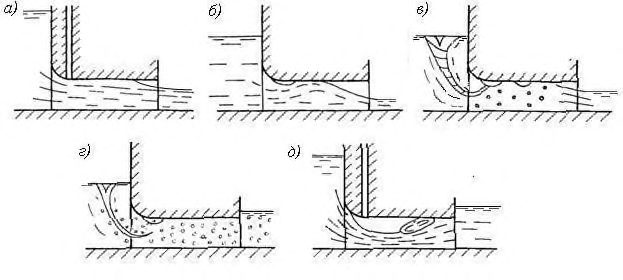
а) - устойчивый частично напорный с незамкнутой воздушной полостью; ческим прыжком, ниже которого по течению водовоздушная смесь заполняет весь участок б) - устойчивый частично напорный с замкнутой воздушной полостью; в) - неустойчивый частично напорный; г) - эмульсионный; д) - частично-напорный с гидравливодовода
Рисунок 1 - Схемы частично напорных режимов течения в закрытом водосбросе, отличающихся заполнением поперечного сечения
За выходом водосбросов в зависимости от уровня воды в нижнем бьефе могут устанавливаться следующие условия истечения: свободное; несвободное неподтопленное; подтопленное; затопленное.
Водосбросные сооружения различаются следующими типами сопряжения бьефов и гашения избыточной кинетической энергии в нижнем бьефе: сопряжение бьефов и гашение избыточной кинетической энергии в донном гидравлическом прыжке; сопряжение бьефов с помощью одной из форм поверхностного или поверхностнодонного гидравлического прыжка с гашением избыточной кинетической энергии в прыжке и по длине нижнего бьефа; сопряжение бьефов отбросом струй от сооружения с гашением значительной части избыточной кинетической энергии в воронке размыва и возможным образованием подпора на гряде отложений.
Выбор типа сопряжения бьефов определяется: расположением концевого участка водосброса относительно других сооружений гидроузла; видом основания: скальное или нескальное; скоростью схода струи с водосброса и удельным расходом воды.
Водосбросные сооружения состоят из следующих основных конструктивных участков (рисунок 2): 1 - подводящий (подходной) участок; 2 - участок входа, 3 - транзитная часть (водосбросной тракт), 4 - участок сопряжения с нижним бьефом; 5 - отводящее русло, 6 - затворная камера. Часть участка входа, примыкающую к входному сечению, где происходит значительная деформация потока, называют входным порталом или оголовком. Выходной участок закрытых водосбросов, оборудованный, как правило, затворами, называют низовым порталом. В ряде случаев некоторые из участков в составе водосбросных сооружений могут совмещаться или вообще отсутствовать. а) - открытый береговой водосброс; б) открытый русловой водосброс в виде водосливной плотины с высоким порогом; в) закрытый туннельный водосброс
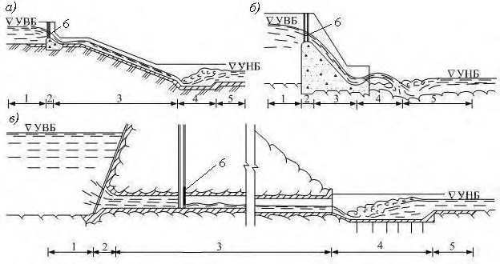
Рисунок 2 - Основные участки водосбросных сооружений
Подводящие участки водосбросов могут выполняться в виде каналов или выемок. Следует различать подводящие участки береговых водосбросов и подводящие участки русловых водосбросов-водосбросных плотин. Элементы подводящих участков струенаправляющие стены, сопрягающие участки, конусы грунтовых плотин.
При проектировании подводящих участков необходимо соблюдать следующие условия: течение должно быть спокойным, безотрывным, с нормальным направлением к фронту водосброса; на подходе к входной части водосброса должно быть обеспечено равномерное распределение удельных расходов; при наличии косого подхода к водосбросу следует предусматривать специальные направляющие стены и/или струенаправляющие дамбы.
В длинных подводящих каналах следует оценивать потери энергии потока по их длине и, при расчете пропускной способности водосброса, учитывать, что уровень воды перед их входным сечением устанавливается ниже отметки воды в водохранилище.
Подводящие участки водосбросов и сопрягающие сооружения должны проектироваться с учетом их влияния на условия подхода к другим водопропускным сооружениям
СП 290.1325800.2016 гидроузлов и , прежде всего, к зданию ГЭС, а также на условия пропуска через водосброс льда, наносов, леса и плавающего мусора.
Поверхностные водосбросы в составе гидроузлов следует применять как собственно водосбросы - для сброса из верхнего бьефа излишней воды в нижний бьеф или в бассейн другой реки в период прохождения паводков. В ряде случаев, при необходимости осуществления полезных попусков в нижний бьеф, их следует использовать в качестве водовыпусков. В качестве водоспусков для опорожнения водохранилища они применяются лишь в составе низконапорных гидроузлов и при низком (на уровне дна) расположении порогов их входных участков (водосливов).
Поверхностные водосбросы при соответствующем обосновании следует применять также для сброса в нижний бьеф льда, плавающего сора, в качестве элементов рыбопропускных сооружений и для пропуска бревен как лесоспуски и плотоходы.
Поверхностные водосбросы отличаются друг от друга очертанием гребня в плане, формой поперечного профиля, высотой водосливного порога.
Водосливные плотины малой высоты имеют распластанный профиль и по форме и размерам поперечного сечения являются водосливом с широким порогом.
Водосливные плотины средней и большой высоты выполняются с криволинейным практическим профилем водосливной поверхности, безвакуумным или вакуумным.
Водосливы с тонкой стенкой применяются в случае незначительного перепада уровней воды для временных сооружений. В практике гидротехнического строительства для эксплуатационных водосбросов они имеют ограниченное применение.
Пропускная способность водослива определяется значением расхода воды Q, переливающейся через водосливную стенку. В общем случае расход Q может быть вычислен по формуле
Формула из оригинального документа не распознана при конвертации. Сверьтесь с официальным изданием.
где 𝐻0 = 𝐻 + 𝑉 0 2 /2𝑔 - полный напор водослива, H - напор на гребне водослива, определяемый разностью отметок уровня воды в верхнем бьефе и гребня водослива, 𝑉0 - скорость подхода воды к водосливу в верхнем бьефе; m - коэффициент расхода водослива, b -ширина водослива (водосливного пролета), определяемая по нормали к направлению течения; - коэффициент бокового сжатия, учитывающий соотношение ширины потока в верхнем бьефе и ширины b водослива; 𝜎 п - коэффициент подтопления, учитывающий вли- яние уровня нижнего бьефа на истечение воды через водослив и зависящий от разницы отметок воды в нижнем бьефе и отметки гребня водослива.
Определение коэффициентов, входящих в формулу (4), приведено в [3].
Водосливы практического профиля следует выполнять с криволинейным оголовком, работающим в безвакуумном режиме при пропуске расхода основного расчетного случая. Сопряжение оголовка с водосливной гранью должно быть плавным. Уклон водосливной грани и ее протяженность следует назначать исходя из конструктивных особенностей профиля плотины в соответствии с требованиями СП 40.13330.
Очертание безвакуумного оголовка должно приниматься по координатам профилей таких водосливов, обоснованных ранее на основании экспериментальных исследований (типа WES, Кригера-Офицерова и др.). Эти координаты приводятся в справочных изданиях в виде расчетных формул или таблиц. Работа оголовков как безвакуумных обеспечивается только при значительной ширине водослива, свободном истечении и напорах на гребне водослива Н ≤ Н проф, где Н проф- профилирующий напор, т.е. напор на гребне, принятый при определении координат водосливной поверхности. Значение Н проф должно приниматься при уровне воды в верхнем бьефе, равном или несколько большем НПУ. Необходимо учитывать, что даже при H = H проф и наличии пазов затворов и быков, выдвинутых на расстояние менее 0,5 Н проф, на сливной грани вблизи быков таких водосливов имеют место вакуумы, достигающие 0,05 Н проф. При повышении уровня выше НПУ ( Н ≥ Н проф) и в случае истечения из-под затвора на поверхности оголовка происходит дополнительное понижение давления, и он работает как вакуумный.
Для снижения значений мгновенных вакуумов в случаях, рассмотренных в 6.4, рекомендуется: смещение линии опирания низового контура затворов в сторону нижнего бьефа от гребня на (0.1-0,2) Н проф; закрытие пазов плоских затворов при пропуске расходов, близких к расходу основного расчетного случая; увеличение профилирующего напора на 10%-15% по сравнению с напором, соответствующим расходу основного расчетного случая; увеличение пролета в створе низовой грани паза плоских затворов по сравнению с пролетом в створе его верховой грани для обеспечения подвода по пазам воздуха к сливной грани.
Вакуумные водосливные плотины (водосливы) по сравнению с безвакуумными имеют более высокие коэффициенты расхода m , а также более обжатые профили, оголовки которых являются более простыми в исполнении (с круговым или эллиптическим оголовком). Применение их целесообразно для получения более обжатого профиля поперечного сечения плотины в случаях, когда: безвакуумный профиль при небольших и средних высотах водосливной плотины имеет чрезмерный запас устойчивости против сдвига, а облегчение его другими способами или конструктивными мероприятиями (устройство продольной полости в теле плотины, устройство нависающей в сторону верхнего бьефа консоли оголовка и др.) приводит к усложнению конструкции; удельный расход воды в нижнем бьефе 𝑞 = 𝑄 /𝑏 не является лимитирующей величиной и сравнение вариантов целесообразно проводить по напору на гребне H водослива, а не по удельному расходу q ; площадь временно затапливаемых земель в верхнем бьефе в период пропуска паводка необходимо сократить до минимума.
Для работы водослива без кавитационных явлений и неблагоприятных прорывов воздуха в область вакуума необходимо: обеспечить допустимые значения вакуума на оголовке водослива; предотвратить срыв вакуума путем конструктивного оформления участка оголовка: устройства плавно очерченных устоев и удлиненных в сторону верхнего бьефа быков, расположения точки опирания низового контура затворов за пределами зоны вакуума; ограничить отношение напора H к фиктивному радиусу r ф вакуумного водосливного оголовка до значения 𝐻 𝑟ф / =3,4…3,6, а в сооружениях I класса - до 3,0…3,3.
Фиктивный радиус эллиптического (в частном случае, кругового) вакуумного оголовка r ф определяется радиусом окружности, вписанной между сторонами АВ,ВС и СД оголовка (рисунок 3).
Значения вакуума на оголовке водослива могут считаться допустимыми, если они не превышают возможного предельного значения вакуума, соответствующего абсолютному давлению паров воды (4.14).
При проектировании водосливных плотин следует учитывать особенности режимов сопряжения бьефов: скоростную структуру потока - распределение скоростей по длине и ширине нижнего бьефа, в том числе у обтекаемых поверхностей; уровни воды вдоль ограждающих стен и берегов с учетом их колебаний; гидродинамические воздействия на крепление и другие элементы сооружения в нижнем бьефе; деформации русла нижнего бьефа: местные размывы пород, слагающих дно и берега, образование бара - отложений продуктов размыва.
Должны учитываться конкретные геологические условия в зонах местного размыва русла нижнего бьефа: состав и зоны залегания различных грунтов и пород; гранулометрический состав, плотность и другие физико-механические характеристики несвязных грунтов; сцепление, плотность и другие физико-механические характеристики связных грунтов; залегание пластов, характеристики трещиноватости и размеров отдельностей (элементарных породных блоков) и их распределение в скальном массиве.
Необходимо учитывать расположения плотины и других сооружений гидроузла по ширине нижнего бьефа и очертание в плане отводящего русла, наличие на берегах инженерных сооружений или других объектов, сохранность которых должна быть обеспечена при всех возможных условиях пропуска расходов через гидроузел и т.п. При этом необходимо учитывать также разнообразие форм сопряжения сбросного потока с водной массой нижнего бьефа при различных уровнях воды.
Уровни воды в нижнем бьефе должны приниматься с учетом прогноза возможного их понижения вследствие трансформации русла [4].
При возведении низко- и средненапорных гидроузлов на нескальном основании для предотвращения опасного размыва грунта потоком, переливающимся через плотину, и подмыва основания плотины, в ее нижнем бьефе необходимо устраивать крепление русла в виде бетонного водобоя и рисбермы, завершающейся переходным креплением (рисунок 4).
Конструкция и типы крепления нижнего бьефа, их компоновка зависит от совокупности факторов, основными из которых являются геология основания и топография реки ниже плотины. При значительном заглублении коренных пород концевое крепление следует выполнять в виде ковша (регулятора размыва), образуемого гибкой наклонной рисбермой, нижняя часть которой прикрывается каменной наброской. Дно ковша должно приниматься на отметке, близкой к дну ямы размыва, прогнозируемой при пропуске основного расчетного расхода. В процессе размыва отводящего русла должно происходить распределение наброски по поверхности верхового откоса образующейся ямы размыва, чем обеспечивается защита рисбермы от подмыва и провисания. В случае подмыва концевых плит гибкой рисбермы они должны опускаться, предохраняя горизонтальную часть рисбермы от разрушения.
При высоком залегании коренных пород следует рассматривать вариант концевого крепления в виде зуба, расположенного в конце жесткой рисбермы (или водобоя) и врезающегося в толщу коренных пород (рисунок 5). Низовая грань зуба должна защищаться каменной наброской, устойчивой при пропуске расчетных расходов.
Способ сопряжения водосливной поверхности плотины с креплением, состав и конструкция элементов крепления позволяют создать в нижнем бьефе различные режимы течения: донный; поверхностный; смешанный (обычно поверхностно-донный).
Донный режим сопряжения бьефов конструктивно следует обеспечивать плавным сопряжением водосливной поверхности с водобоем. Такой режим течения характеризуется интенсивным гашением избыточной кинетической энергии сбросного потока в донном гидравлическом прыжке. Устройство водобойного колодца и/или установка на водобое гасителей энергии (пирсов, шашек, водобойных стен) должны способствовать затоплению гидравлического прыжка и интенсификации гашения кинетической энергии, а также распределению сбросного потока по ширине отводящего русла, особенно при работе части фронта водосбросной плотины или при неравномерном открытии водосливных пролетов.
Основной недостаток донного режима - невозможность обеспечить безударный пропуск через сооружение льда и других плавающих тел.
Поверхностный режим сопряжения бьефов должен конструктивно обеспечиваться устройством в конце водосливной поверхности уступа, сход с которого сбросного потока происходит на некотором возвышении над поверхностью водобоя (рисунок 6). При поверхностном режиме течения пропуск плавающих тел не вызывает затруднений. Придонная скорость потока на ближайшем к водосбросу участке нижнего бьефа значительно ниже, чем при донном режиме; поверхностная скорость - значительно выше.
Рисунок 6 - Водосливная плотина с уступом
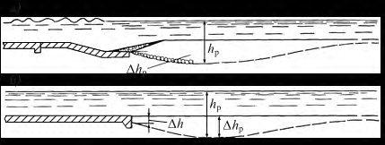
Следует учитывать недостатки поверхностного режима течения: практическая неуправляемость поверхностного потока и его интенсивное воздействие на береговые склоны отводящего русла, распространяющееся на существенно большее расстояние по сравнению с условиями их устойчивости при донном режиме течения; сравнительно малый диапазон уровней нижнего бьефа, при которых сохраняется незатопленный поверхностный режим.
Смешанный поверхностно-донный режим наблюдается, когда при повышении уровней нижнего бьефа происходит затопление поверхностной струи. При таком режиме возможно ограничение по условиям пропуска плавающих тел.
Основные задачи гидравлического обоснования водосливных плотин на нескальных основаниях, которые необходимо учитывать при проектировании: назначение целесообразной, по условиям сопряжения потока с нижним бьефом, ширины водосливного фронта; выбор режимов сопряжения бьефов и конструкций, компоновок и размеров элементов водосливной плотины и устройств нижнего бьефа, обеспечивающих: защиту сооружений гидроузла и примыкающих к нему участков неукрепленного русла от опасного подмыва; создание благоприятных условий работы других сооружений гидроузла (здания ГЭС, судоходных и рыбопропускных сооружений, водозаборов и т.п.), находящихся в непосредственной близости с водосбросом.
При выборе конструкций, компоновок и размеров водосбросов и креплений нижнего бьефа целесообразно в первом приближении руководствоваться известными инженерными решениями (аналогами) и опытом их практического применения при строительстве и эксплуатации гидроузлов.
Назначение целесообразной ширины водосливного фронта должно производиться на основе определения расчетных удельных расходов на водосливе, водобое, рисберме, в отводящем русле, которые назначаются с учетом допустимых глубин размыва за креплением водосброса. Глубины размыва определяются на основании гидравлических лабораторных исследований (обязательных для сооружений I-II класса) и расчетов, учитывающих геологическое строение зоны размыва и механические свойства размываемых грунтов, главным образом, их неразмывающие скорости (рисунок 7).
Обоснование целесообразности устройства гасителей энергии на водобое должно сопровождаться технико-экономическим сопоставлением с вариантами заглубления водобоя и устройства водобойного колодца. Для рассматриваемых вариантов конструкции крепления должна производиться оценка кавитационной безопасности работы его элементов, в том числе, при работе частью водосливного фронта в связи с пониженным уровнем нижнего бьефа.
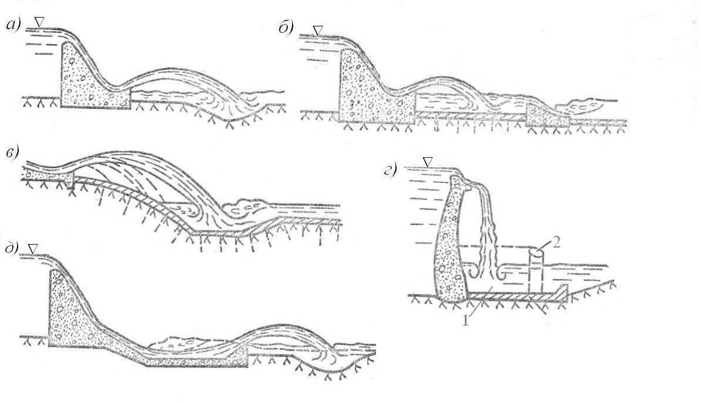
а) - при наличии концевого крепления в виде ковша; б) - при наличии зуба;
∆ h p - глубина наибольшего размыва, представляющая собой заглубление отметки дна в фокусе размыва относительно отметки верха концевых плит рисбермы; ∆ h - глубина размыва в конце крепления (обнажение вертикальной грани последней плиты или зуба); h p - максимальная глубина воды в воронке размыва
Установление плановых размеров и толщины плит водобоя и жесткой рисбермы должно производиться на основании данных о гидродинамических нагрузках, действующих на них и на установленные на водобое гасители. Для снижения противодавления под плитами водобоя следует устраивать горизонтальный плоский дренаж с обратным фильтром, а в плитах - разгрузочные дренажные колодцы с фильтрующим заполнителем (рисунки 4 и 5).
При проектировании конструкции и размеров переходного крепления должна учитываться глубина местного размыва (рисунок 7) при наиболее неблагоприятных условиях сопряжения бьефов, в том числе, в период возведения гидроузла.
Оценка режимов сопряжения бьефов, гидродинамических воздействий на элементы крепления, местных размывов неукрепленного русла должна производиться с учетом понижения уровней воды в нижнем бьефе, возможного вследствие трансформации русла под воздействием осветленного (лишенного наносов) потока и зарегулирования стока реки. Также должна производиться оценка влияния на условия работы водосброса и нижнего бьефа возможного повышения уровней воды у сооружений вследствие образования бара из отложений крупных фракций грунта за воронкой местного размыва.
Окончательный выбор конструкции водосброса и крепления его нижнего бьефа должен сопровождаться поверочными расчетами и лабораторными исследованиями режимов сопряжения бьефов и гашения энергии для основного и поверочного случаев пропуска расчетных расходов через сооружения гидроузла. Должны быть также рассмотрены условия пропуска расходов большей обеспеченности, при которых, вследствие работы многопролетных плотин не полным фронтом или при неравномерном распределении расходов по фронту сооружения, возможно образование неблагоприятных условий гашения энергии и режимов потока в нижнем бьефе (отклонение потока к одному из берегов, сбойность потока). При этом должен быть выполнен полный комплекс исследований, включающий оценку гидродинамических и кавитационных воздействий на элементы конструкции, аэрации сбросного потока, волнообразования в нижнем бьефе, местных размывов и их влияния на устойчивость концевого крепления.
При проектировании водосбросов гидроузлов, работающих при высоких скоростях течения, существенное внимание должно быть уделено увеличению глубин потока вследствие насыщения его воздухом (самоаэрация потока), а также устранению кавитационных явлений.
Самоаэрация потока на сливной грани водосбросов определяется скоростью течения, глубиной потока, шероховатостью водосливной поверхности и ее протяженностью. За счет самоаэрации в пределах водосбросного тракта существенно увеличивается среднее воздухосодержание, когда удельные расходы относительно невелики (менее 40 м² /с). При больших удельных расходах самоаэрация может наблюдаться лишь в конце водосбросного тракта или вообще отсутствовать. Неблагоприятные последствия самоаэрации рассмотрены в 4.19 и 4.20.
Створ, в котором начинается самоаэрация на тракте водосброса (4.19), распределение воздуха в водовоздушном потоке и в водокапельном слое над этим потоком, содержание воздуха у обтекаемых поверхностей сооружения должны быть приближенно установлены расчетом.
Высоконапорные гидроузлы, как правило, возводятся на скальном (иногда полускальном) основании. При проектировании водосливных плотин, рассчитанных на работу при высоких скоростях течения необходимо предотвращать возможность появления кавитационных явлений. При скоростях течения менее 25-30 м/с кавитацию можно исключить подбором формы продольного профиля водосливных плотин и сглаживанием неровностей, возникших при укладке бетона.
При скоростях течения на водосливе, превышающих 25-30 м/с, в дополнение к указанным способам снижения кавитационных воздействий, следует применять аэрацию обтекаемых потоком поверхностей как наиболее эффективное мероприятие, предотвращающее кавитационные повреждения. Необходимо учитывать, что при удельных расходах до 10-15 м² /с пристенные слои потока насыщаются воздухом за счет самоаэрации с поверхности.
Для насыщения потока воздухом у обтекаемых поверхностей водосброса следует применять аэраторы, основные схемы конструкций которых приведены на рисунке 8. Возможны и видоизмененные варианты этих схем. Аэраторы создают воздушные полости под струями на контакте с поверхностью бетона или в толще потока. В эти полости необходима подача воздуха, который затем защемляется потоком и распространяется у его твердых границ.
Систему аэраторов и воздуховодов необходимо выбирать в зависимости от конструкции водосливной плотины, ее архитектурных и других особенностей.
Проектирование конструкций аэраторов и их расположение на тракте водосливов, а также систем для подвода к ним воздуха следует производить на основе гидравлических исследований на крупномасштабных моделях или применяя аналоги. При проведении гидравлических исследований необходимо подбирать тип, форму и размеры аэраторов, их местоположение, определять гидродинамические характеристики их работы, размеры воздуховодов и расход подводимого воздуха.
Продольные разрезы по оси аэраторов: а) -трамплинный; б) и в) - ступенчатый и комбинированный без воздухоподводящего (аэрационного) паза и с воздухоподводящим пазом на дне; Схемы подвода воздуха : I - полостная за бычком; II - полостная за ступенчатым или трамплинным отклонителем; III - с боковым воздухоподводящим пазом; IV - канальная; 1 - неаэрированный поток; 2 - подвод воздуха; 3 - водовоздушная смесь; 4 - подструйная полость; 5 - граница в конце подструйной полости; 6 - воздухоподводящая полость; 7 - воздуховод; 8 воздухоподводящий паз; 9 - воздухоподводящая галерея
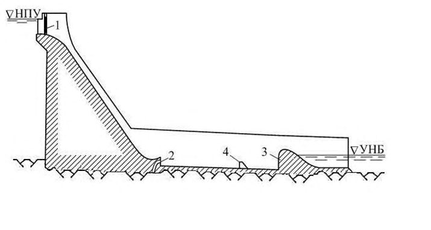
Рисунок 8 - Схемы аэраторов и устройств для подвода воздуха
Сопряжение сливной грани водосливных плотин с водобоем при скоростях течения более 25-30 м/с следует осуществлять уступом с подводом воздуха под струю воды (рисунок 9). Необходимость этого уступа, который позволяет избежать понижения давления на участке водобоя, примыкающего к повороту в вертикальной плоскости должна
СП .1325800.2016 быть установлена на основе экспериментальных исследований, в которых должны быть определены высота уступа и размеры воздуховодов к этому уступу.
Необходимо ограждать входное отверстие труб для подвода воздуха к аэраторам и за уступ в конце сливной грани по условиям безопасности и надежности работы для предотвращения засасывания в них строительного мусора, а также скоплений в них снега, льда и воды, которые могут уменьшить поперечное сечение воздуховодов.
Для предотвращения опасного размыва скального грунта сбросным потоком необходимо рассматривать следующие варианты сопряжения бьефов: с помощью отброса сбросного потока с носков-трамплинов, на безопасное расстояние от места сопряжения низовой грани плотины с основанием (рисунок 9 а, в); гашение энергии при этом происходит в воронке размыва; с отбросом или падением струи на бетонное крепление с гашением энергии в затопленном гидравлическом прыжке (рисунок 9б); а, б, в - отброс с носка-трамплина соответственно на дно водотока, на специальное железобетонное покрытие, заанкеренное в скалу, в колодец; г - свободное падение струи с гребня на водобой (1) или в замкнутый водоем, образованный стенкой (2); д - сопряжение бьефов с помощью крепления с носком-отклонителем в конце, на котором гашение энергии при расходах частой повторяемости происходит в донном режиме течения, а при расходах редкой повторяемости поток отбрасывается в нижний бьеф, и энергия гасится в воронке размыва.
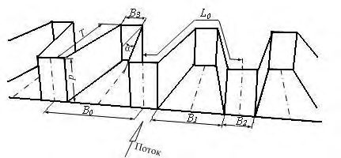
Рисунок 9 - Сопряжение бьефов с отбросом и свободным падением струи с помощью водобойного колодца, в котором в гидравлическом прыжке происходит гашение основной части избыточной кинетической энергии сбросного потока, поступающего через водосбросы в теле плотины (рисунок 10).
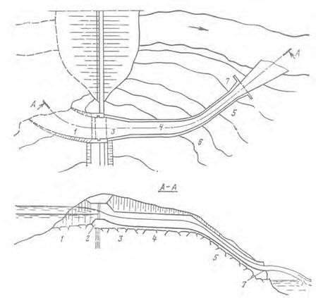
1 - плоский затвор; 2 - подвод воздуха под струю; 3 - водобойная стенка; 4 - гаситель
Рисунок 10 - Водосбросное сооружение высоконапорного гидроузла с гашением энергии в водобойном колодце
Гашение энергии в водобойном колодце должно осуществляться в затопленном гидравлическом прыжке. Глубина, необходимая для затопления прыжка, равная 1,10-1,15 второй сопряженной глубины, создается устройством на выходе из колодца водобойной стенки и/или уступа. На выходе из колодца (ниже водобойной стенки), как правило, требуется устройство второго водобоя, на котором происходит гашение энергии потока, переливающегося через стенку.
Крепление дна колодца бетонными плитами (блоками) должно быть устойчивым под воздействием гидродинамической нагрузки, обусловленной воздействием высокоскоростного сбросного потока и затопленного гидравлического прыжка. Особое внимание должно уделяться качеству выполнения поверхности дна колодцев. Швы между плитами (блоками) и шероховатость поверхности не должны иметь выступов, характеризующихся параметрами кавитации К , меньшими критических К кр (4.14). Швы должны быть водонепроницаемыми; гидродинамические воздействия на верхнюю поверхность крепления не должны передаваться на нижнюю его поверхность.
При назначении целесообразной ширины водобойного колодца, размеров плит крепления дна и при оценке гидравлических режимов в колодце следует руководствоваться положениями 6.16.
При определении высоты стен и устоев в нижнем бьефе должна учитываться существенная аэрация потока в зоне гашения энергии. При этом необходимо принимать во внимание образование воздушно-капельного слоя потока (4.20) и его воздействие на сооружения, примыкающие к водосбросу, в том числе при сбросе расходов при отрицательных температурах.
Размеры и конструкция водобоя за водобойной стенкой должны назначаться из условия обеспечения необходимого гашения избыточной энергии потока, переливающегося через стенку.
При сопряжении бьефов по типу отброшенной струи с гашением избыточной энергии в естественном (или искусственном) углублении дна русла (воронке размыва) выбор конструкции носка-трамплина должен производиться с учетом топографии и геологии нижнего бьефа (рисунок 9). Конструкция трамплина должна придавать отбрасываемой струе требуемую конфигурацию, направление и дальность отлета.
Основная задача гидравлического расчета трамплинов - определение параметров потока в пределах носка-трамплина заданной конфигурации, дальности отброса струи, геометрии следа струи в месте входа ее под уровень воды, глубины и размеров воронки размыва, размеров бара. Конфигурация трамплина должна обеспечивать требуемые параметры струи и гидравлический режим потока в нижнем бьефе. Глубина и размеры воронки размыва в плане, удаление от низовой грани плотины, других сооружений и берегов должно гарантировать их безопасность при наиболее неблагоприятных сценариях развития размыва.
Отработка и обоснование конструкции носка-трамплина на сооружениях I-II классов должны производиться на пространственных физических моделях, воспроизводящих водосброс и участок нижнего бьефа, на котором происходит сопряжение отброшенной струи с водной массой и растекание сбросного потока по ширине отводящего русла. На модели должен быть исследован процесс развития воронки и образование бара из продуктов отложений, в том числе в период возведения гидроузла.
Ступенчатые водосливные плотины следует применять при технологии их возведения из малоцементного укатанного слоями бетона; низовую грань водосливной плотины, включающую ступени, укладывают из вибрированного бетона или выполняют из сборных элементов. Высота ступеней на сливной грани этих плотин должна быть пропорциональна 1 - 3 слоям укатанного бетона толщиной каждого 25-50 см. Следует различать два типа ступенчатых водосливных плотин: нерегулируемые, обеспечивающие существенное гашение избыточной кинетической энергии при удельных расходах воды меньше 40-45 м² /с. Степень гашения энергии на такой сливной грани возрастает с уменьшением удельного расхода и увеличением высоты плотины. Увеличение высоты ступеней на сливной грани даже в три раза повышает степень гашения энергии на 5%-10%. регулируемые (с затворами на гребне), предназначенные для пропуска паводков со значительными удельными расходами на сливной грани, составляющими до 200-250 м² /с.
При проектировании ступенчатых водосливных плотин высотой более 25-30 м для обеспечения рациональных условий гашения избыточной кинетической энергии их следует выполнять с криволинейными в продольном сечении обтекаемыми водосливными оголовками (например, безвакуумными), плавно сопрягающимися с прямой линией, проведенной через кромки ступеней постоянной высоты d (рисунок 11). Угол наклона этой линии должен определяться статическими условиями работы ступенчатой водосливной плотины. Несколько ступеней меньшей высоты, чем на остальной части сливной грани, следует предусматривать на участке сопряжения с криволинейным профилем водосливного оголовка, что способствует увеличению объема укатанного бетона. Их высота должна быть пропорциональна числу слоев укатанного бетона. Устройство такого переходного участка должно обеспечивать при расходах ступенчатого водослива, существенно меньших расчетных, уменьшение разбрызгивания воды при перепадном режиме течения на ступенчатой сливной грани (с воздушными полостями под транзитным потоком).
СП .1325800.2016
1 - безвакуумный оголовок с профилирующим напором Н пр; 2 - криволинейный участок профиля со ступенями уменьшенной высоты; 3 - основная часть профиля ступенчатого водослива со ступенями постоянной высоты
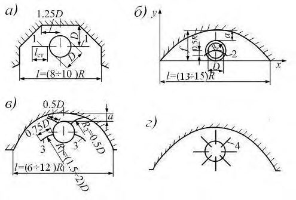
Рисунок 11 - Схема продольного профиля участка ступенчатого водослива, обеспечивающего гашение избыточной кинетической энергии, который примыкает к водосливной оголовку
Ступенчатые водосливы трапецеидального профиля следует предназначать только для пропуска небольших удельных расходов: при высоте плотины не более 10 м до 5 м² /с, при высоте не более 20 м - до 10 м² /с. Уклон низовой грани таких плотин должен устанавливаться на основании расчета кривой свободного падения потока с гребня водослива таким образом, чтобы в гашении энергии было задействовано 0,7-0,8 длины низовой ступенчатой грани.
Быки между пролетами ступенчатых водосливных плотин, предназначенных для пропуска значительных удельных расходов, необходимо расширять в плане в направлении течения (рисунок 12), при этом ширина пролета должна быть уменьшена до 0,350,50 от ширины на гребне плотины. В конце суженной части пролета целесообразно предусматривать вертикальный уступ высотой 2-3 м; в этом случае подвод воздуха обеспечивается по всему периметру потока. Для ступенчатых водосливных плотин этого типа характерным является повышенное брызгообразование. Поэтому здание ГЭС, распределительные устройства и линии электропередач должны находиться на достаточном расстоянии от водосливных пролетов. а) продольный разрез; б ) - вид на водосливной пролет с нижнего бьефа; 1 - сегментный затвор; 2 - водосливной оголовок безвакуумного профиля из вибрированного бетона; 3 - бык; 4 - сужение пролета; 5 - сборные элементы сливной грани; 6 - крепление; 7 - водобойный колодец; 8 - водобойная стенка
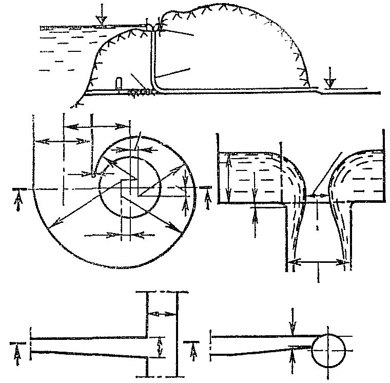
Рисунок 12 -Ступенчатая водосливная плотина для пропуска значительных удельных расходов
При проектировании ступенчатых водосливных плотин необходимо учитывать, что участок их сливной грани между створом, где происходит возникновение аэрации на поверхности потока, и створом, в котором пузырьки воздуха проникают до граней ступеней, - наиболее кавитационно опасный. Здесь скорости течения уже достаточно велики, а воздух еще не проник до граней ступней. Наиболее существенное понижение давления наблюдается на вертикальных гранях ступеней.
При применении конструкций ступенчатых водосливных плотин со значительными удельными расходами (рисунок 12) необходимо предусматривать гашение энергии в нижнем бьефе. Потери напора на сливной грани этих плотин сравнительно невелики.
Лабиринтные водосливы следует применять для существенного снижения форсирования УВБ в случаях, если на подходе к фронту сооружения удельные расходы относительно невелики (не более 15-20 м² /с). Их необходимо выполнять в виде вертикальной стенки (обычно их высота не более 4 м), гребень которой в плане имеет зигзагообразную форму (рисунок 13). Эти водосливы являются нерегулируемыми (без затворов), они не требуют оперативного обслуживания и достаточно надежны в эксплуатации.
Необходимо учитывать, что при надлежащем подборе параметров лабиринтного водослива при тех же размерах по фронту и напорах они могут пропускать расходы в 2-3 раза больше, чем прямолинейные водосливы. Коэффициент расхода лабиринтных водосливов, определенный по их ширине по фронту в основном зависит от отношений H 0/ p (здесь H 0 - напор на гребне водослива с учетом скоростного напора на подходе к нему) и L 0/ B 0 (рисунок 13). Наибольшие значения его коэффициентов расхода находятся при значениях 0,2< H 0/ p <04 и при L 0/ B 0=3,4…3,8. Дальнейшее повышение значений L 0/ B 0 практически не увеличивает значение коэффициента расхода, а при значениях L 0/ B 0 меньше 3,2 значение коэффициента расхода резко снижается.
Для уменьшения высоты стен лабиринтного водослива по условиям прочности дно между стенами на участке, выдвинутом в сторону нижнего бьефа, допускается выполнять с обратным уклоном, который должен быть не больше 1:3. Практически такое мероприятие не влияет на коэффициент расхода.
В случае, если на гребне подпорного сооружения недостаточно места для размещения лабиринтного водослива, схема конструкции которого приведена на рисунке 13, следует применять его конструкцию, обозначаемую как PKW (водослив типа «клавиши пианино»), ориентировочные оптимальные размеры которой приведены на рисунке 14 ( Р -максимальная высота стен лабиринта). Для конструкции с размерами, приведенными на рисунке 14, отношение L 0/ B 0=5; дальнейшее увеличение этого соотношения не оправдано экономически. Возможны модификации этой конструкции, например: со ступенчатым дном внутри нисходящей части секции водослива, имеющей меньший пролет; с более длинной консолью в нисходящей секции и т.д. а) - план; б) - разрез по нисходящей части секции; в) разрез по восходящей части секции
Коэффициент расхода для лабиринтного водослива с параллельными боковыми стенами (рисунок 14) зависит от значения В 1/ В 2. Его максимальное значение достигается при В 1= В 2. В тоже время при расчетном расходе значение В 2 не должно быть меньше 2 Н 0.
Береговые водосбросы следует устраивать главным образом в тех случаях, когда топография створа возведения гидроузла не позволяет разместить водосливную плотину в русловой части гидроузла.
Отличительные особенности береговых водосбросов: значительная протяженность тракта; сложные геометрические формы отдельных участков и всего водосброса в целом; образование косых волн и прыжков над основным потоком на участках сужения и поворотов тракта, образование катящихся волн;
СП .1325800.2016 аэрация потока.
При проектировании береговых водосбросов должны быть решены следующие задачи: определение геометрических форм дна и стен водосброса, способствующих уменьшению нежелательных явлений при воздействии на них бурного потока; определение возможности образования косых волн и прыжков при взаимодействии бурного потока с дном и стенами водосброса в месте изменения их формы; оценка аэрации потока, гидравлических сопротивлений и спонтанного волнообразования на тракте водосброса; оценка кавитационного воздействия потока на обтекаемые поверхности водосброса; разработка мер по снижению кавитационных воздействий и возможности возникновения спонтанного волнообразования (катящихся волн).
Основные участки берегового водосброса (рисунок 15):
1 подводящий участок в виде расчисток берегового склона и/или канала;
2 водослив с устройствами для регулирования расхода воды;
3 участок сужения, создаваемый непосредственно за водосливом для уменьшения объема земляных работ;
4 отводящий канал, выполненный, как правило, в виде призматического русла с малым уклоном дна, исключающим подтопление водослива и возникновение гидравлического прыжка;
5 участок сужения и поворота в плане, устраиваемый, как правило, в месте перехода сбросного тракта в крутонаклонный участок;
6 крутонаклонный участок, выполненный в виде быстротока или перепада (обычно многоступенчатого);
7 концевой участок.
В условиях узких речных каньонов часть водосбросного тракта, расположенная на высоких отметках, выполняется, как правило, в туннельной выработке (раздел 7).
Наиболее распространенные варианты конструктивного оформления начальных участков берегового водосброса: фронтальный подход к водосливу - при наличии достаточно широкой береговой террасы, в пределах которой могут быть выполнены расчистки, подводящие к водосливу, гребень которого располагается параллельно оси подпорных сооружений или под небольшим углом к ней;
траншейный водослив - при ограниченных возможностях создания подходных расчисток в условиях крутого берегового склона и/или неоправданно большом объеме расчисток, а также в связи с необходимостью устройства протяженного водосливного порога для пропуска значительных расходов воды при малом подъеме уровня воды в верхнем бьефе.
Разработка рациональных форм водосбросного тракта берегового водосброса на участках сужения, расширения, поворота или их комбинации должна производиться способами управления бурными потоками . Обоснование конструктивных форм этих участков должно производиться методами математического моделирования и проверяться на физических моделях. В процессе моделирования особое внимание должно быть уделено выявлению кавитационно опасных зон и участков локального повышения уровней воды.
При проектировании конструкций, управляющих бурным потоком, следует стремиться к тому, чтобы обтекание их происходило безотрывно.
В местах сужения и поворота боковых стен водосбросного тракта на поверхности бурного потока неизбежно образование косых волн (прыжков). Их образование можно считать допустимым в случае, когда они не приводят к выплескам через боковые стены и не создают неприемлемую картину течения на нижерасположенной части водосбросного тракта.
При необходимости снижения высоты косых волн (прыжков) следует внести конструктивное изменение в очертание стен, а при необходимости, и в очертания дна водосбросного тракта. Подбор рационального очертания водосбросного тракта в зоне образования косых волн следует производить методами математического моделирования. В ответственных случаях требуется экспериментальное подтверждение.
При выборе уклонов дна трассы быстротоков, пропускающих расходы воды с высокими скоростями течения, необходимо стремиться, чтобы большая часть верхового участка тракта выполнялась с относительно малыми уклонами, а участок со значительными уклонами располагался в конце быстротока. При сопряжении участков с относительно малыми уклонами дна с участками, уклон дна которых кр i i (где i кр - критический уклон) следует применять конструкции, исключающие появление на крутонаклонном участке значительных вакуумов и кавитации: выполнение профиля дна этого участка по кривой свободного падения, рассчитанной по средней скорости на верховом участке; устройство в продольном профиле на стыке этих участков вертикального уступа с подводом к нему воздуха.
Для снижения опасности кавитационных явлений на тракте таких быстротоков следует предусматривать устройства для снабжения воздухом слоев потока, примыкающих к обтекаемым поверхностям (аэраторы потока), требования к которым приведены в 6.22 и 6.24.
6.50Форма и конструкция концевого участка зависит от схемы сопряжения водосброса с нижним бьефом
При средних и высоких напорах и при наличии в нижнем бьефе скальных и полускальных грунтов сопряжение бьефов наиболее целесообразно осуществлять по типу отброшенной струи. В этих условиях концевой участок водосброса выполняется в виде носка-трамплина, конструкция которого подбирается таким образом, чтобы обеспечить перераспределение струи и поступление отбрасываемого потока под возможно меньшим углом к противоположному берегу (раздел 9). При этом, гашение энергии сбросного потока должно происходить в воронке местного размыва или в специально подготовленном углублении в дне отводящего русла. При угрозе подмыва основания концевого участка водосброса, а также существенного воздействия в зоне падения струй на береговые склоны должны быть разработаны мероприятия, препятствующие их разрушению.
В случае полускальных и нескальных грунтов, слагающих русло в нижнем бьефе, концевой участок следует выполнять в виде водобойного колодца или водобоя с гасителями энергии (пирсы, шашки и др.). Сопряжение быстротока с водобоем следует осуществлять уступом в случаях указанных в 6.23. Дно и берега отводящего русла должны быть закреплены.
Уменьшение скорости течения и повышение интенсивности гашения энергии потока в пределах тракта быстротока может быть достигнуто устройством на его дне усиленной шероховатости. В качестве усиленной шероховатости чаще используют низкие стенки (ребра), сплошные или отдельно стоящие, располагаемые в плане различным образом (рисунок 16) трапецеидального или прямоугольного сечения. Высота элементов шероховатости не должна быть более h /3, где h глубина потока. l ≈ 8∆ - расстояние между осями элементов шероховатости; ∆ - ширина элемента шероховатости (при трапецеидальном сечении - средняя по высоте)
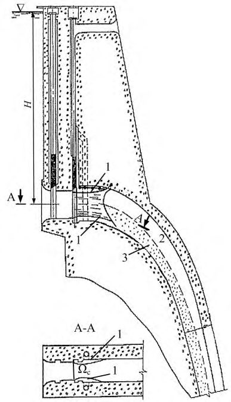
Рисунок 16 - Типы усиленной шероховатости на быстротоках:
Применение усиленной шероховатости способствует существенному облегчению (а иногда и отказу от устройства) крепления в нижнем бьефе, а также снижению опасности кавитационных воздействий на обтекаемых поверхностях. Начальный створ, ниже которого устраивается усиленная шероховатость, принимается выше места, где скорости потока достигают пороговых значений, при которых возможно возникновение кавитации.
При проектировании быстротоков следует учитывать возможность возникновения на свободной поверхности катящихся волн. Возникновение катящихся волн возможно при большой длине быстротока, когда на нем устанавливается режим течения, близкий к равномерному, при постоянном уклоне дна более 0,01 или при изменении уклона дна с большего на меньший. При аэрации потока возможность образования катящихся волн уменьшается. Прогнозирование волнообразования следует выполнять расчетными методами для ряда расходов от 0,2 Q р до Q р - максимальный расчетный расход сброса через сооружение, для выявления расхода, при котором волны могут достигать наибольшей высоты.
Для исключения образования катящихся волн следует устанавливать продольные разделительные стены или применять безволновые формы поперечного сечения быстротока: треугольную, параболическую, эллиптическую и т.д.
Катящиеся волны могут считаться допустимыми в случаях: глубины при наличии катящихся волн меньше глубин, соответствующих случаю пропуска максимального расхода Q р; колебания уровня в нижнем бьефе, обусловленные волнообразованием не вызывают нежелательных последствий.
Перепады следует устраивать в тех случаях, когда рельеф местности и/или выполненные проектные проработки показывают их преимущество перед вариантом быстротока. Различают типы перепадов (рисунок 17): одноступенчатые ( а ) и многоступенчатые ( б ), колодезные ( а, в ) и безколодезные ( б ).
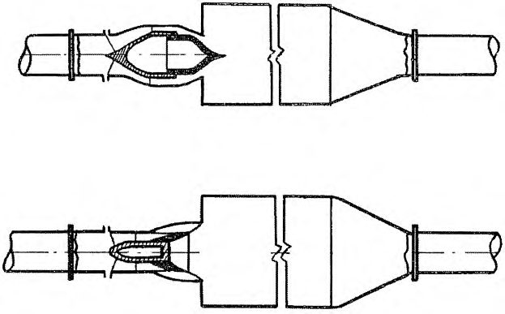
г) г)
Рисунок 17 - Схемы перепадов д) д) е) е) b b ж) ж) з) з)
Число ступеней, их высота и длина должны устанавливаться в зависимости от продольного профиля местности и конструктивных соображений. Длина ступеней l колодез-
H n n
1:
1: ного перепада должна назначаться не меньше суммы значений дальности отлета струи l 0 от стенки верхней ступени и длины прыжка l пр внутри водобойного колодца, образуемого стенкой рассматриваемой ступени: 𝑙 ≥ 𝑙0 +𝑙пр . Высота водобойной стенки должна обеспечивать затопление гидравлического прыжка внутри колодца.
Траншейные водосбросы (водосбросы с траншейным входным участком) целесообразно применять при стесненных подходных условиях и крутых береговых склонах, когда устройство фронтального входа в водосброс приводит к необходимости выполнения глубоких и существенных по объему выемок. Такого рода входные участки с развитым водосливным фронтом следует применять при необходимости обеспечения относительно небольших колебаний уровня верхнего бьефа. В этом случае траншейные входные участки предусматриваются без затворов, а их гребень должен выполняться на отметке НПУ (рисунок 18). а) - план; б) - вид на боковой водослив со стороны водосбросной траншеи; в) и г) -носков на сливной грани;
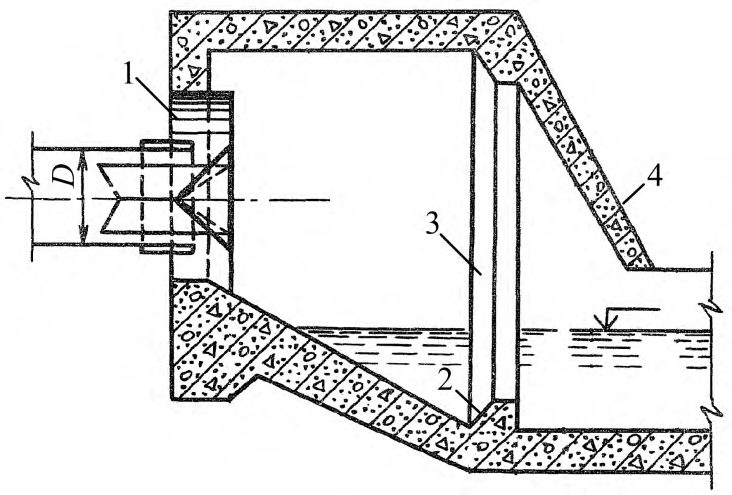
поперечные разрезы по пролетам бокового водослива, соответственно, с носками и без 1 - быстроток; 2 - боковой водослив; 3 - пролеты бокового водослива с носками на сливной грани; 4 - пролеты без носков; 5 - водосбросная траншея
Рисунок 18 - Береговой поверхностный водосброс с траншейным входом:
Особенность компоновки водосбросов с траншейным входом состоит в том, что вода сбрасывается через расположенный на гребне водослив в длинную траншею, по которой она поступает на тракт водосброса.
Водосбросную траншею следует располагать параллельно берегу при расположении водослива с одной ее боковой стороны или при расположении с двух сторон - с боковой и торцевой. В случае благоприятных топографических условий сброс воды в траншею должен осуществляться с двух боковых сторон и с торца. Для развития водосбросного фронта целесообразно предусматривать перед входным сечением водосброса несколько веерообразно расположенных траншей.
В составе траншейных входных участков следует применять водосливные стенки с оголовками на гребне, обладающими высокими коэффициентами расхода: безвакуумные и вакуумные, при этом не допускается их работа в подтопленном режиме течения. Под струи воды, поступающие в траншею переливом через обтекаемый оголовок, следует предусматривать подвод воздуха.
Гидравлический расчет течения для определения размеров траншеи должен проводиться на основании уравнения потока с переменной массой, при этом можно пренебрегать потерями напора на трение по длине.
При проектировании траншейных входных участков водосбросов необходимо учитывать возможность развития циркуляционного движения в траншее, которое наблюдается при односторонней подаче воды в траншею. Для предотвращения такого движения, приводящего к существенным перекосам уровней в поперечных сечениях траншеи, которые распространяются по длине тракта водосброса, возможно применение следующих конструктивных мероприятий: чередование по длине бокового водосливного фронта участков с гладкими оголовками и оголовками, завершающимися носками, отбрасывающими поток к противоположной стене траншеи (рисунок 18); наиболее удобно такое чередование в случае водослива с промежуточными быками; установка пирсов-гасителей на дне траншеи; устройство выступающих ребер на боковой стене траншеи, расположенной напротив водосливной стены.
Необходимо учитывать, что эти конструктивные мероприятия приводят к увеличению аэрации и глубины потока в траншее и в начале отводящего участка водосброса.
Вспомогательные водосбросы, в существенной мере повышающие безопасность эксплуатации гидроузлов, должны предназначаться для пропуска паводков редкой повторяемости. Их включение в состав гидроузлов целесообразно при существенном превышении поверочного расчетного расхода над основным.
Конструктивно вспомогательные водосбросы следует возводить в виде нерегулируемых водосбросов (без затворов), водосбросов с вододействующими затворами (10.21-10.24 ) или в виде плавких (размываемых переливающимся через гребень потоком) вставок. К благоприятным условиям для выполнения водосбросов первых двух типов относятся: длинный фронт водосбросных сооружений, наличие на берегу водохранилища седловины, позволяющей отводить воду на участок ниже по течению реки или в другой водоток.
Такие водосбросы могут выполняться в береговой части плотины или в породах берегового примыкания.
Плавкие вставки следует выполнять в виде разрушающейся при переливе воды через гребень насыпи, которая при уровне воды ниже гребня является частью напорного фронта гидроузла.
Отводящие тракты вспомогательных водосбросов необходимо выполнять с минимальными затратами без специальных устройств для гашения энергии и с облегченным креплением водосбросного тракта или вообще без этого крепления. В то же время не следует допускать аварийных разрушений в пределах этого тракта. При проектировании отводящего тракта вспомогательных водосбросов, должна быть определена зона возможных затоплений и разработаны мероприятия по оповещению населения о пропуске расходов вспомогательного водосброса. Конструкцией вспомогательных водосбросов в случае их редкого применения должна быть предусмотрена возможность проведения восстановительных работ.
Вспомогательные водосбросы, особенно рассчитанные на пропуск значительных расходов, необходимо устраивать таким образом, чтобы при достижении определенного уровня и расхода воды включалась лишь часть их фронта. Для этого гребень разных участков таких водосбросов должен располагаться на разных отметках. Тем самым снижаются расходы на восстановление первоначального состояния вспомогательного водосброса после пропуска паводка. Ступенчатое включение в работу вспомогательных водосбросов, совмещенных с плотиной, позволяет избежать существенного увеличения сбросного расхода при относительно невысоких отметках уровня нижнего бьефа.
В суровых климатических условиях необходимо учитывать, что условия эксплуатации вспомогательных водосбросов могут усложниться в связи: с наличием льда на поверхности воды вблизи вододействующих затворов, и из-за обмерзания их элементов при отрицательных температурах; с медленным оттаиванием весной насыпей размываемых вставок.
Расход плавкой вставки должен устанавливаться с учетом пропускной способности основного эксплуатационного водосброса и ГЭС. Уровень воды, при котором начинается размыв вставки, должен быть определен на основе водохозяйственного обоснования, а ее основные размеры (протяженность по гребню, отметка гребня и порога, деление на участки) - на основе гидравлического обоснования. Вставка должна возводиться из легкоразмываемого материала, свойства которого должны сохраняться на весь период эксплуатации; этот материал не должен обладать скольнибудь существенным сцеплением. При включении вставки в работу должен легко разрушаться и ее противофильтрационный элемент. В основании вставки должна быть выполнена бетонная облицовка и приняты меры против ее разрушения при переливе воды. В месте сопряжения этой облицовки с противофильтрационным элементом должна быть предусмотрена бетонная подушка.
Размываемая вставка ограждается устоями; быками она может быть разделена на отдельные участки. Дорожное покрытие, если оно проложено поверх размываемой вставки, также должно легко разрушаться потоком.
При разработке конструкции плавких вставок следует рассматривать варианты, когда перелив начинается на всем фронте плавких вставок в пределах одного из его изолированных участков или сначала потоком размывается пионерный канал (канава) на их гребне. Для интенсификации размыва низового клина плавких вставок целесообразно их оснащать триггерами (трубами, вход в которые в верхнем бьефе расположен на отметках, при которых вставка должна начинать разрушаться, а выход из которых выведен на низовой откос вставки).
На эксплуатацию размываемых вставок распространяются все требования, предъявляемые к эксплуатации плотин из грунтовых материалов. Кроме того, низовой откос вставки должен предохраняться от зарастания и образования корневого ковра, а пионерный канал на гребне вставки должен очищаться от засорения.
7Туннельные и трубчатые водосбросы с поверхностным забором воды Безнапорные закрытые водосбросы с фронтальными (лобовыми) или траншейными входными участками
В безнапорных закрытых водосбросах с фронтальным (лобовым) входом, должно быть обеспечено течение с частичным заполнением поперечного сечения на всей длине тракта. Такие водосбросы могут устраиваться с небольшим уклоном дна (рисунок 19 а) и б ). При значительном перепаде бьефов за входным оголовком таких водосбросов следует устраивать крутонаклонный участок. Сопряжение его с отводящим участком с малым уклоном дна должно выполняться радиальным поворотом в вертикальной плоскости (рисунок 19 в ). а) - неподтопленный водослив с широким порогом; б) - подтопленный водослив с широким порогом;
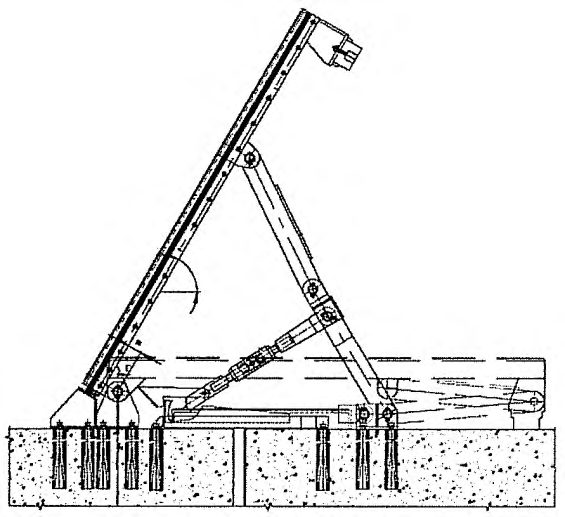
неподтопленный водослив практического профиля в)
Рисунок 19 - Безнапорные закрытые водосбросы с фронтальным лобовым входом, пропускная способность которых определяется как для водослива
Пропускная способность фронтальных водосбросов определяется условиями входа и степенью его подтопления. Пропускную способность оголовков, в пределах которых поток не касается верхней кромки входного сечения, следует рассчитывать на основании схемы истечения как водослив. При напоре на входном пороге Н ≥ (1.2…1.25) h т ( h т - высота в конце входного оголовка водосброса) верхняя кромка входного отверстия оголовка затапливается и фронтальный водосброс начинает работать по схеме истечения через отверстие.
При неподтопленном входном сечении фронтального водослива необходимо различать три схемы его работы как водослива, изображенные на рисунок 19. Как для неподтопленного водослива с широким порогом, пропускная способность входного оголовка должна устанавливаться при уклоне дна меньше критического и его длине
Формула из оригинального документа не распознана при конвертации. Сверьтесь с официальным изданием.
В этом неравенстве L и H - длина водосброса и напор на его входном пороге.
Влияние уклона дна на пропускную способность фронтального водосброса, работающего по схеме неподтопленного водослива с широким порогом (рисунок 19 а ), должно учитываться поправочным коэффициентом, увеличивающим коэффициент расхода. При приближении уклона дна неподтопленного оголовка к критическому уклону следует верхнее граничное значение в неравенстве (5) увеличивать примерно на 30%.
Определение пропускной способности фронтального водосброса, входной оголовок которого работает как подтопленный водослив с широким порогом, должно производиться при L / H = 6…10 или при наличии подтопления со стороны его выходного сечения (рисунок 19 б ). Расчет возможности подтопления сжатого сечения во входном оголовке фронтального водосброса следует выполнять на основе построения кривой свободной поверхности вверх по течению от граничной глубины в его выходном сечении. Пропускная способность определяется методом последовательных приближений, применяя уравнение затопленного водослива с широким порогом.
Пропускная способность фронтального водосброса, изображенного на рисунке 19 в , должна устанавливаться как для водосливов практического профиля. Наиболее распространенный профиль дна таких оголовков - какое-либо из безвакуумных очертаний водослива практического профиля. Для обеспечения пропускной способности ширина входного водосливного оголовка фронтального водосброса такого типа должна быть существенно большей, чем остального тракта. Поэтому ниже входного оголовка необходимо предусматривать плавно сужающийся в направлении течения участок. Расположение этого сужения на круто наклонном участке тракта фронтального водосброса должно быть таким, чтобы оно не вызывало подтопления и снижения пропускной способности водослива на входе. Если за круто наклонным участком такого фронтального водосброса располагается отводящий участок с небольшим уклоном дна, то эти два участка следует сопрягать радиальным поворотом в вертикальной плоскости.
Для снижения опасности кавитационных воздействий на поверхность бетонной обделки высоконапорных водосбросов рекомендуется предусматривать на их трактах мероприятия, обеспечивающие аэрацию пристенных слоев потока. Аэратор потока необходимо располагать на его крутонаклонном участке водослива. Если проектом предусмотрена длительная эксплуатация фронтального водосброса при частичных открытиях основных затворов, то аэратор следует размещать насколько возможно ближе к гребню водосливного оголовка, где наблюдается вакуумная зона. Для уменьшения возможности кавитационных воздействий в зоне снижения давлений за поворотом в вертикальной плоскости на дне водосброса целесообразно предусмотреть аэрацию пристенных слоев потока в начале его отводящего тракта. Для этого при сопряжении такого поворота с отводящим трактом необходимо устраивать вертикальный уступ с подводом к нему воздуха из надводного пространства. На участке от уступа до места контакта потока с дном отводя- щего тракта следует увеличить высоту поперечного сечения. Высота надводного пространства здесь должна быть не меньше, чем на примыкающем участке отводящего тракта.
Необходимо учитывать, что на участке сужения ниже входного оголовка на поверхности потока образуются гребни значительной высоты, которые при пропуске расчетных расходов могут перекрывать значительную часть воздушного пространства над потоком воды и существенно ограничивать поступление воздуха со стороны входного сечения на отводящий тракт фронтальных водосбросов. Поэтому необходимо проверять устойчивость течения на отводящем тракте, принимая в первом приближении, что воздух со стороны верхнего бьефа на тракт вообще не поступает. Если проектом предусмотрен пропуск расходов при частичных открытиях затворов в течение длительного времени, то проверка устойчивости течения должна выполняться для частичных открытий затворов, наиболее близких к полному.
Для безнапорных туннельных водосбросов со стесненными подходными условиями и крутыми береговыми склонами также, как и для быстротоков, целесообразно применять траншейные входные участки. При их проектировании необходимо учитывать 6.54 - 6.57, а также добиваться снижения интенсивности циркуляционного течения на тракте до приемлемых значений.
Для предотвращения частично напорных режимов течения и обеспечения устойчивого безнапорного режима течения на тракте туннельных водосбросов этого типа необходимо учитывать аэрацию потока в концевом сечении траншеи перед входным сечением водосброса.
Шахтные водосбросы выполняют с вертикальной или крутонаклонной шахтой , которая пройдена в породном массиве или возводится в виде отдельно стоящей башни. В последнем случае их называют башенными водосбросами. Основные конструктивные элементы шахтных водосбросов приведены на рисунке 20:
1 - подходной участок с необходимой выемкой;
2 - входной оголовок на гребне водосброса, который выполняют в виде сужающейся круглой или многоугольной в плане водосливной воронки или в виде закручивающей спиральной камеры;
3 - переходный участок, представляющий собой участок шахты с плавно уменьшающимся поперечным сечением;
4 - шахта постоянного поперечного сечения;
СП .1325800.2016
Рисунок 20 - Схема шахтного водосброса с кольцевой водосливной воронкой ( а ) и ряд схем конструкции, сопрягающей его шахту с отводящим трактом ( б )
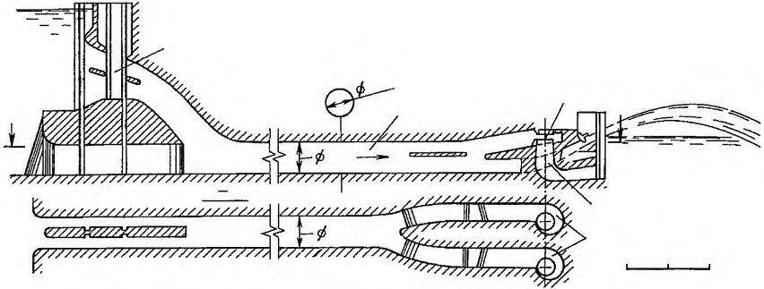
5 - конструкция, сопрягающая шахту с отводящим трактом водосброса (колено с различными конструктивными элементами, которые обеспечивают отрыв потока от выпуклой его поверхности или от потолка отводящего тракта и способствуют подводу в зону отрыва воздуха; шахтный водобойный колодец; горизонтальное закручивающее устройство);
Очертание подходного участка и конструкция водосливной воронки, которую располагают вблизи берега или в береговых выемках, должны способствовать, по возможности, равномерному распределению расхода воды по периметру водосливной воронки и предотвращению вращательного движения в шахте водосброса. В шахтных водосбросах с радиальной воронкой вращательное движение отсутствует при H/R < 0,2 и при с в/ R ≥ 1, где R - радиус окружности по гребню водосливной воронки; Н - напор над ее гребнем; с в - высота гребня над дном подходного участка.
Вблизи прямолинейного берега водохранилища для предотвращения вращательного движения в шахте ось водосливной воронки следует располагать на расстоянии до основания берегового откоса, превышающем (4…5) R . Если гребень воронки удален от берегового откоса на расстояние 3 R > а > 2 R и 2 R ≥ a ≥ R , то в качестве противоводоворотных устройств следует использовать, соответственно, прямолинейную стенку (рисунок 21 а) и криволинейную стенку (рисунок 21 б), плавно очерченную на основании уравнения
Формула из оригинального документа не распознана при конвертации. Сверьтесь с официальным изданием.
где β и α - углы, определяющие положение криволинейного контура раздельной стенки в плане. Значение α задается в диапазоне от 0° до 70°, а значение С принимается равным в пределах от 5° до 15°. Пересечение лучей из точек А и Б при различных углах α и β определяет очертание этой раздельной стенки.
Здесь в оригинальном документе — рисунок или форма, не распознанные при конвертации. Сверьтесь с официальным изданием.
а) - при расстоянии от гребня воронки до основания откоса 3 R ≥ a > 2 R ; б) - при 2R ≥ a ≥ R ; 1 - гребень воронки; 2 - основание берегового откоса; 3 - противоводоворотная прямолинейная стенка; 4 - противоводоворотная стенка криволинейного очертания
Рисунок 21 - Противоводоворотные конструкции у прямолинейного берегового откоса
При расположении водосливной воронки шахтного водосброса в береговой выемке, в которой направление подхода воды к этой воронке существенно отличается от радиального, очертание выемки в плане должно выполняться полигональным или параболическим (рисунок 22). Кроме специального очертания выемки для предотвращения вращательного движения, в шахте такого водосброса, необходимо предусматривать противоводоворотные конструкции. В выемке полигонального очертания для устранения вращательного движения достаточно устройство двух прямолинейных направляющих стен длиной l ст = (2,5…3) Н . В выемке параболического очертания при а = (1…1,5) R эффективно применение противоводоворотного устройства в виде криволинейной стенки на гребне водосливной воронки, проходящей через центр шахты (рисунок 22 б). При еще большем уменьшении размеров выемки а > 0,5 R и ее ширине l = (6…12) R можно применять четыре криволинейные направляющие стенки (рисунок 22 в). Быки на гребне кольцевой стенки (рисунок 22 г), которые являются эффективным противоводоворотным мероприятием, следует применять только в тех случаях, если они являются опорами служебного моста, применяются для размещения аэрационных труб или установки затворов.
СП .1325800.2016
1 - две прямолинейные направляющие стенки; 2 - криволинейная стенка; 3 - четыре криволинейные стенки; 4 - быки на гребне
Здесь в оригинальном документе — рисунок или форма, не распознанные при конвертации. Сверьтесь с официальным изданием.
Рисунок 22 - Противоводоворотные конструкции в выемках полигонального ( а ) и параболического очертания ( б-г )
Радиус водосливной кольцевой воронки R должен устанавливаться, исходя из расчетных значений расходов основного или поверочного случая и с учетом заданного на основе технико-экономических сопоставлений напора на гребне воронки. При 2,2 Н < R ≤ 5 Н необходимо применять кольцевые воронки, обтекаемые поверхности которых в радиальных сечениях выполнены в соответствии с очертаниями водосливов практического профиля.
Построение профиля водосливной воронки можно производить, применяя один из следующих методов: расчет траектории центральной струйки; на основании уравнения эллипса, большая ось которого а равна высоте от гребня воронки до точки слияния струек, определенной предыдущим методом расчета, а малая ось b=R - d /2, где d - диаметр воронки в месте слияния струек; по данным экспериментальных исследований нижней поверхности струи при переливе через гребень кольцевого водослива с тонкой стенкой.
Координаты профиля входной кромки до гребня водосливной кольцевой воронки должны устанавливаться на основании уравнения, связывающего их с координатами точки максимального подъема струй при переливе через водослив с тонкой стенкой при профилирующем значении напора на гребне Н пр.
СП 290.1325800.2016
В шахтах водосбросов, которые не подтоплены со стороны отводящего тракта, подтопление водосливной воронки происходит после смыкания свободной поверхности переливающихся струй. Условия смыкания следует определять расчетом профилей водосливной воронки и этих струй. В первом приближении можно считать, что подтопление воронки происходит при H/r = 0,4…0,46 ( Н - напор на гребне воронки; r - радиус в поперечном сечении, где происходит смыкание струй).
При выборе метода построения водосливной воронки шахтного водосброса следует учитывать возможность возникновения на ее поверхности существенного вакуума и необходимость предотвращения кавитационных явлений. При Н = Н пр давление на поверхности водосливных воронок, построенных по методам 7.13, близко к атмосферному. Максимальное значение вакуумов на поверхности воронки фиксировалось при расходе, составляющем 0,75…0,85 от сбросного расчетного расхода при Н = Н пр. Значение вакуума зависит от выбранного метода построения профиля водосливной воронки.
Круговую воронку целесообразно выполнять в виде водослива с широким порогом с наклонным дном, если при заданном напоре на гребне радиус водосливной воронки оказывается R > (5…7) Н . Порогу этого водослива следует придавать очертание по радиусу, при котором на всей длине глубины будут равны критическим значениям. При этом необходимо учитывать увеличение удельного расхода на пороге водослива в радиальном направлении. Для определения отметок порога этого кругового водослива между точками А и В (рисунок 23) необходимо от отметки напорной линии на подходе к водосливной воронке вычесть 1,5 h кр. Некоторое уточнение положения участка между точками А и В может внести учет потерь напора на трение по длине, равных Δ t . Радиус Rb , определяющий положение точки В, необходимо принимать с учетом равенства H/Rb = 0,3…0,35, при этом точка В должна располагаться выше точки смыкания струй в центре шахты. Для построения очертания криволинейной поверхности ниже точки В может быть применен любой из методов, приведенных в 7.13, с учетом направления и значения средней скорости потока в кольцевом сечении, ортогональном поверхности, которая проходит через точку В.
При определении пропускной способности неподтопленного со стороны нижнего бьефа шахтного водосброса с полной кольцевой воронкой и его коэффициента расхода m необходимо учитывать поправочные коэффициенты, которые зависят от значений длины выемки у воронки и возвышения гребня воронки над отметками поверхности грунта на подходе, от полноты напора и конструкции противоводоворотных устройств.
Здесь в оригинальном документе — рисунок или форма, не распознанные при конвертации. Сверьтесь с официальным изданием.
Расчет пропускной способности водосливной воронки, на гребне которой предусмотрены быки, следует производить с учетом стеснения водосливного фронта быками и коэффициента сжатия потока на гребне.
Пропускная способность шахтного водосброса при подтоплении со стороны нижнего бьефа, если h п > 0 (рисунок 24 a), должна устанавливаться по коэффициенту расхода m , умноженному на коэффициент подтопления п. Коэффициент п должен определяться в зависимости от высоты подтопления, рассчитываемой как
Формула из оригинального документа не распознана при конвертации. Сверьтесь с официальным изданием.
где zп - перепад, равный разности между отметкой подтопляющего уровня воды в начале участка шахты, работающего в напорном режиме течения, и наивысшей отметкой выходного сечения этого участка с учетом давления в воздушном пространстве над потоком воды hv ; z 0 - разность отметок верхнего бьефа и верхней точки выходного сечения; H -напор на гребне кольцевого водослива.
Пропускная способность шахтного водосброса с затопленной водосливной воронкой (рисунок 24 б) должна рассчитываться, как и всех напорных водосбросов, по перепаду z 0 между отметками УВБ и наивысшей точкой выходного сечения участка этого водосбросного сооружения, работающего в напорном режиме течения, и с учетом hv .
СП 290.1325800.2016 а) - с подтопленной и б ) - затопленной водосливной воронкой
Здесь в оригинальном документе — рисунок или форма, не распознанные при конвертации. Сверьтесь с официальным изданием.
Рисунок 24 - Схемы гидравлических условий работы шахтных водосбросов
Сопряжение криволинейного в продольном разрезе входного участка шахтного водосброса с нижерасположенным цилиндрическим участком шахты необходимо предусматривать переходным участком, который начинается от горизонтального сечения в точке пересечения свободной поверхности водосливных струй при расчетном расходе основного случая. Профиль переходного участка устанавливается, исходя из условия, что поток в его пределах находится в условиях свободного падения при заполненном водой поперечном сечении и атмосферном давлении. Переходный участок заканчивается в сечении, где свободное падение переходит в напорное движение. Для этого на участке водосброса ниже по течению концевого сечения переходного участка должен быть обеспечен напорный режим течения.
Выходное сечение участка с напорным режимом течения может располагаться как в конце отводящего участка шахтного водосброса, так и на его тракте, например, перед или за поворотом его тракта в вертикальной плоскости (рисунок 20 б).
Этот участок должен быть рассчитан на работу в напорном режиме течения при перепаде, равном разности отметок концевого сечения переходного участка и максимальной отметки потолка выходного сечения напорного участка.
Необходимо учитывать, что шахтные водосбросы с цилиндрическими шахтами применимы, если только в них поддерживается, при всех сбросных расходах, достаточное давление, которое позволяет избежать опасности кавитационных явлений. Такое давление может быть обеспечено при: заглублении выходного сечения напорного участка под уровень нижнего бьефа; установке регулирующего затвора на выходе из напорного участка водосброса; устройстве выходного сечения напорного участка водосброса на более высоких отметках, чем концевое сечение поворота в вертикальной плоскости; выполнении на входе в вертикальную шахту расширения с отрывом потока от стен шахты и подводом в зону отрыва воздуха с обеспечением в падающем потоке давления, близкого к атмосферному.
При несимметричном подводе воды к водосливной воронке режим течения в шахте имеет сложный характер, и давления в ней не могут прогнозироваться на основе одномерной схематизации потока. Движение в шахте постоянного поперечного сечения должно быть рассмотрено на основе гидравлических исследований для обоснования конструктивных мероприятий по устранению недопустимых кавитационных явлений.
Для предотвращения недопустимых вакуумов вертикальную шахту следует выполнять конической, сходящейся вниз по течению. Для расчета шахту необходимо разбить на ряд коротких участков, для которых площадь последующих поперечных сечений устанавливается на основе уравнения Бернулли методом последовательных приближений, принимая давление на поверхности шахты равным атмосферному. Сходящиеся шахты рекомендуется применять при выполнении отводящих трактов безнапорными или короткими напорными. Такие расчеты должны выполняться с учетом потерь на вход и на повороте тракта, если отводящий тракт шахтного водосброса напорный или конструкция участка поворота выполнена так, что она фиксирует безнапорный режим течения за поворотом в вертикальной плоскости (рисунок 20 б). Ориентировочно для упрощения расчетов следует иметь в виду, что конусность сужающей шахты, определяемая тангенсом центрального угла, убывает вниз по течению и составляет в верхней части шахты 0,04…0,024, а в нижней ее части - 0,024…0,008.
В случае фиксированного безнапорного течения на отводящем тракте шахтного водосброса необходим подвод воздуха в зону, примыкающую к точке отрыва безнапорного потока. Размеры аэрационной шахты и устойчивость безнапорного режима течения должны быть в этом случае определены как в глубинном водосбросе за частично открытым затвором (8.3).
Для уменьшения при пропуске сбросных расходов диапазона изменения отметок УВБ следует применять шахтные водосбросы с водосливным оголовком типа «маргаритка», обеспечивающим увеличение длины водослива по гребню. Планы по гребню водосливных оголовков таких водосбросов приведены на рисунке 25. Расстояния между противоположными стенками лепестков водосливного оголовка, характеризуемые размерами r и R , должны обеспечивать перелив через его гребень без подтопления.
Здесь в оригинальном документе — рисунок или форма, не распознанные при конвертации. Сверьтесь с официальным изданием.
а)-в) - оголовки с тремя, четырьмя и шестью лепестками
Рисунок 25 - Планы по гребню водосливных оголовков шахтных водосбросов типа «маргаритка»
Низконапорные водосбросы с шахтой в виде башни, устраиваемые в основании плотин из грунтовых материалов, целесообразно выполнять прямоугольного поперечного сечения (рисунок 26). На их входе предусматривают прямоугольные или раструбные входные оголовки. Такие водосбросы должны пропускать сбросные расходы в режимах течения с неподтопленными входными оголовками. Для обеспечения такого режима течения должно подбираться значение ширины водосброса, которое зависит от высоты шахты z ш и максимального значения напора Н на гребне водосливной воронки. Определять пропускную способность таких водосбросов следует по значениям периметра гребня l = 2( a 0+ b 0) и коэффициента расхода входного оголовка, являющегося функцией β = b 0 /a 0.
Необходимо учитывать, что расстояние от откоса грунтовой плотины до передней кромки входного оголовка L (рисунок 26) не оказывает влияния на коэффициенты расхода входных оголовков, изображенных на рисунке 25,
Формула из оригинального документа не распознана при конвертации. Сверьтесь с официальным изданием.
β = 8.6 при L / a 0 >3,2.
При 1 < β < 8,6 значение L / a 0 может быть установлено линейной интерполяцией.
прямоугольный и раструбный
Здесь в оригинальном документе — рисунок или форма, не распознанные при конвертации. Сверьтесь с официальным изданием.
а) - продольный разрез по водосбросу; б) и в) входные оголовки этого водосброса
Рисунок 26 - Низконапорный башенный водосброс в основании грунтовой плотины
При скруглении входной кромки водосливного оголовка радиусом, равным половине толщины стены башни, коэффициент расхода входного оголовка следует увеличивать не менее, чем на 8%. При установке на входе в башню решеток необходимо учитывать их влияние на пропускную способность.
Для улучшения условий сопряжения с нижним бьефом на тракте шахтного водосброса целесообразно применять цилиндрический (шахтный) гаситель энергии (рисунок 27), применение которого способствует облегчению конструкций концевых устройств, сокращению размеров размывов русла и берегов в нижнем бьефе, уменьшению обводнения береговых склонов. Подвод потока к шахтному водобойному колодцу осуществляется с помощью поверхностного или глубинного водоприемника. Для обеспечения безкавитационного режима работы в вертикальной шахте водосброса необходимо предусмотреть отрыв потока от ее стен с помощью уступа, который должен предусматриваться при сопряжении шахты с водосливной воронкой. В эту зону отрыва необходим подвод воздуха. Для создания оптимальных условий гашения энергии в шахте с помощью кольцевого гидравлического прыжка диаметр шахтного колодца следует принимать D к ≈ 3 d стр ( d стр - диаметр струи, входящей на промежуточный уровень воды). Шахтный гаситель необходимо устраивать с приямком глубиной h пр ≈ D к, что позволяет устранить существенные гидродинамические воздействия на его дно и уменьшить значения скоростей на отводящем участке.
Устойчивый безнапорный режим потока на отводящем тракте шахтного водосброса следует обеспечивать устройством забральной стены, создающей отрыв потока от его свода. Устойчивость безнапорного режима потока должна достигаться: высотой свода отводящего тракта, создающей достаточный запас над поверхностью потока; воздуховодами по длине отводящего тракта, первый из которых располагается непосредственно за забральной стеной и способствует поступлению воздуха в зону отрыва: последующие по длине воздуховоды предназначены для выравнивания давления до атмосферного и отвода воздуха при деаэрации потока.
Здесь в оригинальном документе — рисунок или форма, не распознанные при конвертации. Сверьтесь с официальным изданием.
Рисунок 27 - Шахтный водосброс с цилиндрическим шахтным гасителем энергии потока
При напорном режиме течения на отводящем тракте шахтного водосброса с цилиндрическим гасителем необходимо предотвратить поступление на этот тракт значительных расходов воздуха. Для этого уровни воды в шахтном гасителе должны быть выше потолка входного сечения отводящего тракта даже при расходах существенно ниже расчетных.
Вихревые водосбросы (5.9) должны применяться для высоконапорных сооружений в целях: защиты обтекаемой поверхности водосбросов от кавитационных воздействий; промежуточного гашения избыточной кинетической энергии и обеспечения более благоприятных условий сопряжения потока за выходом из водосбросного сооружения с нижним бьефом; предотвращения в пределах водосбросного тракта смены безнапорного и напорного режимов течения.
В вертикальных вихревых водосбросах следует применять закручивающие устройства в виде спиральных камер или с тангенциальным подводом воды (рисунок 28). а) - схема водосброса; б) - завихритель в виде спиральной камеры; в) - завихритель с тангенциальным подводом к шахте; 1 - завихритель; 2 - шахта; 3 - пробка
Здесь в оригинальном документе — рисунок или форма, не распознанные при конвертации. Сверьтесь с официальным изданием.
Рисунок 28 - Вертикальный вихревой водосброс
При проектировании закручивающих устройств в виде спиральных камер, выполненных с вертикальными стенами (как короб), необходимо по заданному расходу рассчитывать ширину начального сечения камеры b и радиус вертикальной шахты R . По их значениям можно установить глубины в подводящем канале h и расстояние между осями вертикальной шахты и подводящего канала Δ. На основании заданной толщины быка S и скругления входного ребра δ = (0,1…0,2) R необходимо установить плановые размеры спиральной камеры е, r 1 , r 2, r 3 и r 4. В расчетах необходимо задать относительный радиус воздушной полости (жгута) в начальном сечении шахты r n/ R . При этом следует учитывать, что чем меньше r n, тем меньше диаметр шахты, но больше глубина воды в спиральной камере. Оптимальное значение r n ≈ 0,4 R .
При сопряжении спиральной камеры с шахтой с помощью конического переходного участка, его высоту следует принимать H к = (3…4) R , а начальный диаметр (3,5…4,5) R .
На начальной стадии расчетов могут быть заданы ориентировочно следующие значения определяемых размеров: h = (2,2…2,5) R , b = (2,5…3,0) R и Δ = (3,0…3,5) R .
При применении тангенциального завихрителя (рисунок 28 в) площадь поперечного сечения подводящего туннеля(прямоугольного, круглого или корытообразного) следует принимать при напорном режиме течения равной площади шахты, а при безнапорном режиме - несколько больше этой площади. Ширина подводящего туннеля, сужающегося в месте подсоединения к шахте, должна составлять (0,5…0,6) R , но площадь туннеля за счет увеличения его высоты должна оставаться постоянной. Радиус воздушного ядра должен быть равен r n= (0,3…0,4) R .
При определении гидравлических условий работы вертикальной шахты, необходимо установить, достигла ли скорость потока предельного значения, при котором прекращается вращательное движение воды. Если вращательное движение сохраняется до конца вертикальной шахты, то с помощью дефлектора, предусмотренного перед поворотом тракта водосброса, следует создать в нижней части шахты участок с напорным движением. Такое мероприятие способствует затуханию вращательного движения.
При фиксированном безнапорном режиме на отводящем тракте вихревого водосброса следует руководствоваться рекомендациями для таких участков, приведенными в 7.22.
Применение тангенциальных завихрителей позволяет подводить воду к шахте в несколько ярусов. Площадь выходных отверстий безнапорных или напорных туннелей должна быть меньше площади шахты. Конструкцию водосброса с тангенциальным подводом воды по высоте шахты удобно также совмещать с кольцевой воронкой на входе в вертикальную шахту водосброса. В этом случае площадь нижнего сечения кольцевой воронки необходимо принимать меньшей площади сечения шахты. За уступ при сопряжении кольцевой воронки с шахтой следует предусматривать подвод воздуха.
В горизонтальном вихревом водосбросе закручивающее устройство следует располагать в начале слабонаклонного отводящего участка тракта водосброса, а забор воды на участке подвода к гасителю может быть выполнен как поверхностным, так и глубинным (рисунки 29 и 30). В зависимости от длины отводящего тракта водосброса следует применять следующие конструкции вихревых водосбросов: с плавным гашением избыточной кинетической энергии по длине отводящего тракта при его длине L т > (60-80) h т (здесь h т - высота отводящего тракта). В таком случае форма поперечного сечения отводящего тракта должна быть круглой или близкой к ней (рисунок 29); с ускоренным гашением энергии на участке отводящего тракта при L т<(60-80) h т на участке некруглого поперечного сечения (корытообразного, квадратного, треугольного) или с применением камеры гашения (рисунок 30).
Здесь в оригинальном документе — рисунок или форма, не распознанные при конвертации. Сверьтесь с официальным изданием.
Рисунок 30 - Вихревые водосбросы с поверхностным ( а ) и глубинным ( б ) водозаборами, имеющими длину L т < (60…80) h т на тракте которых предусмотрена камера гашения
Гидравлические условия работы водосбросов с поверхностным или глубинным забором воды для участка до горизонтального завихрителя с вертикальной или наклонной шахтой следует определять как для обычных водосбросов, исходя из режима их работы при незатопленном истечении. При этом диаметр вертикальной или наклонной шахты следует принимать равным (0,8…1,2) D т, где D т - гидравлический диаметр отводящего тракта.
Завихрительное устройство является элементом водосброса, от которого зависит его пропускная способность и режимы течения на отводящем тракте. Пропускная способность горизонтальных вихревых водосбросов определяется по обычным формулам для напорных систем, в которых необходимо учитывать коэффициент гидравлического сопротивления закручивающего устройства. Коэффициент гидравлического сопротивления должен устанавливаться в зависимости от формы его вставки, которая может быть выполнена цилиндрической (рисунок 29) или плоской (рисунок 30), и геометрического параметра завихрителя А =(π R ц D т)sinα/2 n, где R ц - расстояние между осями подводящего и отво- дящего туннелей завихрителя; D т -гидравлический диаметр отводящего туннеля; n - площадь подводящего к завихрителю туннеля; α - угол наклона оси подводящего туннеля к оси завихрителя.
Площадь поперечного сечения отводящего тракта вихревых водосбросов должна устанавливаться, исходя из конструкции водосбросов и способа гашения избыточной кинетической энергии. При этом необходимо, прежде всего, учитывать необходимую площадь поперечного сечения строительного туннеля, если его тракт применяется для вихревого водосброса. Проверку необходимой площади поперечного сечения отводящего тракта вихревого водосброса следует выполнять по допустимой скорости, которая определяется по кавитационным условиям работы обтекаемых поверхностей и по условиям сопряжения потоков в нижнем бьефе
При выборе размещения и размеров камеры гашения горизонтального вихревого водосброса необходимо учитывать следующее: при длине отводящего туннеля L т ≤ 60 h т в качестве сопрягающего элемента между тангенциальным завихрителем и камерой гашения рационально предусматривать конфузорный или цилиндрический участок, который обеспечивает смещение максимума продольной компоненты скорости в центральную зону площади поперечного сечения; коэффициент расширения по площади на входе в камеру гашения может быть принят равным от 1,4 до 3,4. С увеличением степени расширения гашение происходит на меньшей длине, и камерой гашения формируется безнапорный осевой поток. В более короткой камере гашения происходит увеличение уровня пульсации давления; при длине отводящего участка L т> 60 h т значительная часть энергии потока должна гаситься за счет потерь на трение по длине, обусловленных его закруткой, а остаточная часть энергии, в случае необходимости, может быть погашена в камере, предусмотренной в конце отводящего туннеля.
В проектах горизонтальных вихревых водосбросов необходимо стремиться уменьшить расход воздуха на их отводящем тракте, что способствует более эффективному гашению избыточной энергии и снижению уровня пульсации давления. Такие пульсации возникают на участках, где вращательное движение потока уже затухло, а в прямолинейном потоке у свода перемещаются воздушные полости.
Для оценки возможности возникновения кавитации на неровностях поверхности водосбросов, обтекаемой вихревым потоком, в первом приближении с запасом могут быть применены критические значения чисел кавитации, полученные для прямолинейного потока.
Трубчатый водосброс, действующий по принципу сифона (сифонный водосброс), следует устраивать при необходимости автоматического включения водосброса и сброса воды в нижний бьеф, когда происходит повышение уровня верхнего бьефа сверх заданного расчетного уровня (как правило, НПУ), и увеличения сбросного расхода по сравнению с водосливом без затвора.
Сифонный водосброс представляет собой изогнутую в вертикальной плоскости трубу переменного прямоугольного или круглого сечения, проложенную в теле бетонной или земляной плотины (рисунок 31). Пропускную способность сифонного водосброса при работе его в режиме перелива через гребень следует определять как для поверхностных водосливов. При зарядке сифона и работе его полным сечением пропускная способность должна определяться как для напорных глубинных водосбросов (8.8)
Гребень сифонного водосброса должен иметь отметку, совпадающую с расчетным уровнем верхнего бьефа.
Входную часть водосброса следует выполнять в виде конфузора с сечением на входе, превышающем в 2,5-3 раза площадь «горлового» сечения трубы над гребнем. Заглубление капора входного сечения δ под расчетный уровень верхнего бьефа (рисунок 32) должно назначаться из условия недопущения воронкообразования и засасывания воздуха внутрь сифона и местного понижения свободной поверхности при работе водосброса:
Формула из оригинального документа не распознана при конвертации. Сверьтесь с официальным изданием.
где V вх - средняя скорость во входном сечении сифона, α ≈ 1.1. Увеличивать площадь входного сечения следует, по возможности, за счет его высоты, оставляя ширину водовода постоянной.
СП .1325800.2016
Здесь в оригинальном документе — рисунок или форма, не распознанные при конвертации. Сверьтесь с официальным изданием.
1 - входное отверстие; 2 - гребень; 3 - капор; 4 - воздухоподводящее отверстие Рисунок 31 - Типы сифонных водосбросов в теле бетонных плотин ( а ) и в теле грунтовой плотины ( б )
Здесь в оригинальном документе — рисунок или форма, не распознанные при конвертации. Сверьтесь с официальным изданием.
а) - прямолинейный входной участок; б) - криволинейный входной участок
Рисунок 32 - Оформление входного участка сифонного водосброса
Ширину трубы сифонного водосброса следует задавать в пределах (1,5…2,5) а , где а - высота трубы в горловом сечении.
Включение сифона - переход его в напорный режим течения - обеспечивается созданием в нем вакуума за счет выноса воздуха потоком воды, поступающей в водовод. Сифон должен начинать устойчиво работать полным сечением, когда уровень воды в верхнем бьефе превышает отметку гребня сифона на 0,2-0,3 м. При этом, в него перестает поступать воздух через специальное отверстие 4 (рисунок 31). Для ускорения процесса зарядки сифона струя, поступающая в водовод и стекающая по водосливной поверхности в начале его работы, с помощью специального выступа отклоняется к потолку и перекрывает поперечное сечение (рисунок 31 а ), создавая водяную пробку. Воздух из образующегося замкнутого пространства выносится потоком, и сифон заряжается. Вакуум в горловом сечении сифонного водосброса не должен превышать 8 м. При большем значении вакуума возможен разрыв сплошности струи. Значение вакуума в горловом сечении следует определять из уравнения Бернулли, составленного для этого сечения и сечения на выходе водовода при свободном истечении в нижний бьеф или сечения на уровне нижнего бьефа при истечении под уровень.
Во избежание сработки верхнего бьефа до кромки входного сечения сифона воздухоподводящее отверстие 4 должно располагаться на уровне гребня 2. При понижении уровня верхнего бьефа до уровня отверстия через него начинает поступать воздух и сифон разряжается.
При устройстве нескольких сифонов их гребни целесообразно располагать на разных отметках выше расчетного уровня (обычно НПУ), что позволяет включать их в работу последовательно, по мере нарастания притока воды в водохранилище.
Сифоны могут выполняться как самостоятельные водосбросы и как головные части комбинированных водосбросов. В случае необходимости сброса больших расходов воды при ограниченных условиях форсирования уровня верхнего бьефа следует рассмотреть возможность применения башенного оголовка с несколькими сифонными секциями (рисунок 33). Применение такого оголовка допускает возможность сброса мусора через водосброс.
Сифонные водосбросы целесообразно устраивать при быстро наступающих паводках и сравнительно небольшой аккумулирующей емкости водохранилища.
Достоинства сифонных водосбросов:
автоматическое включение в работу при небольшом повышении уровня верхнего бьефа;
пропуск расходов при малых высотах форсировки (0,1…1 м) уровня верхнего бьефа;
возможность сооружения водосброса после введения в эксплуатацию других водопропускных сооружений гидроузла, а также при реконструкции в целях увеличения пропускной способности поверхностного водосброса.
Здесь в оригинальном документе — рисунок или форма, не распознанные при конвертации. Сверьтесь с официальным изданием.
Рисунок 33 - Башенный сифонный водосброс
Недостатки сифонных водосбросов:
сложность эксплуатации при необходимости сброса в нижний бьеф льда и плавающих тел;
возможность забивки водосброса льдом, шугой и сором;
вибрация сооружения и кавитационные повреждения бетонных поверхностей водовода при значительных вакуумах. Во избежание неблагоприятных режимов, вызывающих вибрацию элементов водосброса, нисходящая ветвь водосброса должна быть оборудована аэрационными воздуховодами.
8Глубинные водосбросы
Глубинные водосбросы c безнапорным режимом течения
Безнапорный режим течения в глубинных водосбросах, устойчивый во всем диапазоне изменения уровней верхнего бьефа (УВБ), следует обеспечивать конструктивными мероприятиями:
устройством забральной стены на входном участке водосброса; увеличением высоты водосброса за концевым створом начального напорного участка; устройством дефлектора на потолке водосброса в конце напорного участка; понижением отметок потолка в конце напорного участка (устройство конфузора).
Пропускная способность глубинных водосбросов с забральной стеной на входе при H ≥ kh , где H - напор на входном пороге, h - высота входного отверстия водосброса, k = 1,1…1,25, должна рассчитываться, исходя из гидравлической схемы истечения через отверстие. Значение k определяется условиями входа в глубинный водосброс (скруглени-
СП 290.1325800.2016 ем кромок входного отверстия). При работе глубинного водосброса с забральной стеной в широком диапазоне отметок УВБ, когда при H < (1,1…1,25) h , его пропускную способность следует определять, исходя из гидравлической схемы истечения через водослив. В зависимости от продольного профиля дна входного участка и его длины он может рассматриваться как водослив практического профиля или водослив с широким порогом.
При работе входного участка водосброса этого типа на всей длине полным сечением его пропускная способность, как и другие гидравлические параметры потока на этом участке, рассчитываются как для напорного глубинного водосброса.
На начальный участок глубинного водосброса непосредственно за створом отрыва безнапорного потока от обтекаемого элемента (забральной стены, потолка напорного участка, дефлектора, регулирующего затвора) необходим подвод воздуха, обеспечивающий устойчивость безнапорного режима течения. Размеры воздухоподводящих устройств, необходимых для компенсации воздуха, транспортируемого в сторону нижнего бьефа, и обеспечения устойчивости безнапорного режима водного потока в водосбросе должны быть установлены расчетом или экспериментальными исследованиями на модели. Скорости воздуха на тракте воздухоподводящих устройств не должны превышать 60 м/с при пропуске через водосброс расходов воды основного расчетного случая и 100 м/с - при пропуске расходов поверочного расчетного случая.
На тракте безнапорных глубинных водосбросов, пропускающих расходы воды при скоростях течения более 25-30 м/с, для предотвращения кавитационных явлений прежде всего там, где развитие пограничного слоя потока недостаточно, следует предусматривать устройства для подвода воздуха в слои потока у обтекаемых поверхностей. Ограниченный объем кавитационной эрозии обтекаемых поверхностей безнапорных глубинных водосбросов допускается при специальном обосновании с учетом прогнозной продолжительности сброса через сооружение различных расходов воды и наработки кавитационного ресурса обтекаемой поверхности при расчетном коэффициенте шероховатости и допускаемых размерах местных технологических неровностей.
При определении размеров устройств для подачи воздуха на тракт безнапорных глубинных водосбросов, кроме расхода воздуха, транспортируемого над водным потоком в сторону нижнего бьефа, необходимо учитывать расходы воздуха: вовлекаемого в толщу водного потока за счет самоаэрации, подводимого за дефлекторы и различные уступы в затворной камере для устранения опасности кавитационных явлений, подводимого к устройствам для аэрации высокоскоростного потока у обтекаемых поверхностей.
При проектировании глубинных водосбросов, безнапорный режим течения в которых фиксируется на начальном участке и которые подтоплены со стороны нижнего бьефа с образованием на их тракте гидравлического прыжка, необходимо учитывать пульсационное гидродинамическое воздействие на обтекаемые поверхности сооружения. При учете увеличения осредненных и пульсационных давлений на элементы туннельных водосбросов этого типа и на вмещающий их породный массив допускается заполнение всего поперечного сечения водосброса за гидравлическим прыжком при расходах воды меньше расчетных. Воздействие в этих условиях гидравлического прыжка на затворы недопустимо. Расчеты положения гидравлического прыжка такого вида на тракте глубинного водосброса необходимо производить с учетом захватываемого в водосбросе воздуха.
На участках глубинных водосбросов с фиксированным безнапорным режимом течения, тракт которых изогнут в вертикальной плоскости выпуклостью вверх, для предотвращения недопустимого понижения давления профиль дна должен выполняться более полным, чем кривая свободного падения потока. Расчет профиля этой кривой следует производить от сечения в начале изогнутого участка по средней скорости течения при расчетном расходе основного случая. Если проектом предусмотрена работа водосброса в течение длительного времени при частичных открытиях затворов, установленных выше по течению изогнутого выпуклостью вверх участка, то требуется проверка его профиля, исходя из работы в этих условиях с учетом возникновения зон с вакуумами.
Для глубинных водосбросов с фиксированным безнапорным режимом течения, тракт которых изогнут в вертикальной плоскости с выпуклостью вверх, при значительных напорах над выходным сечением (до 100 м) и, соответственно, высоких скоростях потока целесообразно рассматривать варианты конструкции с безнапорным режимом течения по потолку (рисунок 34). Перемещение потока по потолку в водосбросе такой конструкции происходит за счет действия центробежных сил. В пространстве между потоком воды и дном водосброса наблюдается зона, заполненная воздушно-водной смесью и воздухом. Давления в этой зоне близки к атмосферному. Необходимо учитывать, что на потолке водосброса развиваются значительные избыточные давления. В конце короткого напорного участка перед пазами основного затвора следует предусматривать дефлекторы, а на дне уступ. Подвод за них воздуха должен предотвратить опасность кавитации в этой зоне как при полном, так при частичных открытиях основного затвора. Отработка конструкции такого водосброса должна производиться на основе экспериментальных исследований.
Здесь в оригинальном документе — рисунок или форма, не распознанные при конвертации. Сверьтесь с официальным изданием.
1 - зона отрыва потока за дефлекторами, установленными перед пазом основного плоского затвора; 2 - основной сбросной поток воды по вогнутому потолку; 3 - зона, заполненная воздушно-водной смесью или воздухом
Рисунок 34 - Продольный разрез ( а ) и план ( б ) по глубинному водосбросу, конструкция которого обеспечивает безнапорный режим течения при движении воды по потолку
Пропускная способность (расход) Q глубинных водосбросов рассматриваемого типа следует рассчитывать по формуле
Формула из оригинального документа не распознана при конвертации. Сверьтесь с официальным изданием.
где -площадь расчетного поперечного сечения водосброса, в качестве которой удобно принимать площадь выходного поперечного сечения; - коэффициент расхода водосброса, отнесенный к расчетной площади поперечного сечения ; g - ускорение свободного падения ; Н д - действующий напор водосброса, равный полной удельной энергии потока, определенный относительно плоскости сравнения, проведенной через низшую точку выходного сечения; П - средняя удельная потенциальная энергия потока в выходном сечении водосброса, определенная относительно указанной плоскости сравнения.
При определении коэффициента расхода напорного водосброса необходимо учитывать коэффициенты потерь напора на трение по длине [5] и местных потерь напора. К местным потерям напора в глубинных напорных водосбросах следует относить следующие: на вход, в пазах затво- ров, на поворотах тракта, в конфузорах и диффузорах, при обтекании промежуточных быков и другие сопротивления. Кроме того, должны учитываться коэффициенты потерь напора на выход из водосброса в случае подтопления выходного сечения со стороны нижнего бьефа, коэффициенты потерь напора частично открытых затворов и дефлекторов.
Значение Н д-П для глубинных водосбросов, работающих всем сечением, при H д > (3…4) h вых ( h вых - высота выходного сечения водосброса), может быть определено как разность отметок УВБ и наивысшей точки потолка выходного сечения. Если же H д < (3…4) h вых, то необходимо рассчитывать значения средней удельной потенциальной энергии потока П для выходного сечения водосброса с учетом отличия распределения давления по глубине потока от гидростатического и изменения подтопления выходного сечения в пространственных условиях сопряжения потоков за его выходным сечением. Отличие распределения давления от гидростатического в выходном сечении напорного водосброса при его сопряжении с участком нижнего бьефа уступом должно учитываться при: свободном и несвободном неподтопленном истечении; наличии непосредственно за выходным сечением одной из форм поверхностного или поверхностно-донного гидравлического прыжка.
Осредненные давления по длине напорных глубинных водосбросов следует определять на основе построения пьезометрических линий. По полученным осредненным давлениям должны быть рассчитаны осредненные нагрузки на элементы тракта водосбросов, выявлены зоны существенных вакуумов и разработаны мероприятия по предотвращению в этих зонах недопустимых кавитационных воздействий. При этом необходимо учитывать особенности распределения давлений на участках местных потерь напора (сопротивлений) и их отличия от давлений, соответствующих равномерному движению и гидростатическому закону распределения. К таким участкам на тракте глубинных водосбросов относятся входные оголовки, повороты тракта, затворные камеры при полных и частичных открытиях затворов. Необходимо учитывать возможность появления на участках местных сопротивлений зон с повышенным уровнем пульсации давления, который может быть особенно существенным при возникновении в них отрывного обтекания.
При выборе очертания входного оголовка следует отдавать предпочтение такой его форме, при которой он имеет наименьшее значение коэффициента сопротивления и которая обеспечивает наименьшие размеры расположенных на этом участке затворов и наиболее простые очертания в продольном профиле и в плане. Наиболее целесообразными являются профили входных оголовков, очерченные дугами окружностей и эллипсов.
Понижение давления в пределах входного оголовка должно быть таким, чтобы не допустить кавитации его поверхности и расположенных в его пределах пазов затворов.
Общее понижение осредненного давления в пределах входного оголовка по сравнению с заглублением любой точки его поверхности под УНБ следует определять с помощью экспериментально установленного коэффициента понижения давления p C , зависящего от очертания потолка и боковых стен оголовка, а также от условий подхода к входному сечению водосброса (ширины на подходе, положения входного сечения относительно дна) и УВБ. Возможность возникновения кавитации прогнозируется на основании коэффициента мгновенного значения понижения давления во входном оголовке
Формула из оригинального документа не распознана при конвертации. Сверьтесь с официальным изданием.
где р и kp должны устанавливаться по рекомендациям 4.12 и 4.14.
При прогнозе кавитации на поверхности входного оголовка,,кроме общего понижения мгновенного давления на обтекаемой поверхности, необходимо учитывать локальное его снижение, вызванное технологическими неровностями, возникшими в процессе производства строительных работ.
При проведении расчетов участков поворота тракта напорных глубинных водосбросов необходимо учитывать, что кроме осредненной составляющей давления, которая устанавливается по пьезометрической линии, возникает дополнительно составляющая осредненного давления, вызванная действием центробежных сил. Для таких участков напорных глубинных водосбросов мгновенное значение давления pp на поверхности поворота следует определять по формуле
Формула из оригинального документа не распознана при конвертации. Сверьтесь с официальным изданием.
где p - значение осредненной составляющей абсолютного давления по оси водосброса, полученное по пьезометрической линии; р ц -центробежная составляющая осредненного давления, которая на поверхностях в плоскости поворота зависит от h / R ; h - высота или ширина водосброса в плоскости поворота; R - радиус оси поворота.
Кавитация на выпуклой поверхности поворота должна прогнозироваться по минимальному значению мгновенного давления р , при определении которого второй и третий члены формулы (11) должны приниматься со знаком «минус». При расчете нагрузки на поверхность вогнутого участка поворота второй и третий члены формулы (11) должны приниматься со знаком «плюс». При вычислении нагрузки на поверхность выпуклого участка знак третьего члена должен быть принят тем же, что и знак разности ( ) ц p p -. При определении нагрузки на поверхности поворота значение р должно приниматься с учетом осреднения пульсации давления по площади; при прогнозе кавитации необходимо учитывать локальное снижение давления на технологических неровностях поверхности.
Для повышения устойчивости напорного режима течения и устранения опасности кавитационных воздействий на тракте глубинного водосброса с основным затвором в выходном сечении следует применять конструктивные мероприятия, направленные на уменьшение вакуума на участках местных сопротивлений. К этим мероприятиям относятся:
устройство развитого входного оголовка, что снижает опасность кавитации на его поверхностях и расположенных в его пределах пазов затворов, а также снижает возможность поступления на тракт воздуха со стороны верхнего бьефа, если водосброс предназначен для пропуска расходов при относительно невысоких УВБ, т.е. при H < (1,5…2) h 0, где h 0 - высота в конце входного оголовка водосброса;
увеличение высоты в концевом сечении входного оголовка h 0 по сравнению с высотой выходного сечения водосброса h вых, при этом высота водосброса может уменьшаться плавно по всей длине или лишь на его концевом участке длиной (1,5…2) h вых;
увеличение размера сечения напорного водосброса в плоскости поворота или его радиуса.
Туннельные и трубчатые водосбросы, на тракте которых допускаются смена безнапорного и напорного режимов течения
Смену безнапорного и напорного режимов течения следует допускать в длинных нерегулируемых закрытых водопропускных сооружениях, для которых соотношение L/R в (100÷200) и комплекс для безнапорного потока в точке касания потолка сооружения 2 в в g 5 V R , а также в коротких трубчатых водосбросах с регулирующим затвором на входном участке. При L/R в ≤ (20÷30) и полном открытии затворов такие водосбросы работают в напорном режиме, где L - длина водосброса, R в и V в - гидравлический радиус и средняя скорость потока воды.
В длинных нерегулируемых водопропускных сооружениях указанного в 8.14 типа (в основном это - строительные туннели) при образовании на тракте кривой подпора начало смены режимов течения надлежит устанавливать на основе построения кривой свободной поверхности. Предельным расходом безнапорного потока на тракте сооружения является расход, при котором кривая свободной поверхности касается потолка. Необходимо учитывать, что при подаче воздуха непосредственно за входной оголовок такого сооружения смена режимов течения с переходом в напорный режим происходит плавно в широком диапазоне расходов. При отсутствии подвода воздуха режим течения становится напорным в узком диапазоне расходов. В проектных разработках следует учитывать, что такая смена режимов течения может сопровождаться существенным повышением УВБ при малом росте сбросного расхода.
Следует учитывать, что при образовании в безнапорном водосбросе с затопленным входом кривой спада смена режимов течения может произойти с возникновением устойчивого частично напорного режима течения (рисунок 1б). Возникновение во входном оголовке такого водосброса вакуума приводит к прорывам воздуха на тракт и периодической смене режимов течения (рисунок 1в). Такие режимы течения следует допускать на основе оценок пульсации давления и нагрузок на элементы тракта водосброса либо с учетом условий работы аналогичных сооружений.
При проектировании коротких изогнутых в вертикальной плоскости водосбросов необходимо учитывать, что при неполных открытиях затворов, расположенных на входе, возникают сложные гидравлические режимы с образованием отрывных течений, гидравлических прыжков, замкнутых воздушных полостей. Частично напорные режимы течения в таких водосбросах следует допускать лишь на основе экспериментального обоснования. В экспериментах должны быть получены размеры устройств для подвода воздуха за затвор, а также гидродинамические давления и нагрузки на элементы водосброса, необходимые для оценки возможности кавитационных явлений и для расчетов прочности и динамических воздействий на плотину и примыкающие сооружения или породный массив
Напорные камеры гашения. Глубинные водосбросы с гашением избыточной кинетической энергии в пределах водосбросного тракта
При необходимости уменьшить размеры устройств для гашения энергии в нижнем бьефе трубчатых и туннельных водосбросов, рассчитанных на значительные напоры, а также в некоторых случаях для снижения кавитационных воздействий на элементы тракта водосбросов следует применять напорные камеры гашения, в которых потери энергии происходят за счет расширения потока. Такие камеры гашения применяют на тракте напорных глубинных водовыпусков и располагают чаще всего на концевом участке их тракта, а также применяют для их устройства тракты строительных туннелей.
Для расширения напорного потока на тракте строительного туннеля необходимо предусматривать бетонные пробки или металлические диафрагмы с отверстиями, в которых могут устанавливаться регулирующие плоские затворы и которые образуют камеру гашения. При проектировании камеры гашения избыточной кинетической энергии такой конструкции (рисунок 35) следует иметь ввиду:
СП .1325800.2016
1 - напорный участок; 2 - первая бетонная пробка; 3 - переходный диффузор; 4 - камера гашения; 5 - вторая бетонная пробка; 6 - безнапорный отводящий участок. В одной или в обеих пробках предусматриваются плоские затворы
Здесь в оригинальном документе — рисунок или форма, не распознанные при конвертации. Сверьтесь с официальным изданием.
пропускная способность водовыпусков с камерой гашения может быть рассчитана как для обычных напорных систем с учетом местных потерь напора при расширении потока и потерь напора на выходе из камеры;
для эффективного гашения энергии длина камеры гашения L должна составлять около 5 значений ее гидравлического диаметра D г; на этой длине происходит выравнивание эпюры осредненных скоростей течения, затухание избыточных пульсационных давлений и восстановление пьезометрического напора в камере;
опасность возникновения кавитации должна рассматриваться как непосредственно в камере гашения, так и за затворами в пробках. Для уменьшения опасности кавитации расширение камеры гашения рекомендуется устраивать без переходного диффузора.
При устройстве камеры гашения избыточной кинетической энергии за игольчатыми затворами длину камеры гашения L следует принимать в зависимости от их конструктивных особенностей:
для игольчатых затворов, закрывающих вход в камеру по течению, L ≥ 5 D 1 (рисунок 36а);
Здесь в оригинальном документе — рисунок или форма, не распознанные при конвертации. Сверьтесь с официальным изданием.
а) - закрывающимся по течению; б) - закрывающимся против течения; 1 и 2 - неподвижная и подвижная части затвора; 3 - камера гашения
Рисунок 36 - Схемы камеры гашения с установленными перед ней игольчатыми затворами
для игольчатых затворов, закрывающих вход в камеру против течения, L = (3…4) D 1 (рисунок 36 б).
При полном открытии игольчатых затворов степень затенения, характеризуемая отношением d 0/ D 0, должна быть более 0,5. При меньших значениях d 0/ D 0 существенно увеличивается коэффициент сопротивления системы «игольчатый затвор - камера гашения».
Наименьшее значение диаметра камеры гашения за игольчатыми затворами следует устанавливать, исходя из рациональных условий гашения энергии и с учетом предотвращения недопустимых кавитационных воздействий.
При проектировании камер гашения за конусными затворами поток, обтекающий поверхности конструкции камеры, необходимо разделить на части. Последующий поворот этих частей потока навстречу друг другу с помощью обтекаемых отклоняющих порогов должен при их соударении обеспечивать интенсивное гашение энергии (рисунок 37). Устройство водоотбойной стенки в камере гашения должно способствовать поступлению потока в сторону отводящего русла. Для защиты самого конусного затвора и его служебных помещений от поступающей в их сторону меньшей части расхода воды необходимо предусматривать струезащитный козырек. В такую камеру следует подводить значительное количество воздуха для компенсации его выноса полой конической струей в нижний бьеф сооружения.
СП .1325800.2016
1 - струезащитный козырек; 2 и 3 - горизонтальные и вертикальные отклоняющие пороги; 4 водоотбойная стенка
Здесь в оригинальном документе — рисунок или форма, не распознанные при конвертации. Сверьтесь с официальным изданием.
Рисунок 37 - Схема конструкции камер гашения энергии потока с отклоняющими порогами, расположенными за конусными затворами
Сложная внутренняя поверхность камер гашения конусных затворов предопределяет необходимость проведения специального гидравлического обоснования с определением распределения по их поверхности осредненных и пульсационных составляющих давления и с прогнозом кавитационных явлений. Необходимо учитывать, что наиболее кавитационно опасными участками внутренней поверхности таких камер являются: зона за местом контакта струй, вытекающих из затвора, со стенами камеры; зоны перед отклоняющими порогами и на верхней грани порогов. Для устранения опасности кавитацонных явлений необходимо применение более обтекаемых конструкций элементов камер и подача воздуха в пристенные слои потока на кавитационноопасных участках их поверхности.
9Специальные типы концевых устройств водосбросов
9. 1 Уменьшения гидродинамического воздействия высокоскоростного сбросного потока на крепление и дно нижнего бьефа следует достигать применением специальных типов концевых устройств - трамплинов.
Основные способы управления гидродинамическими характеристиками сбрасываемого в нижний бьеф потока: разделение потока на отдельные струи и распределение его по площади, длине и/или ширине нижнего бьефа, которые интенсифицируют насыщение их воздухом, уменьшают расход, падающий на единицу площади нижнего бьефа, обеспечивают гашение избыточной кинетической энергии за счет взаимодействия струй в толще воды на креплении или в воронке размыва; в некоторых случаях гашению кинетической энергии за такого рода водосбросами способствует отсоединение и присоединение расходов по длине потока; придание отбрасываемому трамплином потоку траектории и формы, оптимально вписывающихся в очертания дна и берегов русла в нижнем бьефе с учетом их геологического строения.
При нормальной к направлению потока плоскости схода с трамплина расщепления сбросного потока на струи следует достигать применением различных типов носков, дно которых вблизи схода выполняется в виде зубьев различного очертания (рисунок 38):
трамплины с зубчатым носком ( а ) позволяют расщепить поток в вертикальной плоскости;
носки с направленным отбросом нескольких (обычно трех) струй дают возможность: концентрировать поток в центральной или боковых частях трамплина в тех случаях, когда это необходимо для создания благоприятных условий сопряжения бьефов и уменьшения размывов ( б ); разделения сбросного потока на струи с разными траекториями ( в );
носки с трапецеидальными расщепителями ( г ) позволяют расширить сбрасываемый поток в плане и в вертикальной плоскости. а) - зубчатый носок; б), в) носки с направленным отбросом; г) - носок с трапецеидальными расщепителями
Здесь в оригинальном документе — рисунок или форма, не распознанные при конвертации. Сверьтесь с официальным изданием.
Для уменьшения объема работ по креплению нижнего бьефа следует применять конструкции типа «консольный сброс» и «решетчатый трамплин» (рисунки 39 и 40). На сходе с консольного сброса целесообразно применение расщепителей в виде зубьев. Обе эти конструкции трамплинов можно выполнять без креплений в нижнем бьефе с гашени-
СП .1325800.2016 ем энергии в воронке размыва. Применение их ограничивается размерами воронки размыва, особенно в мелкозернистых несвязных грунтах. Гашение энергии за решетчатым трамплином может осуществляться и в пределах бетонного крепления. Гаситель этого типа должен обеспечивать гашение кинетической энергии потока не только в вальце, образующемся в воронке размыва или на креплении, но и за счет отсоединения и присоединения струй по длине конструкции.
Рисунок 39 - Схема консольного сброса с концевой частью лотка в виде сплошной плиты с расщепителями, расположенной на опорах
Здесь в оригинальном документе — рисунок или форма, не распознанные при конвертации. Сверьтесь с официальным изданием.
Рисунок 40 - Консольный сброс с концевой частью лотка, выполненной в виде решетки
Здесь в оригинальном документе — рисунок или форма, не распознанные при конвертации. Сверьтесь с официальным изданием.
Необходимо учитывать, что конструкции носков-трамплинов с расщепителями, приведенные на рисунках 38 - 40, применимы по условиям возникновения кавитации при скоростях течения менее 12-14 м/с. Значение этой скорости зависит от отметок сооружения над уровнем моря. При скоростях течения более 12-14 м/с обтекаемым элементам таких трамплинов следует придавать безэрозионное (суперкавитирующее) очертание или к ним должен специально подводиться воздух. При проектировании мероприятий по предотвращению кавитации следует основываться на аналогах или данных экспериментальных исследований.
Для улучшения условий сопряжения бьефов и уменьшения размывов русла за средне- и высоконапорными водосбросами следует применять носки-трамплины, которые распределяют сбросной поток по площади, длине или ширине нижнего бьефа без применения плохообтекаемых элементов: носки-трамплины водосливных плотин, имеющие в чередующихся пролетах различные углы схода струй, обеспечивающие различную дальность отброса; трамплины с боковым сливом; трамплины с фигурным вырезом; рассеивающие трамплины и виражи.
Применение водосливных плотин с носками-трамплинами (рисунок 41) обеспечивает существенное уменьшение размывов по сравнению с конструкцией, в которой во всех пролетах углы на сходе с носков-трамплинов одинаковы. Подбирать оптимальные значения углов на сходе в пролетах таких водосливных плотин и размещать эти пролеты по фронту необходимо на основе экспериментальных исследований размывов нижнего бьефа. а) - разрез по плотине и б) вид со стороны нижнего бьефа; 1 и 2 - носки-трамплины с меньшими и большими углами на сходе, обеспечивающими различную дальность отброса потока
Здесь в оригинальном документе — рисунок или форма, не распознанные при конвертации. Сверьтесь с официальным изданием.
Рисунок 41 - Водосливная плотина с пролетами, имеющими различные углы схода с носков-трамплинов
Трамплины с боковым сливом (рисунок 42) следует применять при необходимости рассредоточения сбросного потока на возможно большей длине участка нижнего бьефа. Такие концевые устройства наиболее эффективны в условиях узких речных каньонов, характеризующихся отношением длины подпорного сооружения к его высоте меньше 3,5 при угле наклона линии берегового склона к горизонту не менее 40 0 .
Трамплин с боковым сливом следует трассировать по береговому склону. Он представляет собой лотковую конструкцию (полку), одна из боковых стен которой полностью или частично отсутствует. Вода может стекать с полки по береговому склону и отбрасываться в русло. Часть воды может сбрасываться через торец сливной плоскости. Простейшие конструкции трамплинов с боковым сливом могут быть выполнены: с постоянной или сужающейся по течению сливной плоскостью; со сливным порогом, способствующим отбросу струи от берегового склона; с открытым или закрытым торцом сливной плоскости.
Конструктивное оформление трамплина с боковым сливом должно определяться конкретными условиями, что требует, как правило, лабораторного проектирования.
1 - сливная плоскость (полка); 2 - отражатель, работающий при сбросе малых расходов; 3 - отражатель в торцевой части трамплина; 4 - сливной порог; 5 - подводящая к трамплину часть быстротока; 1 и 2 - углы поворота трассы
Здесь в оригинальном документе — рисунок или форма, не распознанные при конвертации. Сверьтесь с официальным изданием.
Рисунок 42 - Концевая часть трамплина с боковым сливом
При сбросе в нижний бьеф ограниченной ширины и необходимости обеспечить вытягивание и сжатие потоков в плане следует применять сужающие концевые конструкции с фигурным вырезом (рисунок 43). Очертание этого выреза должно быть обосновано экспериментальными исследованиями.
Рисунок 43 -Трамплин с фигурным вырезом
Здесь в оригинальном документе — рисунок или форма, не распознанные при конвертации. Сверьтесь с официальным изданием.
Отброс потока с расширением в плане с удельными расходами на входе в нижний бьеф, близкими к постоянным, следует осуществлять трамплинами с криволинейным дном, в том числе двоякой кривизны. Такие рассеивающие трамплины выполняют симметричными и с некоторой асимметрией (рисунок 44 а, б). а) - симметричный рассеивающий трамплин; б) несимметричный рассеивающий трамплин; в) - отклоняющий трамплин-вираж с косым срезом
Здесь в оригинальном документе — рисунок или форма, не распознанные при конвертации. Сверьтесь с официальным изданием.
Рисунок 44 - Рассеивающие и отклоняющие трамплины с дном двоякой кривизны
Некоторое расширение отбрасываемого потока в нижнем бьефе можно получить с помощью трамплинов с цилиндрическим и плоским дном, имеющим на сходе обратный
СП .1325800.2016 уклон, но в этом случае удельные расходы на входе потока под уровень нижнего бьефа обладают существенной неравномерностью.
Отброс потока в сторону от направления течения на тракте водосброса (быстротока, пролета водосливной плотины) должен осуществляться трамплинами-виражами с криволинейным дном (в том числе двоякой кривизны) и/или с косым срезом (рисунок 44 в ).
Конструкции рассеивающих трамплинов и трамплинов-виражей водосбросов следует рассчитывать с применением численных методов гидравлики двух- и трехмерного потока; эффективность их работы необходимо проверять на основе экспериментальных исследований размывов русла в нижнем бьефе.
В случае необходимости защиты от неуправляемого развития размыва дна в месте падения сбросного потока следует до введения водосброса в эксплуатацию сформировать в дне нижнего бьефа углубление-бассейн, очертания и глубина которого воспроизводят яму размыва, прогнозируемую по результатам расчетов и/или физического моделирования. Поверхность бассейна (искусственной ямы размыва) должна быть защищена от деформирования сбросным потоком каменной наброской или кладкой, устойчивой к воздействию падающей струи. Следует также рассматривать возможность применения для защиты от размыва габионов.
При проектировании конструкций для сопряжения бьефов за открытыми и закрытыми водосбросами с удельными расходами до 200-300 м² /с следует применять ковши-колодцы (рисунок 9 д ). При этом по условиям сопряжения с нижним бьефом целесообразно для пропуска расходов частой повторяемости в эксплуатационный период или при относительно небольшом перепаде бьефов в строительный период осуществлять гашение избыточной кинетической энергии в затопленном гидравлическом прыжке. При пропуске расходов редкой повторяемости и значительном перепаде бьефов высокоскоростной поток отгоняет прыжок из колодца, а струи воды отбрасываются пологим концевым порогом на значительное расстояние от сооружения. Гашение энергии в этом случае происходит в воронке размыва, образовавшейся в месте падения отбрасываемых струй.
При устройстве глубинных водосбросов в теле бетонных плотин (обычно арочных или арочно-гравитационных) следует рассматривать возможность сопряжения бьефов с отбросом струй непосредственно из их выходного отверстия (рисунок 45). В зависимости от конкретных условий: геологии в месте падения струй в нижний бьеф, его глубины, значений расчетных расходов и т.п. - гашение избыточной кинетической энер- гии в нижнем бьефе таких водосбросов осуществляется как в пределах бетонного крепления, так и в воронке размыва.
Здесь в оригинальном документе — рисунок или форма, не распознанные при конвертации. Сверьтесь с официальным изданием.
Рисунок 45 Сопряжение бьефов отбросом струи из глубинных водосбросов, устроенных в теле арочных плотин, на скальные породы ( а ) или на бетонное крепление ( б )
10Механическое оборудование водосбросных сооружений
Механическое оборудование водосбросов должно соответствовать требованиям, нормам и правилам обеспечения безопасности механического оборудования гидротехнических сооружений и туннелей согласно СП 58.13330 и СП 102.13330, которые следует применять к водосбросным сооружениям любых типов.
Затворы, предназначенные для полного или частичного закрытия водосбросных сооружений и обеспечивающие регулирование расходов воды или ее уровней, а также пропуск или задержание транспортируемых потоком тел, следует подразделять по функциональному назначению на: основные затворы , благодаря которым реализуются функции водосбросных отверстий по поддержанию уровней воды на заданных отметках, пропуску расчетных расходов или регулированию значений пропускаемого расхода. В закрытом состоянии работа ос- новных затворов должна быть предусмотрена под напором, а при пропуске излишних расходов должна быть постоянной в течение длительных промежутков времени; аварийные затворы , предназначенные для прекращения сброса воды и снятия напора с основных затворов в случае их аварии. Эти затворы должны опускаться в текущую воду в кратчайшие промежутки времени; ремонтные затворы (шандоры) , которые должны обеспечивать временное перекрытие водосбросных отверстий для осмотра и ремонта конструкций и оборудования сооружений. Их извлечение и установка производиться только в стоячей воде; строительные затворы , которые применяются для выполнения различных функций во время строительства и временной эксплуатации сооружений гидроузлов. Эти затворы должны предназначаться для работы в широком диапазоне изменений уровней и расходов воды и обеспечивать пропуск через водосбросные пролеты большого количества плавающих тел, льда, наносов и строительного мусора.
При проектировании необходимо стремиться, чтобы одни и те же затворы применялись для различного функционального назначения. К затворам с совмещенными функциями относятся аварийно-ремонтные затворы . Конструкциями строительных затворов должна быть предусмотрена возможность их применения в эксплуатационных водосбросах.
По местоположению перекрываемого отверстия водосбросных сооружений относительно УВБ затворы необходимо разделять на: поверхностные затворы , которые не погружены целиком под уровень верхнего или нижнего бьефа, когда они закрыты полностью; глубинные затворы, которые погружены под уровень верхнего или нижнего бьефа.
По способу пропуска воды относительно подвижной части следует различать затворы: с пропуском расходов с одной стороны их подвижной части (обычно из-под затвора); с пропуском расходов с двух сторон подвижной части (из-под затвора и поверх него); со всесторонним обтеканием подвижной части.
Поверхностные затворы должны применяться в открытых и закрытых безнапорных водосбросах (водосливные плотины, быстротоки, ступенчатые перепады, безнапорные трубчатые и туннельные водосбросы и т.п.). Для таких водосбросов в качестве основных, аварийных и ремонтных следует использовать плоские затворы. Сегментные и другие типы затворов должны применяться только как основные.
Глубинные затворы следует размещать в затворных камерах, которые необходимы для совмещения подводящего и отводящего участков водосброса с местом установки затворов. Глубинные затворы необходимо применять в безнапорных и напорных трубчатых и туннельных водосбросах с заглубленным начальным сечением на входном участке, на тракте или на выходном участке. В глубинных водосбросах плоские затворы следует использовать в качестве затворов любого функционального назначения. Использование сегментных затворов в качестве основных целесообразно лишь при их установке в конце напорного участка тракта. Для водоспусков, рассчитанных на значительные напоры при относительно небольших расчетных расходах, рационально применение конусных или игольчатых затворов, размещаемых в камерах в виде стального корпуса.
Тип основных затворов, их параметры и число, место их размещения на тракте должны определяться в зависимости от напора, пропускаемого расхода воды и гидравлических условий работы водосбросного сооружения. Основные затворы должны быть рассчитаны на подъем и опускание в текущей воде при максимальном напоре. Аварийные или аварийно-ремонтные затворы должны располагаться перед основными; их необходимо рассчитывать на быстрое опускание в текущею воду. Ремонтные затворы необходимо располагать на входе в пролеты водосбросных сооружений, а если пролеты водосброса подтапливаются уровнем нижнего бьефа, то и в их выходном сечении.
При необходимости пропуска через пролеты водопропускных сооружений плавающих тел или наносов целесообразно рассматривать возможность применения специальных типов затворов: плоских, сегментных и др. с клапанами на верхней кромке, клапанных, плоских сдвоенных с переливом через затвор и из-под него и т. п.
При определении нагрузок на затворы следует руководствоваться СП 38.13330. Необходимо иметь ввиду, что статическое воздействие льда на затворы не должно учитываться. Поэтому при эксплуатации должны быть приняты меры по поддержанию перед затворами незамерзающей полосы воды (майны).
Затворные камеры и противокавитационные мероприятия на участке водосбросного тракта вблизи затворов
Кавитационные воздействия на затворы и примыкающие к ним участки водосбросного тракта следует учитывать, если напорные водосбросы пропускают расходы всем сечением при напорах более 10…12 м. а при безнапорном режиме течения ниже затворов - если напоры превышают 16…20 м [6].
Для основных затворов и облицовок в затворной камере возможность кавитации должна рассматриваться при всех открытиях этих затворов; для аварийных и ремонтных затворов (прежде всего для их пазов) и поверхности входного оголовка только при пропуске расчетных сбросных расходов.
При напорном режиме течения за основными затворами глубинных водосбросов, в том числе частично открытыми, защиту от кавитанционных воздействий следует обеспечить удалением кавитанционного факела от поверхности сооружения с помощью локального расширения за затвором. Это расширение может быть выполнено при устройстве в створе пазов затворов бетонных выступов или уступов, а также металлических дефлекторов. Устранению кавитанционных воздействий в таких случаях способствует подача воздуха в зону отрыва потока. Необходимо иметь ввиду, что значительная подача воздуха в напорный поток за затворами может привести к смене режимов течения.
При безнапорном режиме течения за основными затворами для устранения кавитационных воздействий следует отводить поток от поверхности затворного участка с помощью уступов и дефлекторов с подводом по периметру потока воздуха. При относительных открытиях основных затворов 0,1-0,2 и при существенных напорах необходимо предотвращать заполнение затворной камеры водяными брызгами, препятствующее поступлению воздуха на участок за затвором. Для этого следует применять затворы со специальным вырезом низового контура или затворы специальных типов, позволяющие исключить применение малых открытий (затворы-диафрагмы). В водосбросах значительного поперечного сечения для отрыва высокоскоростного безнапорного потока от поверхности отводящего участка возможно применение затворов с сопровождающим кольцом.
При проектировании затворных камер необходимо учитывать фонтанирование, которое возникает при расширении струй, вытекающих из-под затворов, вдоль боковых стен. Для предотвращения перекрытия воздушного пространства над потоком фонтанирующими струями и обеспечения поступления воздуха через аэрационные водоводы в камеру рекомендуется по ее длине и на начальном участке отводящего тракта предусматривать горизонтальные дефлекторы шириной (0,1…0,15) B, где В - ширина отводящего тракта.
При напорах более 30 м низовые участки затворных камер ниже паза основного затвора (включая бетонные отклонители) следует выполнять с металлической облицовкой для их защиты от кавитационных воздействий. Длина облицовки должна быть обоснована гидравлическими расчетами. Если требование к гладкости облицовки оказы- вается выше технических возможностей строительно-монтажных работ, следует для защиты облицовки от кавитационных воздействий применять: воздухонасыщение слоя потока, примыкающего к облицовке, созданием уступов с подводом к ним воздуха; интенсифицирование нарастания пограничного слоя с помощью крупноребристой облицовки.
Конец облицовки необходимо располагать на участке с цилиндрической поверхностью на расстоянии по течению не менее 5 м за этой поверхностью, а при наличии уступов в конце облицовки на расстоянии не менее 12Δ, где Δ - высота уступов. Поверхность бетона у конца облицовки должна быть зашлифована заподлицо с ней на участке длиной 2…3 м вниз по течению. Эффективной конструкцией по обеспечению кавитационной безопасности на участках перехода от стальной облицовки к бетонной поверхности и сопряжения камеры затворов с отводящим трактом с переломом в плане является устройство уступов с подводом к ним воздуха.
В случае многопролетной затворной камеры, разделенной быками, важным является вопрос синхронности условий работы пролетов. Гидравлические условия при несимметричных открытиях затворов в разных пролетах должны быть специально обоснованы.
Защиту от кавитационных воздействий пазов ремонтных и аварийных затворов при полном их открытии и примыкающих к ним элементов конструкции глубинных водосбросов (входных оголовков, оголовков раздельных быков многопролетных камер) следует осуществлять за счет увеличения конфузорности на их входе. Снижению опасности кавитационных воздействий на пазы полностью открытых ремонтных и аварийных затворов способствует их специальная форма и конструкция (скос или скругление низовой грани паза, выполнение ее с отступом по сравнению с верховой гранью, конструкции с аэрацией зоны отрыва за пазом), закрытие пазов с помощью специальной конструкций.
Расстояние между пазами основных и аварийных затворов, определяемое конструктивными соображениями, гидродинамическими нагрузками и кавитационными воздействиями, должно приниматься равным не более 1,5…3 значений высоты водовода. При большем межзатворном расстоянии необходимо специальное рассмотрение условий сопряжения потоков на этом участке при различных сочетаниях открытий затворов.
Автоматические вододействующие затворы следует применять на поверхностных водосбросах гидроузлов, когда: прогноз расчетных паводковых расходов основан на коротком ряде гидрологических наблюдений; затруднена возможность оперативного обслуживания механического оборудования; необходимо увеличить полезную емкость водохранилища, особенно в случае его существенного заиления; при относительно малой емкости водохранилища необходимо быстро пропустить паводковые расходы.
Эти затворы могут выполнять функции плавкой вставки (6.58).
При проектировании автоматических затворов любого типа необходимо: принимать пропускную способность этих затворов при свободном переливе через их гребень больше максимального расхода одного пролета регулируемого водосброса этого гидроузла; специально рассматривать условия сопряжения бьефов, если перелив воды через порог одного опрокинувшегося вододействующего затвора происходит при относительно низком уровне нижнего бьефа; осуществлять забор воды в рабочую камеру из раздельного устоя или быков, устраиваемых между вододействующими затворами, в случае пропуска льда и громоздких плавающих тел при свободном переливе воды через их гребень; учитывать положение свободной поверхности при определении отметок водоприемника для забора воды в рабочую камеру затвора, а также влияние на эти отметки угла обтекания входной кромки водоприемника и волновых воздействий различного происхождения; предусматривать перед быками ледорезы, способствующие весной разрушению льда в период его таяния и первых подвижек; предусматривать возможность, если это экономически оправдано с учетом потерь выработки электроэнергии, приведение в рабочее состояние вододействующих затворов в пролетах, пропускающих расходы, уже на спаде паводка. Для этого необходима установка в этих пролетах аварийно-ремонтных заграждений.
При использовании вододействующих затворов одноразового действия (рисунок 46), которые после опрокидывания уносятся в нижний бьеф, необходимо учитывать следующее: а) - план; б) - продольный разрез; 1 - гребень лабиринтного водослива; 2 - гребень водоприемника рабочей камеры; 3 - водовод рабочей камеры; 4 - рабочая камера; 5 - гребень плотины (порог затвора)
Здесь в оригинальном документе — рисунок или форма, не распознанные при конвертации. Сверьтесь с официальным изданием.
Рисунок 46 - Автоматический вододействующий затвор одноразового действия при свободном переливе через гребень этих затворов их пропускная способность должна рассчитываться как для лабиринтных водосливов; расчетные уровни воды, определяющие очередность опрокидывания таких вододействующих затворов, должны отличаться не менее чем на 10 см; расход воды, поступающий через водоприемник рабочей камеры, должен существенно превышать расход, отводимый через систему ее дренажа в нижний бьеф; для предупреждения незапланированных опрокидываний затворов этого типа вода, поступающая в рабочую камеру из-за протечек уплотнений, должна удаляться через систему дренажа; для предотвращения промерзания система дренажа рабочей камеры должна отводить воду под уровень нижнего бьефа; при подтоплении затвора со стороны нижнего бьефа для того, чтобы избежать преждевременного его опрокидывания, необходимо учитывать положение уровней воды непосредственно под переливающейся струей за затвором.
Необходимость пропуска значительных удельных расходов переливом через гребень вододействующих затворов многоразового действия (рисунок 47) приводит к тому, что их следует выполнять с плоскими щитами. При повышении давления в рабочей камере с помощью толкателя обеспечивается их автоматическое опускание на порог. Воз-
СП .1325800.2016 вращать щиты в закрытое положение необходимо принудительно. При проектировании таких затворов:
детали их шарниров должны быть изготовлены из нержавеющей стали для минимизации влияния трения в шарнирах на характеристики затворов;
должны быть исключены протечки из рабочей камеры;
их срабатывание зависит не только от уровня воды в рабочей камере, но и от угла между звеньями опорной штанги.
Здесь в оригинальном документе — рисунок или форма, не распознанные при конвертации. Сверьтесь с официальным изданием.
При проектировании гидроузлов для снижения стоимости следует стремиться, чтобы водопроводящий тракт или часть его использовалась не только для сброса расходов в период эксплуатации гидроузла, но и для пропуска расходов в различные периоды его строительства или в качестве подводящих и отводящих водоводов ГЭС, а также непосредственно для гашения избыточной кинетической энергии.
Здесь в оригинальном документе — рисунок или форма, не распознанные при конвертации. Сверьтесь с официальным изданием.
Рисунок 48 - Схема туннельного водосброса, который предназначен для пропуска расходов в периоды его возведения и эксплуатации, совмещенного с блоком гидроэлектростанции
только с поверхностными или глубинными туннельными эксплуатационными водосбросами,
со строительными туннельными водосбросами II или III яруса,
с туннельными водовыпусками, в том числе с имеющими в пределах тракта камеру гаше-
с подводящими водоводами гидроагрегатов ГЭС,
с отводящими водоводами гидроагрегатов ГЭС;
совмещение напорной туннельной деривации с водоспуском;
применение строительных труб для устройства водовыпусков;
использование строительного канала (прорези) в качестве подводящего канала к гидроагрегатам ГЭС и (или) для устройства поверхностного водосброса.
Для конструкции совмещенных водосбросных сооружений, особенно рассчитанных на пропуск значительных расходов при высоких напорах, необходимо выполнять гидравлическое обоснование на основе численного или физического моделирования, так как эти конструкции обладают индивидуальными особенностями.
12Водопропускные сооружения строительного периода Последовательность пропуска строительных расходов при различных компоновках гидроузлов и типах плотин
Состав и типы водопропускных сооружений строительного периода определяются топографическими и геологическими особенностями створа возведения основных подпорных сооружений, компоновкой гидроузла и характеристиками гидродинамического режима водотока. При разработке проекта пропуска расходов воды на различных этапах возведения гидроузла следует учитывать очередность ведения строительства и состав сооружений каждой очереди строительства.
Пропуск расходов реки в период I очереди строительства при всех типах компоновки гидроузла осуществляется через стесненное перемычками естественное русло (рисунок 49).
Здесь в оригинальном документе — рисунок или форма, не распознанные при конвертации. Сверьтесь с официальным изданием.
Рисунок 49 - Схемы пропуска строительных расходов при возведении гидроузлов с пойменной ( а ), береговой ( б ), русловой без стеснения русла ( в ) и русловой со стеснением русла ( г ) компоновками
Водосбросы второй и последующих очередей строительства следует проектировать, исходя из рационального их применения на каждой очереди строительства, в том числе заключительной при переходе к пропуску расходов через эксплуатационные водосбросы сооружения.
Переключение расходов с естественного русла реки на водосбросы следующего этапа строительства должно производиться при перекрытии русла - отсыпке в него каменного банкета, горной массы и негабаритов. Ввод в действие водосбросов каждой последующей очереди должен производиться по мере возведения подпорных сооружений гидроузла и подъема уровня воды в верхнем бьефе до отметок, соответствующих диапа- зону изменения напоров на оголовках строительных водосбросов при пропуске расчетных расходов соответствующей очереди строительства.
Для постоянных водосбросных сооружений гидроузла в период их временной эксплуатации в ходе строительства ежегодные вероятности превышения расчетных максимальных расходов воды следует принимать в соответствии с СП 58.13330 в зависимости от класса сооружений пускового комплекса. Учитывая ограниченную длительность временной эксплуатации водопропускных сооружений строительного периода, расчетные максимальные расходы воды, принятые для пускового комплекса, при надлежащем обосновании допускается понижать также в соответствии с 8.29 СП 58.13330.2012.
Для временных водопропускных сооружений строительного периода расчетные максимальные расходы воды следует принимать по 8.30 СП 58.13330.2012. При этом для временных сооружений III и IV классов расчетная вероятность превышения расчетных максимальных расходов должна приниматься равной:
10% - при сроке эксплуатации сооружений III класса до 2 лет, IV класса - до 10 лет;
5% - при сроке эксплуатации сооружений III класса более 2 лет, IV класса - более 10 лет.
Календарный план строительства должен предусматривать постепенное и непрерывное развертывание схемы пропуска расходов с последовательным переходом от водосбросов одной очереди строительства к водосбросам следующей очереди, согласованным с графиком возведения водоподпорных сооружений. Последовательность пропуска расхода через строительные водосбросы зависит от компоновки гидроузла и состава сооружений (таблица 1). Состав и типы водосбросов II и последующих очередей должны определяться в зависимости от напора сооружения гидроузла, типа подпорного сооружения (бетонная или грунтовая плотина), этапов его возведения и подъема уровней воды в водохранилище.
Таблица 1 - Основные этапы пропуска строительных расходов при различных компоновках гидроузла
Номер этапа
Пойменная компо- новка (рисунок 49 а )
Береговаякомпоновка (рисунок49 б )
Русловая компоновка без стеснения русла с отводом реки в искус- ственное русло (рисунок49 в )
Русловаякомпоновкас стеснением русла (рисунок49 г )
1
1 ВозведениеперемычекI очереди, ограждающих котлован, в котором возводятся основные сооружения и во- досбросы IIочереди. Возможно ограждение котлованов на двух берегах
Возведение перемычек I очереди, ограждающих котлован береговых расчисток (канала), в котором возводятся основные сооружения, включая водосбросы II очереди
Возведение перемычек I очереди, ограждающих котлован береговых расчисток и искус- ственного русла на одном или двух берегах, в ко- торых возводятся водо- сбросы II очереди (тун- нель, закрытый водовод, канал)
Возведение перемычек I очереди, ограждающих котлован основных сооружений с водо- сбросами II очереди. Возможно строительство двух котлованов вдоль берегов или расширение русла на участке распо- ложенияперемычек
2
2 Сужение естественного русла банкетами и воз- ведениеподихзащитойглухойплотины
2 Сужение естественного русла банкетами и воз- ведениеподихзащитойглухойплотины
Сужение естественного русла банкетами в ме- женный период
Сужение естественного русла банкетами в ме- женный период
3
3 Полнаяили частичная разборка перемычек I очереди
Разборка перемычек I очереди и скальных целиков на входе и вы- ходе канала
Разборка перемычек I очереди
Полная или частичная разборка перемычек I очереди
4
4 Полное перекрытие естественного русла банкетом и переключение расходов воды на строительные водосбросыIIочереди(длясредне-ивысоконапорныхгидроузлов- водосбросы1-гоярусаIIочереди)
4 Полное перекрытие естественного русла банкетом и переключение расходов воды на строительные водосбросыIIочереди(длясредне-ивысоконапорныхгидроузлов- водосбросы1-гоярусаIIочереди)
4 Полное перекрытие естественного русла банкетом и переключение расходов воды на строительные водосбросыIIочереди(длясредне-ивысоконапорныхгидроузлов- водосбросы1-гоярусаIIочереди)
4 Полное перекрытие естественного русла банкетом и переключение расходов воды на строительные водосбросыIIочереди(длясредне-ивысоконапорныхгидроузлов- водосбросы1-гоярусаIIочереди)
5
5
5
Возведение перемычек, полностью перегора- живающих русло реки дляограждениякотлована основныхсооружений
Возведение перемычек, ограждающих котлован II этапа строительства основныхсооружений
6
6 Частичное наполнение водохранилища и переключение при необходимости расходов реки на строительные водосбросы второгоипоследующихярусов. Пускпервых агрегатовГЭС
6 Частичное наполнение водохранилища и переключение при необходимости расходов реки на строительные водосбросы второгоипоследующихярусов. Пускпервых агрегатовГЭС
6 Частичное наполнение водохранилища и переключение при необходимости расходов реки на строительные водосбросы второгоипоследующихярусов. Пускпервых агрегатовГЭС
6 Частичное наполнение водохранилища и переключение при необходимости расходов реки на строительные водосбросы второгоипоследующихярусов. Пускпервых агрегатовГЭС
7
7 Заполнение водохранилища до НПУ, ввод в эксплуатацию постоянных водосбросных со- оружений иГЭС,окончательноезакрытие строительных водосбросов
7 Заполнение водохранилища до НПУ, ввод в эксплуатацию постоянных водосбросных со- оружений иГЭС,окончательноезакрытие строительных водосбросов
7 Заполнение водохранилища до НПУ, ввод в эксплуатацию постоянных водосбросных со- оружений иГЭС,окончательноезакрытие строительных водосбросов
7 Заполнение водохранилища до НПУ, ввод в эксплуатацию постоянных водосбросных со- оружений иГЭС,окончательноезакрытие строительных водосбросов
Перемычки. Пропуск расходов через стесненное русло
Перемычки и стесненное ими естественное русло образуют комплекс пропуска строительных расходов I очереди. При выборе расположения и типа перемычек необходимо учитывать, что: расположение перемычек в плане должно обеспечивать ограждение достаточного пространства для возведения основных сооружений гидроузла при минимальном стеснении естественного русла; стесненное русло не должно подвергаться размывам, угрожающим устойчивости перемычек и берегов; стеснение русла судоходных рек не должно препятствовать судоходству; пропуск льда через участок стеснения не должен сопровождаться опасными заторными и зажорными явлениями.
Перемычки должны выполняться, как правило, незатопляемыми при пропуске через стесненное русло расчетного паводка. Перелив через перемычки и затопление котлована следует допускать при особо резких колебаниях уровней в реке и их кратковременных подъемах, когда остановка работ в котловане оказывается экономически более оправданной, чем дополнительные отводящие сооружения или увеличение высоты перемычек.
При большой высоте незатопляемых перемычек (обычно каменно-земляных, каменно-набросных или из укатанного бетона), когда их возведение за один межпаводковый период невозможно, допускается их строительство в два этапа. В этом случае перемычка первого этапа должна быть запроектирована применительно к одному из вариантов: перед паводком котлован организованно затапливается, внутренний откос перемычки должен быть устойчив в воде; перемычка устойчива против размыва при переливе.
При проектировании перемычек следует обращать внимание на их расположение по отношению к основному течению. Следует учитывать, что наиболее уязвимым к гидродинамическому воздействию потока является узел сопряжения верховой и продольной перемычек (рисунок 50). При невозможности выполнения его скругленным (обтекае-
Здесь в оригинальном документе — рисунок или форма, не распознанные при конвертации. Сверьтесь с официальным изданием.
Рисунок 50 - Схема перемычки со струеотклоняющими шпорами мым), из-за высоких скоростей вдоль продольной перемычки, создающих угрозу ее подмыва и/или размыва, следует устраивать струенаправляющие оголовки (шпоры), способствующие отклонению транзитного потока от продольной перемычки и образованию вдоль нее водоворотной зоны с меньшими скоростями. Вторую шпору следует устраивать в конце продольной перемычки для защиты ее концевого участка и увеличения протяженности водоворотной зоны. Устройство между ними промежуточных шпор способствует уменьшению уклона свободной поверхности потока на входе в проран и распределению перепада на большей длине, что должно учитываться при строительстве на судоходных реках.
При проектировании перемычек необходимо учитывать, что обтекание верховой шпоры приводит к местному размыву дна, по мере расширения которого происходит изменение плана течений в сжатом русле и приближение транзитного потока к перемычке.
Гидравлический расчет стесненного перемычками русла должен производиться методами математического моделирования по плановым уравнениям Навье-Стока. В первом приближении определение подпора выше участка стеснения при расчетном расходе следует проводить, применяя формулу расчета подтопленного водослива с широким порогом [3].
При назначении отметки гребня верховой перемычки и примыкающего к нему участка продольной перемычки следует согласно 5.12 СП 39.13330.2012 учитывать высоту наката ветровой волны обеспеченностью 1% и ветровой нагон воды в верхнем бьефе. Высота наката волны должна определяться по СП 38.13330. При этом запас согласно СП 39.13330 должен приниматься по большему из значений 0,5 м и 0,1 h 1% ( h 1% - высота волны обеспеченностью 1%). Ширину гребня следует устанавливать в зависимости от условий производства работ и эксплуатации перемычки. На реках с тяжелыми ледоходами ширина гребня у верхового оголовка земляной перемычки должна быть не менее 15 м.
Низовая перемычка может иметь меньшую отметку гребня; продольная перемычка - переменную отметку, определяемую положением свободной поверхности в проране.
При проектировании креплений откосов перемычек и отклоняющих шпор следует учитывать нагрузку от ветровой волны и льда по СП 38.1330 и скорость течения в проране. Перемычки должны противостоять статическому давлению от навала льда, высота которого на реках с тяжелыми ледоходами может доходить до 10-15 м; при этом крупность основной массы скальной отсыпки (горной массы) верхового оголовка должна быть не менее 0,3-1 м.
Перекрытие следует производить в периоды летне-осенней или зимней межени, используя временное снижение расходов в реке. Перекрытие производится отсыпкой в речной поток песчано-гравелистого материала, горной массы, скальных негабаритов, бетонных изделий (кубы, тетраэдры, тетраподы и пр.) Необходимо различать два способа перекрытия: фронтальный , при котором отсыпаемый материал распределяется равномерно по ширине перекрываемого русла, что обеспечивает равномерный рост насыпи в высоту и образование донного порога, выходящего на завершающей стадии из воды; торцовый (пионерный) , при котором отсыпаемый материал сваливается в реку с торца возводимого банкета с одного или двух берегов. При этом насыпь продвигается всем сечением, стесняя поток, пока не соединится с навстречу продвигаемой насыпью или с берегом.
СП 290.1325800.2016
При фронтальном перекрытии в большинстве случаев следует производить предварительное стеснение русла торцовой отсыпкой, после чего переходить к фронтальному перекрытию прорана со специально создаваемого моста (наплавного, подвесного, эстакадного).
На завершающей стадии перекрытия скорости течения возрастают, поэтому крупность отсыпаемого материала должна быть увеличена в соответствии с ростом скорости.
По мере перекрытия прорана происходит подъем уровней воды в верхнем бьефе и вода с увеличивающимся расходом начинает поступать в строительный водосброс II очереди, пока после завершения перекрытия не переходит в него полностью.
Разновидности фронтального способа: намыв песчано-гравийной смеси, подаваемой в русло методами гидромеханизации; создающийся при этом банкет имеет распластанный профиль, а значительная часть подаваемой смеси уносится вниз по течению, создавая экологические проблемы: нарушение руслового процесса, загрязнение русла и водной среды; перекрытие методом направленного взрыва, применимое в каньонообразных створах.
При проектировании перекрытия реки фронтальным и торцовым способами в качестве исходных данных следует использовать: зависимость Q=f(H) расхода Q от уровня воды Н в створе перекрытия; зависимость Q В =f(Z) расхода Q В, отводимого через строительные водосбросы II очереди, от перепада уровней между бьефами Z ; параметры материалов перекрытия: гранулометрический состав песчано-гравийной смеси или горной массы, плотность, крупность скальных негабаритов, крупность и форма бетонных изделий, неразмывающие скорости каждого вида материала; поперечный разрез реки по створу перекрытия, его геологическое строение.
При проектировании перекрытия фронтальным способом должны быть предварительно определены границы береговой пионерной отсыпки (с одного или обоих берегов) и ширины прорана, перекрываемого фронтальной отсыпкой. В задачу гидравлического расчета входят: определение конфигурации и основных размеров тела наброски, формирующейся на разных стадиях (рисунок 51) по мере отсыпки материала в текущую воду; определение перепадов уровней Z и расходов воды, переливающейся поверх тела наброски в зависимости от ее высоты и конфигурации, расходов фильтрации сквозь наброску и расход водоотвода в строительные водосбросы II очереди; определение крупности материала отсыпки на разных стадиях перекрытия.
СП .1325800.2016
I, II, III, IV - номера конфигурации наброски; А - незатопленное состояние; Б - затопленное состояние
Здесь в оригинальном документе — рисунок или форма, не распознанные при конвертации. Сверьтесь с официальным изданием.
Рисунок 51 - Основные расчетные схемы фронтальной наброски
При проектировании перекрытия торцовым (пионерным) способом следует различать стадии формирования насыпи, последовательно сменяющие друг друга по мере сужения прорана (рисунок 52). На всех стадиях размыв оголовка банкета начинается в зоне отрыва транзитной струи. Для сохранения компактного профиля банкета следует предусматривать последовательное увеличение крупности материала отсыпки вплоть до скальных и бетонных негабаритов на завершающей стадии.
Задачи, которые необходимо решать при гидравлическом расчете торцового способа перекрытия:
Здесь в оригинальном документе — рисунок или форма, не распознанные при конвертации. Сверьтесь с официальным изданием.
а) - стадия компактного профиля; б) - стадия начала смыва материала; в) - стадия полного выноса материала; 1, 2, 3 - зоны размыва и последовательность их возникновения
Рисунок 52 - Стадии формирования банкета при торцовом перекрытии определение основных размеров банкета компактного профиля и крупности (состава) материала отсыпки по мере ее продвижения, сужения прорана, увеличения скорости потока и перепада уровней; определение перепадов уровней Z и расходов воды в проране, расходов фильтрации сквозь наброску и расходов водоотвода в строительные водосбросы II очереди для последовательных стадий продвижения отсыпки.
Пропуск строительных расходов через глубинные водосбросы
Пропуск строительных расходов через глубинные и донные водосбросы в бетонных плотинах (рисунок 53) производится после перекрытия и открытия перемычек, под защитой которых возводятся бетонные сооружения (рисунок 49, схемы а), б) и г ). При возведении высоконапорных гидроузлов из-за повышенных нагрузок на затворы, как правило, не представляется возможным ограничиться одним ярусом строительных трубчатых водосбросов. В этих случаях следует возводить водосбросы II (рисунок 53 б ), а иногда и III яруса, или перестраивать часть водосбросов I яруса, уменьшая их поперечное сечение (рисунок 53 а) , что оказывается возможным в связи со снижением расчетных значений сбросных расходов по мере наполнения водохранилища.
СП .1325800.2016 а - плотина с эксплуатационными поверхностными водосбросами; б) - плотина с эксплуатационными глубинными водосбросами; 1 - тело плотины; 2 - донные водосбросы I яруса; 3 - донные водосбросы II яруса; 4 - эксплуатационные водосбросы
Здесь в оригинальном документе — рисунок или форма, не распознанные при конвертации. Сверьтесь с официальным изданием.
Рисунок 53 - Схема пропуска строительных расходов через донные и глубинные водосбросы в бетонной плотине
При разработке конструкции концевых устройств и схемы гашения энергии следует учитывать, что принятый способ сопряжения бьефов должен: обеспечивать надлежащую степень гашения энергии на всех этапах строительства; не вызывать большого подпора, чтобы не увеличивать перепад Z при перекрытии русла и не снижать пропускную способность водосброса; обеспечивать высокую маневренность при пропуске строительных расходов.
В сооружениях большого напора необходимо предусматривать меры по защите элементов водосброса (в том числе, их механического оборудования) от вибрации и кавитации: придание водосбросу соответствующих форм и очертаний; обеспечение аэрации пристенных зон потока.
При разработке проекта гидроузла целесообразно предусмотреть возможность полного или частичного использования строительных водосбросов в период эксплуатации (рисунок 54).
При необходимости пропуска льда через глубинные строительные водосбросы наиболее целесообразный способ облегчить сброс льдин - предварительное (до наступления ледохода) повышение уровня воды в верхнем бьефе. Это позволяет: оторвать ледяной покров от берегов; а) - донный водосброс в бетонной плотине; б) - туннельный водосброс; в) - трубчатый водосброс под грунтовой плотиной; 1 - строительно-эксплуатационный водосброс; 2 - входная часть эксплуатационного водосброса; 3 - сопрягающий участок эксплуатационного водосброса; 4 - отводящий участок; 5 - участок строительного водосброса; 6 - пробка
Здесь в оригинальном документе — рисунок или форма, не распознанные при конвертации. Сверьтесь с официальным изданием.
Рисунок 54 - Совмещение строительного и эксплуатационного водосбросов задержать его на некоторое время и ослабить его прочность под воздействием солнечной радиации и воды с положительной температурой.
При задержании льда необходимо учитывать требование безопасности сооружения, так как при пропуске расходов при повышенных напорах и пониженных глубинах в нижнем бьефе существенно снижается степень гашения энергии потока и повышается его размывающая способность. В этот период для уменьшения динамического воздействия потока на дно нижнего бьефа пропуск расходов воды следует осуществлять при частичных открытиях затворов. При отсутствии такой возможности следует стремиться к равномерному распределению расхода по фронту сооружения во избежание сбойности течения в нижнем бьефе.
Проектирование строительных туннелей должно выполняться в соответствии с СП 102.1330. Строительные туннели следует применять для пропуска расходов на начальной стадии строительства с плотинами различных типов, возводимыми в узких каньонообразных створах, а также с бетонными и грунтовыми плотинами в случае их возве- дения непрерывными высокопроизводительными методами укладки. Такие туннели необходимо выполнять нерегулируемыми.
Конструкция строительных туннелей должна предусматривать возможность использования всего их тракта или его части для строительных водосбросов более высоких ярусов и эксплуатационных водосбросов (водовыпусков, водоспусков) или подводящих и отводящих энергетических водоводов (раздел 11).
При выборе конструкции строительных туннелей следует учитывать, на работу в каком гидравлическом режиме течения она рассчитана: безнапорный во всем диапазоне изменения расходов; напорный в рабочем диапазоне расходов; напорный при максимальном расчетном и близких к нему расходах. В случае меньших расходов в таком туннеле происходит смена режимов течения.
Вход и выход безнапорных строительных туннелей должен располагаться на уровне дна водотока. При одинаковой площади поперечного сечения и перепаде уровней в бьефах напорные туннели обладают несколько большей пропускной способностью, чем безнапорные, но для обеспечения напорного режима течения их необходимо заглублять под меженные уровни воды. Поэтому напорные строительные туннели следует применять только для пропуска расходов межени, пропуская паводковые расходы переливом через перемычки. Преимуществом строительных туннелей, пропускающих только максимальные расходы при напорном режиме течения, является и большая пропускная способность, и более высокое положение относительно дна водотока, но при выборе такой конструкции туннелей необходимо считаться с возникновением дополнительных пульсационных нагрузок.
При проектировании безнапорных строительных туннелей в зависимости от условий затопления входа и уклона дна следует применять конструкции туннелей, приведенные на рисунке 55. Их пропускная способность должна быть рассчитана, исходя из схем истечения как отверстия (рисунок 55 а), водослива практического профиля (рисунок 55 б) и водослива с широким порогом (рисунок 55 в). При этом в последнем случае необходимо учитывать возможность подтопления входного участка со стороны нижнего бьефа.
Наполнение безнапорных строительных туннелей необходимо устанавливать расчетом кривых свободной поверхности с учетом подтопления со стороны нижнего бьефа. Специально должно быть оценено на основе расчетов или исследований на модели наполнение на непризматических участках туннелей: во входном оголовке, в сужениях и поворотах тракта и т.п.
Здесь в оригинальном документе — рисунок или форма, не распознанные при конвертации. Сверьтесь с официальным изданием.
а - с забральной стенкой; б - с водосливным порогом; в в виде водослива без порога
Рисунок 55 - Схемы конструкций безнапорных строительных туннелей с различными входными оголовками
При решении вопроса о допустимом максимальном наполнении строительных туннелей при скоростях течения до 10 м/с следует исходить из положений СП 102.13330.2012 (5.7). При скоростях более 10 м/с наполнение строительных туннелей должно не превышать 0.85…0.9 высоты. Устойчивость течения при таких наполнениях должна быть проверена, исходя из предположения об отсутствии поступления воздуха в надводное пространство со стороны верхнего бьефа.
Необходимо учитывать, что при смене режимов течения в строительных туннелях, происходящей при уклонах дна меньше критического, не возникает существенных пульсаций давления. Для других случаев смены режимов течения в туннелях необходима оценка этих пульсаций.
Для строительных туннелей, работающих при скоростях течения, превышающих 15 м/с, должна быть проведена оценка кавитационных условий работы их элементов и обтекаемых поверхностей с учетом прогнозной продолжительности пропуска различных расходов.
При пропуске через строительные туннели влекомых наносов необходимо: при проектировании прогнозировать износ обделок и облицовок за период работы сооружения; ежегодно проводить осмотр и ремонт сооружения после пропуска паводка.
Для строительных туннелей в прочной и малотрещиноватой скале при скоростях потока до 15…20 м/с необходимо рассматривать возможности их выполнения на части или всей длине без обделки или с облегченной обделкой из набрызг-бетона. Такого типа обтекаемые поверхности туннелей следует применять только на участках строительных туннелей, которые не применяются в периоды работы со скоростями больше указанных.
Входные и выходные порталы туннелей без обделки или с облегченной обделкой должны выполняться с массивной обделкой на длине не меньшей ширины выработки, но не менее 6 м. В туннелях этого типа для удобства возведения и ревизии на дне необходимо предусматривать устройство массивной бетонной плиты. Массивная обделка должна быть также выполнена на участках ослабленных пород и тектонических нарушений.
В зависимости от способа проходки таких строительных туннелей участки с различными типами и толщиной обделки должны сопрягаться: заподлицо с постоянным поперечным сечением в свету по длине туннеля. Такая конструкция не должна применяться на участках тракта, которые в дальнейшем должны совмещаться с трактом водосброса более высокого яруса; с помощью сужений и расширений по боковым стенам и своду участков, отличающихся обделкой, при выполнении проходки постоянным поперечным сечением. При использовании всей длины такого туннеля или его части для водосбросов следующего яруса его тракт должен быть достроен таким образом, чтобы толщина обделки была постоянной в пределах максимальной глубины наполнения туннеля.
Уступы и выступы, образующиеся при сопряжении участков туннеля различного поперечного сечения необходимо сглаживать. При выборе углов сглаживания необходимо учитывать результаты гидравлических расчетов пропускной способности и возможности возникновения кавитации.
Гидравлические расчеты строительных туннелей без обделки или с облегченной обделкой из набрызг-бетона следует выполнять так же, как и туннелей с массивной обделкой из бетона.
Коэффициент шероховатости n таких туннелей при выполнении их участков на частях длины периметра с массивной обделкой, с обделкой из набрызг-бетона и без обделки необходимо рассчитывать по формуле
СП 290.1325800.2016
Формула из оригинального документа не распознана при конвертации. Сверьтесь с официальным изданием.
где χ - периметр рассматриваемого участка туннеля; χ i и ni -соответственно части длины периметра, выполненные с различной обделкой, и их шероховатости ( i = 1, 2, 3).
Значения абсолютной эквивалентной шероховатости поверхности без обделки k э, на основании которых рассчитываются коэффициенты шероховатости n , зависят от способа производства работ, абсолютных размеров поперечного сечения и типа вмещающих горных пород [5], [7].
Значения k э для поверхности скалы, покрытой набрызг-бетоном без разравнивания, по сравнению с k э для той же скалы без обделки, должны быть уменьшены на 30%.
Расчеты пропускной способности напорных строительных туннелей, у которых на длине тракта с изменением типа обделки изменяются размеры поперечного сечения, должны выполняться с учетом местных потерь напора на расширение и сужение.
В гидравлических расчетах пропускной способности и наполнения безнапорных строительных туннелей должна учитываться возможность появления на входном участке и участках расширений тракта остановившихся волн и различного типа гидравлических прыжков.
При возведении гидроузла по схемам а ), б ), и г ) рисунка 49 пропуск строительных расходов II очереди производится через гребенку, когда в котловане за перемычками I очереди уже возведены основание (флютбет) водосбросной плотины и быки, разделяющие ее на пролеты, перекрываемые затворами (рисунок 56). После разборки перемычек пропуск воды должен осуществляться через часть пролетов; в остальных пролетах под прикрытием затворов необходимо вести укладку бетона на промежуточную высоту, затем пропуск расходов следует переключать на пролеты с поднятым порогом, а укладку бетона под прикрытием затворов производить в следующей группе пролетов.
СП .1325800.2016
1 - бетон I очереди; 2 - бетон II очереди, уложенный под защитой затворов; 3 - затворы (шандоры)
Здесь в оригинальном документе — рисунок или форма, не распознанные при конвертации. Сверьтесь с официальным изданием.
Рисунок 56 - Схема гребенки
Число пролетов гребенки с пониженным порогом, их размеры и отметки порогов должны определяться значением пропускаемого расхода и перепадом Z , при котором происходит перекрытие русла, а также объемом блоков бетонирования и высотой перекрывающих их затворов. При этом следует обеспечить условия пропуска ледохода, учитывая, что при достаточной для прохода льдин ширине пролетов, глубина может оказаться недостаточной, и льдины будут оседать на пороге, образуя заторы.
Пропускную способность пролетов гребенки с низким порогом следует определять как для подтопленного водослива с широким порогом; при изменении высоты порога и ее соотношения с длиной порога по течению следует учитывать возможность перехода к расчету пропускной способности как для водослива практического профиля.
При пропуске расходов через гребенку особое внимание должно быть обращено на чередование работающих и закрытых пролетов с целью недопущения сбойности потока в нижнем бьефе, которая может привести к резкому увеличению скоростей и значительным местным размывам русла.
По мере повышения отметок бетона, уложенного в пролетах гребенки, они должны быть закрыты и возведены глубинные водосбросы, рассчитанные на пропуск расходов при повышенных уровнях верхнего бьефа (рисунок 53 б ). Схема и порядок перестройки гребенки в глубинные водосбросы должны прорабатываться с учетом конкретных условий строительства. При одновременном пропуске расходов через гребенку и трубчатые водо- сбросы следует учитывать их взаимное влияние и некоторое уменьшение пропускной способности по сравнению со случаем их раздельного применения.
Пропуск расходов воды и льда через перемычки, строящиеся плотины и здание ГЭС
Сокращение стоимости временных водосбросных сооружений может быть достигнуто за счет пропуска строительных расходов в период экстремальных паводков через перемычки и недостроенные плотины. Перемычки, возводимые из расчета защиты котлована от паводков с расходом вероятностью превышения 25% и более, должны проектироваться переливаемыми при более высоких расходах. Возможные ежегодные потери при затоплении котлована и временном прекращении работ должны быть экономически обоснованы сопоставлением с затратами средств на возведение непереливаемых перемычек и временных отводящих устройств (строительных труб, туннелей, лотков). Конструктивное оформление переливаемых перемычек и крепления их гребня, водосливного откоса и подошвы со стороны котлована должны обеспечивать устойчивость перемычек при переливе. В ряде случаев для облегчения условий работы этих креплений необходимо предусмотреть предварительное затопление котлована с помощью специальных устройств.
При выборе материала таких перемычек следует также исходить из экономической целесообразности. В зависимости от высоты перемычек и их размещения на площадке строительства гидроузла они могут быть земляными, бетонными (арочными и гравитационными). Бетонные перемычки могут возводиться на скале, аллювиальных отложениях или искусственной насыпи с предварительной цементацией или укреплением металлическим шпунтом. Одной из возможных конструкций являются комбинированные перемычки из ряжей и бетона.
При проектировании должна быть специально рассмотрена необходимость разборки или возможности сохранения бетонных или ряжевых низовых перемычек при пропуске расходов через водосбросы следующей очереди строительства.
При строительстве высоких гравитационных, арочно-гравитационных и контрфорсных плотин допустим пропуск строительных расходов переливом через недостроенные секции сооружения при одновременном ведении бетонных работ в других секциях.
При переливе через недостроенные секции необходимо по возможности обеспечить обтекание гребня и низовой грани плотины, предотвращающее опасные кавитационные повреждения. Для этого переход от горизонтальной площадки на гребне к низовой наклонной грани следует выполнять криволинейным или ступенчатым. Для уменьшения пульсации переливающейся через уступы или переломы струи следует обеспечить устойчивый подвод к ним воздуха.
Пропускную способность переливных секций следует определять, относя их к тому или иному типу водосливов в зависимости от ширины гребня, высоты и очертания верховой и низовой граней.
Пропуск строительных расходов через грунтовые сооружения осуществляется в следующих случаях: через перемычки и котлован основных сооружений гидроузла; через недостроенную грунтовую плотину по специально оформленному в ее верхней части прорану в виде широкого порога, короткого канала или быстротока.
Поверхность прорана, через который производится перелив, должна защищаться каменной наброской, армированным камнем, габионами, монолитными или сборными железобетонными плитами. Возможно также применение полиэтиленовой пленки. При креплении бетонными плитами необходимо устройство в них дренажных отверстий и специальной подготовки по типу обратного фильтра.
Использование недостроенных зданий ГЭС для пропуска строительных расходов может быть оправдано при возведении гидроузлов в узких створах и отсутствии в их составе водосливных плотин. Возможны следующие схемы пропуска строительных расходов (рисунок 57): через спиральные камеры и отсасывающие трубы при разной степени их готовности; через полностью и частично возведенные донные водосбросы совмещенных зданий ГЭС; через турбинную шахту со статором и без него, с направляющим аппаратом и без него.
При пропуске расходов по турбинному тракту для уменьшения гидродинамических нагрузок и кавитационных воздействий следует: применять специальные решетки, устанавливаемые на входе в турбинную камеру или на выходе из отсасывающей трубы; частично прикрывать шандорами выходное сечение отсасывающей трубы.
Оценка расхода, пропускаемого через недостроенное здание ГЭС, может быть дана приближенно с применением методов расчета пропускной способности трубчатых водосбросов. Для наиболее ответственных случаев следует выполнять гидравлическое моделирование. а) - через турбинный тракт; б )- через недостроенные донные водосбросы совмещенной ГЭС и отсасывающую трубу; в) - через донные водосбросы совмещенной ГЭС
Здесь в оригинальном документе — рисунок или форма, не распознанные при конвертации. Сверьтесь с официальным изданием.
Рисунок 57 - Схема пропуска строительных расходов через турбинные блоки зданий ГЭС
Пропуск льда через строящиеся сооружения должен осуществляться после его предварительного задержания перед сооружениями для снижения его толщины и прочности. При средней скорости потока на подходе к сооружению менее 0,4 м/с можно избежать пропуска льда.
СП .1325800.2016
Библиография
[1] П 38-75/ВНИИГ. Рекомендации по учету кавитации при проектировании водосбросных гидротехнических сооружений. 1976
[2] П 76-2000/ВНИИГ. Пособие по проектированию составов бетона для износостойких облицовок гидротехнических сооружений. 2000
[3] Рекомендации по гидравлическому расчету водосливов. Ч.1. Прямые водосливы: П1874/ВНИИГ. 1974; Ч.2 Косые, боковые, криволинейные и кольцевые водосливы: П4575/ВНИИГ.1976
[4] СО 34.21.204-2005. Рекомендации по прогнозу трансформации русла в нижних бьефах гидроузлов/ РАО «ЕЭС России», ОАО «ВНИИГ им. Б. Е. Веденеева», 2006
[5] П 91-80/ВНИИГ. Рекомендации по расчету потерь напора по длине водоводов гидроэлектростанций. 1981
[6] П 84-79/ВНИИГ. Рекомендации по компоновке затворных камер и расчетам гидродинамических воздействий потока на плоские, сегментные и дисковые затворы гидротехнических сооружений. 1980
[7] П 62-93/ВНИИГ. Рекомендации по гидравлическому расчету туннельных водосбросов без обделки или с облегченной обделкой. 1995